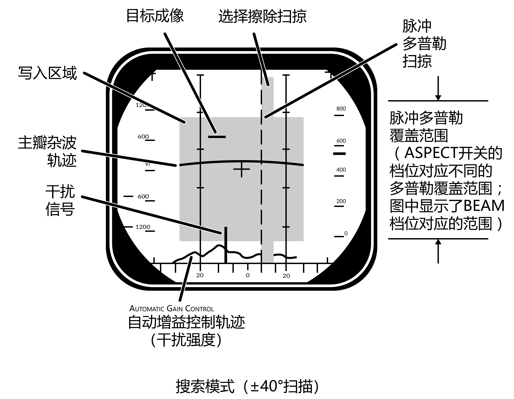
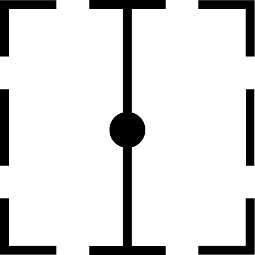
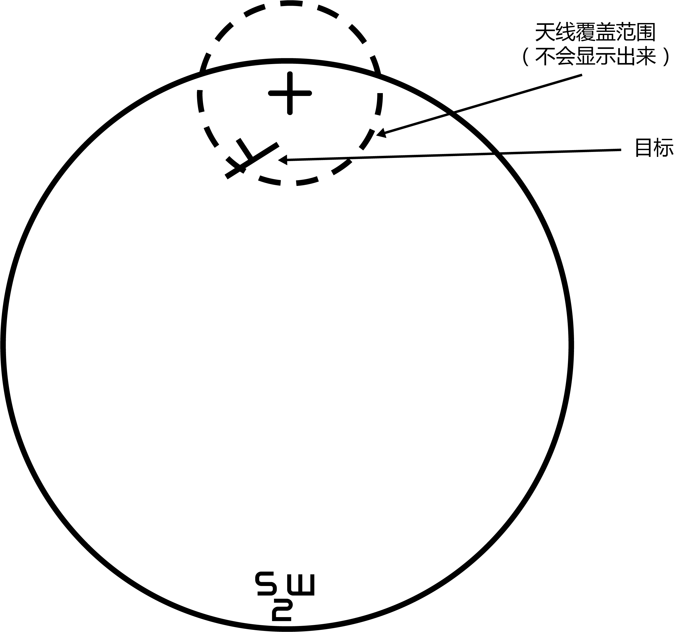
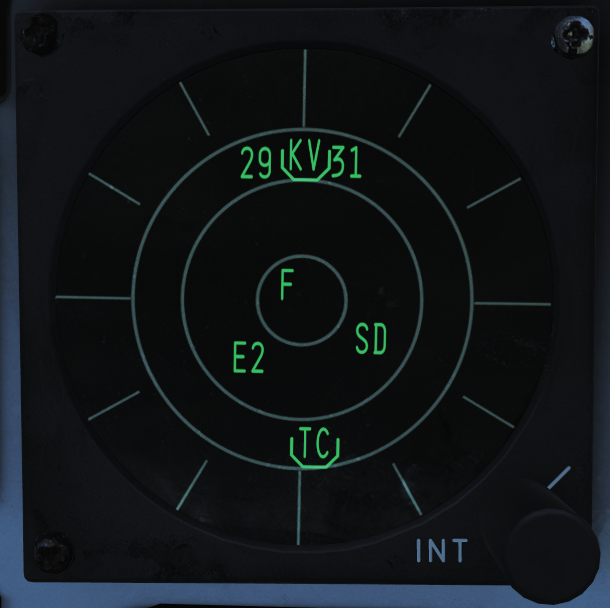
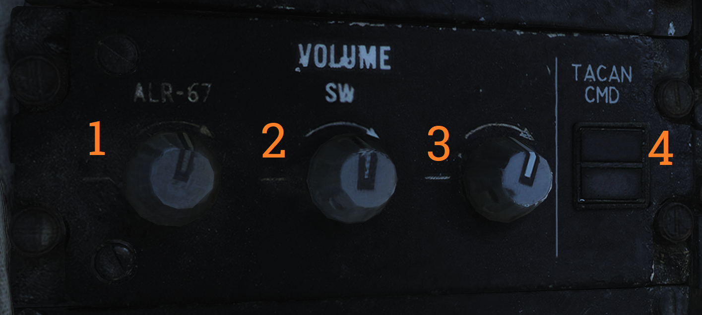

总体设计和系统概述¶
发动机和油门控制¶
为 F-14B 提供动力的两台 F110-GE-400 发动机由 AFTC（增推扇叶温度控制器）控制。AFTC 可以看作是更先进的现代发动机上使用的FADEC（全权限数字式发动机控制）的前身。
AFTC 除了可以控制发动机本身，还能控制发动机喷口开闭。 除此之外，AICS（进气控制系统）通过控制通过可变几何进气道——更确切地说，是通过进气道中的可变斜板——改变进入发动机的气流，使发动机获得稳定的亚音速气流。
ATFC 和 AICS 通过相应的传感器来获得数据，然后根据设定的程序来控制发动机运行。
此外，两台发动机分别驱动相互独立的供油系统、液压系统和发电机，以此来增加系统余度。
在 AFTC 发生故障的情况下，MEC（发动机主控）可以提供直接机械控制来继续来控制发动机。 正常模式，即 AFTC 模式，是发动机的主要模式（PRI），而使用机械控制的 MEC 模式则是次要（SEC）模式。 AFTC 故障时，飞机会自动选择次要模式，但飞行员也可以手动选择次要模式。在次要式下，发动机会禁用加力燃烧室，并会将发动机喷口收至最小位置并固定，这些举措会使发动机性能下降。
油门控制¶

F-14 的油门杆行程中有数个限位机构，以防止发动机意外启动或关闭发动机，或意外启用加力燃烧室。此外，系统会根据油门握把的位置来控制几个不同的系统，如上图所示。这些系统中，最重要的是就是发动机燃油关断和点火系统。
油门杆有三种操作模式：
第一种模式是 MAN（手动模式）模式是，这是一种机械操作模式。该模式下，油门杆通过机械连接直接控制发动机。由于采用直接机械连接，手动模式下的控制精确度并不高，因此手动模式通常只作为备份模式使用。
第二种模式是 BOOST（助力）模式，该模式是油门的正常工作模式。在这个模式下，油门杆通过传感器电路控制作动器，使用与机械连接相同的控制元件来操作发动机。但与机械模式不同的是，此模式下操控油门握把所需要的力度更小，且控制精度更高。
第三种模式是 AUTO（自动）模式，即进近推力补偿模式。启用该模式时，飞机在进近期间会自动控制油门以保持最佳进近迎角。
油门模式的选择开关位于油门杆旁边的进气道斜板 / 油门控制面板上。开关内的电磁铁将这个弹簧开关保持在选定位置，但如果飞行参数和系统状态无法满足自动油门接通条件，自动油门控制就会解除，且开关弹回 BOOST 档位。
启用自动油门需满足下列条件：油门当前位置可保持发动机 RPM（转速）在75%至90％的区间内，起落架手柄放下并且机轮不承重。 如果飞机当前状态不再满足自动油门的接通条件，用力推动油门杆，或按下左油门握把上的 CAGE / SEAM 按钮，开关内的电磁铁就会释放开关，使其弹回助力模式。
此外，飞行员还可以使用进气道斜板 / 油门控制面板上的油门温控开关来调节标准油门计算机增益。这个开关有 HOT、NORM 和 COLD 三个档位，HOT 档位增大标准油门计算机增益（和有效推力），COLD 档位减小标准油门计算机增益。 这些设置通常对应外部气温的“冷”和“热”，但飞行员应根据实际油门情况进行设置。
RATS，即做航降减推系统，会限制着陆后的发动机推力，使着舰后的发动机推力减小至适合舰上作业的程度（以减少阻拦设备的损耗）。任意一个主起落架负重就会启动该系统。如果打开加力燃烧室，RATS 会自动禁用。
最后值得一提的是，F110-GE-400 发动机上实现并应用了不对称推力限制系统（ASYM LIMITER）。油门选择加力推力时，如果只有一侧发动机的加力燃烧室启动，那么推力限制器就会将这一侧发动机保持在最小加力推力，直到另一侧的发动机加力燃烧室启动。
发动机和油门控制开关以及指示器¶

ASYM LIMITER（1）开关位于不对称推力限制器 / 发动机模式选择面板上。开关带有保护盖，且默认位置为 ON，飞行员可以通过这个开关来启用或禁用不对称推力限制器。
这个面板上还包括两个 ENG（发动机）MODE SELECT（模式选择）开关（2），它们分别用于选择左发动机（L ENG）和右发动机（R ENG）的 PRI 模式或者 SEC 模式。

进气道斜板 / 油门控制面板包含了大多数与发动机相关的控制。
THROTTLE MODE（1）开关是一个可以由内置的电磁铁保持位置的弹簧开关，释放开关后，开关弹回 BOOST 档位。飞行员可以通过它来设置油门的三个模式： AUTO、BOOST、MAN 模式。
THROTTLE MODE 开关右边的 THROTTLE TEMP（2）开关可以用来设置标准油门计算机增益。
最上方的 INLET RAMPS（3）开关用于控制进气道斜板；将开关拨至自动（AUTO）档位来启用自动斜板控制，或者直接选择收起（STOW）档位来收起进气道斜板。
发动机启动开关（4）用于选择需要启动的发动机。外部气源或另一个已启动发动机的交叉引气会驱动空气涡轮启动器，使被选中的发动机 RPM 上升至 20% ，此时我们需要将相应一侧的油门握把从关断位移动到怠速位来给发动机点火。在发动机 RPM 上升至 50% 时，启动开关会自动中置。但如果开关未能自动回中，飞行员需要手动将其拨回中间位置，避免损坏空气涡轮启动器。
油门握把移出关断位置时会接通主点火电路，但在主点火电路出现故障的情况下，BACK UP IGNITION（5）开关可用于启用备用点火系统。

外部环境控制面板上的 ENG/PROBE ANTI-ICE（2）开关用于控制发动机和进气道板除冰系统以及数个机外传感器探头加热器。选择 ORIDE（越控）档位会立刻启用加热系统，选择 AUTO 档位时，系统会在检测到结冰时自动启动，而选择 OFF 档位会禁用此系统。
发动机仪表组（EIG）及相关指示器和注意灯¶

发动机仪表组 可以让飞行员随时监控 RPM（发动机转速）、EGT（涡轮排气温度）以及 FF（燃油流量）。
| 注意: | 上图中显示的是 TF30 发动机仪表组，而 F110 发动机仪表组将在不久后实装。 |
|---|

发动机喷口位置表显示各个发动机当前的喷口位置：0 表示喷口完全收起（喉部面积小），顺时针旋转到头表示喷口完全打开（喉部面积大）。

油压表会显示对应一侧的发动机机油压力，用于检查发动机油压是否处于正常水平。
前座的注意-提示警报灯面板和 HUD 的两侧分别装有数个发动机相关的告警灯。
一旦检测到发动机压气机失速，告警灯就会以 3Hz 的频率闪烁，左侧的告警灯代表左发动机失速，右边的告警灯代表右发动机失速。在告警灯闪烁的同时还伴有频率为 320 Hz 的告警音。
如果自动油门系统通过其他途径断开，而不是通过油门模式开关断开，那么左侧发动机失速告警灯的下方的 AUTO THROT（自动油门）注意灯会亮起 10 秒来提醒飞行员注意。
主注意和提示灯面板上装有下列这些发动机相关的提示和告警灯：
- INLET ICE - 指示灯亮起表示探测到左发动机进气道结冰。
- L INLET 和 R INLET - 指示灯亮起表示对应进气道的 AICS 系统出现了故障。
- OIL PRESS - 指示灯亮起表示一台发动机的油压过低。
- BLEED DUCT - 指示灯亮起表示一台发动机中出现了高温气流泄漏。
- L RAMPS 和 R RAMPS - 指示灯亮起表示对应侧的进气道斜板没有锁定到指定位置。
- START VALVE - 指示灯亮起表示发动机启动阀开启。如果发动机启动后指示灯仍亮起，需控制发动机启动开关，将其拨回中间位置。
- L ENG SEC 和 R ENG SEC - 指示灯亮起表示其对应的发动机正在次级模式下运行。
- L GEN 和 R GEN - 指示灯亮起表示其对应的发动机发电机故障。
- L OIL HOT 和 R OIL HOT - 指示灯亮起表示其对应的发动机机油过热。
- L FUEL PRES 和 R FUEL PRES - 指示灯亮起表示其对应的发动机燃油增压泵中的压强低于9 psi。
- RATS - 指示灯亮起表示RATS（航降减推系统）已经启动。
燃油系统¶
1 - 受油管（空中加油），2 - 地面加油口（右侧），3 - 前机身油箱，4 - 左侧外部副油箱，5 - 左侧翼箱油箱，6 - 左侧机翼油箱，7 - 通气油箱，8 - 放油装置，9 - 后机身油箱，10 - 右侧翼箱油箱，11 - 右侧机翼油箱，12 - 右侧外部副油箱。
F-14 的主要燃油储存设备由两组供油系统组成，每个系统分别对应一个发动机。右发动机供油系统的燃油来自右侧机翼油箱、右侧翼箱油箱和机身前部油箱，而左发动机供油系统的燃油来自机身后部油箱、左侧机翼油箱和左侧翼箱油箱。所以在读出油量表读数时，务必记住这一点。
F-14 的最大可用燃油量约为 20,000 磅，每个油箱的容量如下表所示。
| 油箱群组 | 容量（磅） |
|---|---|
| 前部油箱 | 4,700 |
| 后部油箱 | 4,400 |
| 右供油油箱 | 1,600 |
| 左供油油箱 | 1,500 |
| 机翼内油箱 | 4,000 |
| 外部油箱 | 3,600 |
燃油量指示器和控制¶

位于右膝仪表板上的燃油量显示器显示了机内油箱的燃油剩余量和外挂副油箱中的燃油剩余量。
燃油量显示器最上方的计数器（1）显示了当前设置的 BINGO 油量，也就是返航油量。飞行员可以通过旁边的旋钮（5）来调定所需的返航提醒油量值。当剩余燃油总量低于设定值时，BINGO 油量注意灯就会亮起。
中间的 TOTAL 燃油量计数器（2）显示了剩余的全部燃油重量。
使用燃油管理面板上的滑动弹簧开关的对应档位来使 L 和 R 燃油量计数器中显示各个机翼油箱（WING）中的燃油量或者外部油箱（EXT）中的燃油量，松开开关后，开关会弹回显示供油油箱（ FEED ）油量的档位。当显示机翼油箱或外部油箱油量时，左机翼或左外部油箱油量显示在 L 显示器上，右机翼或右外部油箱显示在 R 显示器上。
FUS（机身油箱）和 FEED（供油油箱）显示器以千磅为单位分别显示了 AFT（后机身油箱）和 L（左供油油箱）和 FWD（前机身油箱）和 R（右供油油箱）的剩余燃油量。
另外，RIO 驾驶舱右仪表板上也显示了燃油总量。而且这个显示器只能显示燃油总量（详见燃油总量表）。

飞行员可以在左侧垂直控制台的燃油管理面板上对燃油系统进行控制。
QTY SEL（1）滑动弹簧开关在上文关于油量表中的 L 和 R 燃料显示器的描述中有详细说明。
单发停车或供油油路故障可能会使得两侧油箱重量不平衡，这种情况下，飞行员可以使用 FEED 开关选择 FWD （前机身油箱和右侧油箱）或者 AFT （后机身油箱和左侧油箱），使被选中的油箱直接向两侧的发动机供油，而不再给其对应的发动机单独供油，从而使油箱中的燃油量平衡。当保护盖关闭时，这个开关会被锁定在 NORM 档位。
WING/EXT TRANS 开关用于控制机翼油箱和外部油箱之间的燃油转移。开关位于 AUTO 档位时，起落架收起后，机翼油箱和外部油箱之间的燃油转移就会自动开启。当开关位于 ORIDE 位置时，无论起落架处于什么位置，机翼油箱和外部油箱之间的燃油转移都会开启。通常来说，在地面，或者在电气系统出现故障时需要选择该档位，以绕过起落架收回检测对燃油转移的限制。开关位于 OFF 档位时，机翼油箱和外部油箱之间的燃油转移就会被完全禁用，但是如果在 MASTER TEST（主测试）面板上进行 INST 测试，或受油管开关置于 ALL EXTD 档位，或者放油开关开启时，WING/EXT TRANS 开关会自动回到 AUTO 档位。
使用 DUMP（5）开关可以通过放油装置来释放燃油，同时它还会启用所有燃油输送系统，这样一来机翼和外部油箱中的燃油也可以通过放油装置释放。如果起落架负重，或者减速板未完全收起，那么放油控制电路将被禁用。
| 注意: | 尽管从技术上来说，放油过程中是可以开启加力燃烧室的，但是这样有可能会点燃放出的燃油，因此禁止在加力时进行放油操作。 |
|---|
空中加油¶
上文所讲的燃油管理面板上还可以控制空中加油系统。
REFUEL PROBE（6）开关用于控制受油管并选择接收燃油的油箱。标有 EXTD 标志的两个档位都会使受油管移动至完全伸出位置并接收燃油，区别是，选择 ALL 档位时，燃油系统允许对包括机翼油箱，外部油箱和机身油箱在内的所有油箱加油，但如果选择 FUS 档位，则只允许对机身油箱加油。将开关向下拨到 RET（收回）位置，就可以收起受油管并且让燃油系统回到正常的运行模式。
| 注意: | 选择 EXTD ALL 档位时， WING/EXT TRANS 开关会自动回到 AUTO 档位。 |
|---|
火灾报警和灭火系统¶
火灾报警系统¶
F-14 的火灾探测系统有两个火灾传感回路，每个发动机各有一个。
如果整个回路中每一处检测温度都超过 600°F（约 316°C），或在任意一个 6 英寸的范围内检测到超过 1,000°F（约 538°C）的高温，回路便会触发火灾告警电路。左探测回路点亮空战格斗面板面板上的左火警灯，而右探测回路点亮右火警灯。
此外，F-14 中设计有多个用于探测发动机热气流泄露的传感器，如果检测高于575 °F （约302 °C）的高温，传感器将点亮飞行员的注意 - 提示灯面板上的 BLEED DUCT 告警灯。
灭火系统¶

|
{kind=link}
F-14 的灭火系统包含两个装有灭火剂的储液瓶，飞行员可以将这些灭火剂注入指定的发动机中。虽然该系统包含两瓶灭火剂，但是两瓶会同时向发动机中注入灭火剂，因此，该系统是一个只能扑灭单个发动机火灾的一次性系统。
由于灭火剂的有效性取决于它在发动机中存留的时长，因此，在较低的空速下注入灭火剂可以提升灭火效率，因为低速下，灭火剂被气流吹出发动机需要更长的时间。灭火剂本身是一种低腐蚀制剂，能在有效灭火的前提下尽可能减少对发动机造成的损伤。
飞行员可以抽出与起火侧发动机相对应的 FUEL SHUT OFF 手柄（见上图），并按下该手柄后面的灭火器按钮来激活灭火系统。拉起手柄将切断对应一侧的发动机供油，而灭火器按钮则将灭火剂注入到发动机中。
灭火系统连接了两个提示灯，分别指示对应的灭火剂瓶状态。ENG FIRE EXT 表示主瓶低压， AUX FIRE EXT 表示辅瓶低压。两者都位于飞行员警告-提示面板，详见注意 - 提示灯面板。
指示灯亮起表示成功启用了灭火系统，但也可能表示由于故障导致灭火剂泄露，瓶内压强降低。
电力系统¶
F-14 的所有主要电力均由两个发动机驱动的交流发电机提供。 每个连接到发动机齿轮箱的发电机都能够产生足够的电力来单独驱动所有机载系统。
F-14 装备了两个变压整流器来提供 28V 直流电，而且每个变压整流器都可以单独驱动所有机载直流电设备。
F-14 在前起落架后方有一个外部交流电源插座，它能够驱动机载交流电与直流电（通过变压整流器）设备。发动机启动且内部发电机正常工作后，外部电源将自动切断与飞机电力系统的连接。
应急动力¶
F-14 的联合液压系统可以驱动一个作用有限的应急发电机来作为交流/直流电源。如果系统失去主发电机提供的电力，应急发电机将在1秒内接管关键飞行系统的供电。
控制和指示器¶

电气系统的控制开关位于主发电机控制面板上。
MASTER GEN（1）开关控制主发电机与电气总线的连接。开关的 NORM 档位用于将对应一侧的发电机连接到总线。OFF/RESET 档位用于断开发电机与总线的连接，并且复位任何由于电源超出正常限制而切入的保护电路。TEST 档位将启动发电机，但不会将其连接到电力总线，这样可以在不影响其他飞机系统的情况下测试发电机。选择 NORM 档位后，开关会被锁定在 NORM 档位，提起开关后才能将其拨回 OFF/RESET 档位。
EMERG（2）开关用于控制应急发电机。开关位于 NORM 档位时，如果主发电机发生故障，应急发电机将自动连接到应急总线。OFF/RESET 档位将禁用应急发电机，并在复位相关的保护电路。此开关被保护盖固定在 NORM 档位，首先需要升起保护盖，然后才能将开关拨至 OFF/RESET。
电力系统相关的警报灯和提示灯位于飞行员注意 - 提示灯面板上。L GEN 和 R GEN 指示灯亮起表示对应的发电机工作状态异常，这可能是由于系统出现故障，或驱动发电机的发动机没有运转。
TRANS/RECT 提示灯亮起表示至少有一个变压整流器故障。
应急发电机可以通过选择主测试面板上的 MASTER TEST 开关的 EMERG GEN 档位来测试。GO 灯亮起表示测试通过，而 NO GO 灯亮起表示测试未通过。
断路器¶
F-14 的断路器位于飞行员的左/右膝仪表板以及 RIO 座椅后部的左侧和右侧。断路器弹出时回将对应的系统从电路中隔离，以保护机载系统免受过大电流影响。断路器处于弹出位置时，可以看见断路器上的白线标识。 按下断路器来将其复位；抽出断路器也可以从电路中手动隔离相应的系统。
DCS 中实装 F-14 的断路器功能后，我们会在此处详细描述各个断路器的功能。
液压系统¶
F-14 有两个独立的液压系统，分别是飞行液压系统和联合液压系统。
两个系统分别由两个发动机连接的液压泵驱动，飞行液压系统由右侧发动机驱动，联合液压系统由左侧发动机驱动。两个液压系统的正常工作压强约为 3000 psi（磅力每平方英寸）。
飞行操纵面由这两个液压系统共同驱动，而联合液压系统同时也向一些二级系统提供压力，例如襟翼、起落架和受油管。这使得两个系统可以在另一个系统发生故障的情况下相互独立地驱动操纵面。
此外，通过起落架手柄旁边的开关可以从液压系统中隔离那些飞行不相关的系统。隔离后，这些与飞行操控不直接关联的系统受损时，并不会导致联合液压系统压强降低或液压液泄露。可以从联合液压系统中隔离的系统分别是：起落架、机轮刹车和受油管。起落架手柄放下时，这个开关被机械固定在关闭档位，以避免意外隔离起落架和制动系统。
如果飞行液压系统或联合液压系统中的一个液压泵失效，另一侧仍能正常工作的液压系统可以通过液压传输泵继续对该系统加压。液压传输泵是一种全向液压驱动泵，可以由一个液压系统驱动来供应另一个液压系统。如果驱动（液压传输泵的）系统中的压强保持在在 3,000 psi 左右，那么通过液压传输泵可以保持另一侧液压系统压强处于 2,400 和 2,600 psi 之间。如果其中一个液压系统的压强低于 500 psi ，传输泵将切断，以防止泵损坏，避免另一个正常工作的液压系统的压强降低。飞行员也可以手动关闭液压传输泵。
在两个液压泵都发生故障的情况下，飞行液压系统可以由一个电动泵驱动，这个电动泵被称为应急飞行液压泵。应急飞行液压泵能独立驱动尾部的操纵面，即使主液压系统中无压力，飞机也能通过应急液压返回基地并着陆。如果两个主液压系统中的压强降至 2,100 psi 以下，那么电动泵会自动启用；如果压强重新达到 2,400 psi，则电动泵会关闭。电动泵自动激活后会使系统进入低速模式（LOW，使用备用动力模块），但飞行员也可以按需切换高速模式或低速模式。飞行液压系统由电动泵时，操纵面的偏转率会降低，且低速模式下偏转率比高速模式下更低。
如果联合液压系统中没有无足够压强，飞行员可以通过手动液压泵对受油管和机轮刹车蓄能器加压。此方法主要用于地面无动力操作，但在空中可作为备用。
控制和指示器¶

HYD PRESS（液压指示器）由两个仪表组成：COMB 表示联合液压系统，FLT 表示飞行液压系统，读数单位为千 psi，每一格刻度代表 1000 psi 。液压泵正常工作时，两个指针应指向标注了 3,000 psi 压强值的标尺上。
仪表下方的 SPOIL 标识旗显示了液压系统是否能驱动扰流板，EMER FLT 标识旗显示了应急飞行液压的工作模式。HI 标识旗表示高速模式，LOW 标识旗标识低速模式。

制动压力表显示了制动蓄能器中的可用压强。 PARK 表示停放刹车压强，AUX 表示机轮刹车压强。绿色区域表示约 2,150 psi 至 3,000 psi 的压强，红色区域标识当前可用压强低于 2,150 psi 。

HYD TRANSFER PUMP ，也就是液压传输泵开关，位于飞行员右侧控制台的面板上。通过这个开关可以手动关闭液压传输泵（SHUTOFF 档位），但开关通常处于 NORMAL 档位，使液压传输泵在一侧液压泵出现故障时自动启动。此开关被保护盖固定在 NORMAL 档位。
紧急飞行液压泵控制开关位于主测试面板上，它带有一个保护盖。保护盖关闭时，开关固定在 (AUTO)LOW 档位，这将允许电动泵自动激活。如前文所述，升起开关保护盖后，飞行员可以手动选择 HIGH（高速模式）和 LOW（低速模式）两个档位。
注意 - 提示灯面板中唯一与液压系统相关的注意灯是 HYD PRESS 灯，任何一个主液压系统压力低于 2,100 psi 时，注意灯会亮起。而当两个液压系统中的压强再次高于 2,400 ps I时，注意灯熄灭。
机翼后掠系统¶

基于马赫数的机翼后掠控制规律及襟翼互锁机制。
机翼后掠系统控制 F-14 机翼的几何形状，使机翼能够在空中改变后掠角，从 20 度移动到 68 度。在甲板上，75° 的停放后掠角可以将 F-14 的翼展进一步减少至33英尺（约10米）。
机翼由液压机械螺旋作动器移动，且作动器之间的机械互联确保机翼同步收放。两个主液压系统正常工作时，最大机翼后掠变化率大约为 15° 每秒。但负 G 或大量正 G 机动会影响实际的变化率。
在正常操作中，CADC，即中央大气数据计算机，通过机翼后掠程序根据当前的马赫数来控制机翼后掠位置，这被称为 AUTO 模式。飞行员还可以手动选择机翼后掠位置，也可以选择 BOMB（投弹）模式，控制程序会按需将机翼后掠角设置为 55° 或更大。简而言之，CADC 机翼后掠程序确定了机翼的最大前移位置（最小后掠角度）。所有这些控制都是由电动指令通过两个独立通道（以增加控制余度）控制机翼后掠作动器来完成的。
ACM 面板旁的机翼后掠指示器中显示了当前指令后掠位置、CADC程序设定的机翼位置以及实际机翼位置。
应急模式¶
机翼后掠系统的正常模式可以电动控制机翼后掠，但作为备用，也可以通过应急模式，以机械链接来直接控制机翼后掠。这是通过油门弧座右侧的应急机翼后掠手柄完成的。该手柄作为备份机械控制，与机翼后掠系统中的液压阀直接相连。
正常模式下，机翼后掠程序控制手柄下方的伺服机构来移动手柄，确保它的位置与机翼实际后掠位置相符。为了解除电动控制并启用应急模式，首先打开手柄上保护盖，然后抽出手柄以获得额外的力矩。随后可以将手柄从电动伺服系统的随动限位器中移出，从而实现手动控制机翼后掠位置。
在此模式下，飞行员必须确保遵循下表中的控制规律以避免损坏机翼：
| 速度（指示马赫数） | 机翼向前最大位置（最小后掠角度） |
|---|---|
| 0.4 | 20° |
| 0.7 | 25° |
| 0.8 | 50° |
| 0.9 | 60° |
| 1.0 | 68° |
若要返回正常操作模式，应将手柄调整到所需位置并按下，然后关闭保护盖。 最后按下燃油管理面板上的 MASTER RESET 按钮，并将机翼后掠系统的指令位置设置在与手柄相同的位置。这时，电动伺服装置会移动到指令位置并重新起用随动限位器，恢复正常操作模式。
机翼停放后掠¶
紧急机翼后掠手柄也用于选择机翼的停放后掠位置。停放后掠仅在地面使用，其目的是为了减小翼展，便于在甲板上停放飞机。当机翼将掠过水平尾翼时，水平尾翼控制系统会通过限制平尾的偏转，以防机翼和安定面相互碰撞而损坏。
使用应急机翼后掠手柄，将其移动至 68° 的位置并保持在展开位置来将机翼移动至停放后掠位置。这会让翼根的保形气囊放气并解除水平尾翼控制系统，并使 HZ TAIL AUTH 注意灯亮起。当 HZ TAIL AUTH 注意灯熄灭，且机翼后掠指示器上显示 OVER 标识旗时，互锁会解除，这时可以将手柄移动至 75° 的位置并按下，然后关闭手柄保护盖。
为了使机翼退出停机后掠，将手柄抽出并向前移动至 68° 的位置。这将再次使 HZ TAIL AUTH 注意灯亮起。当机翼完全离开停放后掠范围后，注意灯熄灭，且机翼后掠指示器中的 OVER 标识旗消失。
接下来的操作步骤与从紧急模式返回正常模式相同：将手柄移动至随动限位器的位置上，然后按下 MASTER RESET 按钮。
控制和指示器¶
用于控制机翼后掠系统的机翼后掠开关（电动控制）位于右油门握把上，而应急机翼后掠手柄（机械控制）位于油门弧座右侧。详见油门握把和油门弧座。
右油门握把上的机翼后掠苦力帽开关通常处于 AUTO 档位，即苦力帽开关向上。这使 CADC 可以根据机翼后掠程序来调节机翼的后掠角。而将苦力帽开关向下拨至 BOMB 档位会选择投弹模式，机翼会根据 CADC 选择的控制规律，移动至 55° 或更向后的位置。
苦力帽开关的 AFT（向后）和 FWD（向前）档位用于手动调节机翼位置，但不能超过 CADC 设定的最小机翼后掠角度（也就是机翼向前移动的最大位置）。
油门弧座右侧的应急后掠手柄用于控制机械应急模式，详细见上文中的紧急模式。

ACM 面板右侧的机翼后掠指示器用于指示当前的机翼后掠位置。 左侧的指针指示了 CADC 设定的机翼位置。左右两个垂直的条形指示器分别指示了机翼当前的指令位置和实际位置。
最右侧的五个垂直排列的显示窗：
- OFF - 关闭，系统无法操作。
- AUTO - 自动，机翼后掠由 CADC 控制。
- MAN - 手动，机翼由右油门握把上的苦力帽开关控制。
- EMER - 应急，机翼由应急机翼后掠手柄控制。
- OVER - 停放后掠，机翼处于停机后掠状态。
相关的告警灯与提示灯位于垂直显示指示器（VDI）和飞行员注意 - 提示灯面板上。
两个机翼后掠通道都出现故障时，或使用应急机翼后掠模式时，VDI右侧的 WING SWEEP 告警灯将亮起。如果未使用应急模式，但该警报灯亮起，则表示电气系统可能出现故障，应使用应急模式来控制机翼后掠系统。
当至少一个电动机翼后掠通道无法操作时，位于飞行员注意-提示灯光面板上的 WING SWEEP 警报灯将亮起。
机翼后掠系统测试¶
起飞前，可通过主测试面板，在不移动机翼的情况下对机翼后掠系统进行测试。
若要进行测试，需将机翼后掠模式设置为 AUTO，然后按下 MASTER RESET 按钮。接下来，将（主测试面板的） MASTER TEST 开关拨至 WG SWP 档位。
机翼后掠指示器上的CADC指令位置指示器将移动至 44° 的位置。飞行员注意 - 提示灯面板上的 WING SWEEP 和 FLAP 提示灯以及垂直显示指示器（VDI）上的 REDUCE SPEED 告警灯将亮起。
| 注意: | WING SWEEP 提示灯将在测试开始3秒后亮起，然后关闭。测试进行8秒后，该提示灯会再次亮起。 |
|---|
当 CADC 指令位置指示器向前移动到 20° 位置时，测试结束，上述指示灯将熄灭。现在将 MASTER TEST 开关拨至 OFF 档位来结束测试。整个测试过程大约需要25秒。
| 注意: | 测试过程中，RUDDER AUTH 和 MACH TRIM 灯可能会同时亮起或亮起其中一个，且驾驶杆可能会移动。这些是正常现象，可以忽略。 |
|---|---|
| 注意: | 主测试面板上的 WG SWP 测试尚未实装。 |
飞行控制系统¶
F-14 “雄猫” 的飞行控制系统由两个主液压管路驱动，这两个液压系统分别由对应的发动机液压泵驱动。
飞控系统进行纵向（俯仰）控制时，两侧的水平尾翼偏转角度一致，其作动方式与传统升降舵相同。
然而，进行侧向（滚转）控制时，水平尾翼和扰流板一同作动。为了使飞机进行滚转，两侧的水平尾翼彼此相对地偏转，与滚转方向的一侧的扰流板一起作动，从来起到副翼的作用。
F-14 的方向舵是标准的双垂直尾翼方向舵。
控制面位置指示器中会指示飞行操纵面的位置，它也可以用于检查驾驶杆回中时的操纵面配平位置。
| 注意: | 在大于15单位 AOA 时，由于经过飞行操纵面的气流发生变化，应使用方向舵来控制飞机进行侧向（滚转）运动。 |
|---|
配平¶
飞行员可以通过驾驶杆上的配平开关进行纵向和横向配平。按下配平开关会改变驾驶杆的回中位置，以此来配平飞机。方向舵由进气道斜板 / 油门控制面板上的 RUDDER TRIM 配平，同理，这个配平开关会改变方向舵回中位置。
马赫数配平和 ITS（综合配平系统）会自动补偿纵向配平变化。马赫数配平系统可补偿跨音速和超音速配平变化，而 ITS 会补偿由于减速板展开和襟翼放下导致的配平变化。
AFCS 自动飞行控制系统¶
AFCS，也就是自动飞行控制系统，能通过 AFCS 传感器生成的自动操纵面指令来为飞机提供额外稳定性（SAS，增稳系统）。AFCS 控制面板中的三个开关分别用于控制 AFCS 的仰俯、滚转和偏航增稳通道。
其中，仰俯和滚转通道开关是弹簧开关，释放开关时，开关会弹回关闭档位，但开启增稳时，开关内的电磁铁会将开关保持在开启档位。也就是说，如果系统关闭或者不可操作，开关将自动回到关闭档位。而偏航开关是纯机械结构的开关。
当飞行迎角超过15个 AOA 单位时，应关闭滚转 SAS，因此，战斗机动中需关闭此开关。
按下驾驶杆杆上的自动驾驶应急断开开关时，仰俯和滚转通道将会断开。
自动驾驶¶
除了飞行控制增稳，AFCS 还提供了自动驾驶功能。若要使用自动驾驶，则必须启用所有三个增稳通道。
自动驾驶系统的控制开关位于AFCS 控制面板。
可用的自动驾驶模式包括姿态保持、航向保持、地面轨迹、高度保持、VECTOR/PCD（引导航向/精确航线方向）和 ACL（自动航母着陆）模式。
将自动驾驶的 ENGAGE 开关开启即可接通姿态保持，AFCS 会保持飞机当前的飞行姿态。飞机会自动在仰俯30°和滚转60°的范围限制内移动。当前的飞行姿态可以通过移动驾驶杆来调整，松开驾驶杆后，AFCS 会继续保持选定的。
注意，启用其他自动驾驶模式前，首先需要开启 ENGAGE 开关。
航向保持开关的 HDG 档位用于启用航向保持。操纵飞机至所需的航向，接通后如果飞机坡度小于5°的话即可保持航向。
选择航向保持开关的 GT 档位会启用地面轨迹模式。选择该模式后，等待垂直显示指示器（VDI）左侧的 A/P REF 告警灯亮起，然后按下驾驶杆上的前轮转向按钮。此时，A/P REF 告警灯将熄灭，地面轨迹模式启用，自动驾驶仪会补偿飞机风偏以尽可能跟随地面轨迹（保持飞机相对于地面的轨迹是指向当前航向的一条直线）。
ALT 开关用于选择高度保持模式，与地面轨迹模式中类似，A/P REF 警报灯亮起后，按下前轮转向按钮启来激活高度保持模式。
数据链路引导航向 - 精准航线方向模式允许 Link 4 控制器远程控制飞机。该功能在 DCS 中未模拟。
最后一种自动驾驶模式是 ACL，也就是自动航降模式，这个模式将 Link 4 数据链路信息和机载雷达信标相结合进行自动航降。若要启用ACL，首先将 VEC/PCD 开关拨至 ACL 档位，等待 A/P REF 亮起。截获 ACL 下滑道，且 VDI 的 ACL READY 和 A/P CPLR 警报灯亮起后，按下操纵杆的前轮转向按钮来接通 ACL，让数据链路控制飞机进行着舰。ACL 模式激活后， A/P REF 警报灯将熄灭。
ACL 可以与 APC（详见油门控制）结合使用来进行全自动降落。ACL 可以通过右油门握把上的 PLM 按钮断开，而 APC 则通过左油门握把上的 CAGE/SEAM 按钮断开。
所有自动驾驶模式都可以通过用力移动驾驶杆来越控，也可以通过自动驾驶应急断开开关来解除；这会将所有自动驾驶开关重置到关闭档位。
扰流板¶
扰流板位于机翼上翼面，上文中的飞行控制系统内容中介绍了扰流板如何控制飞机滚转；扰流板也作为防滑系统系统的一部分，用于在地面提供制动；同时，扰流板也是 DLC 系统的一部分（详见下一个标题）。
为了避免和机身冲突，扰流板仅能在翼掠角小于 62° 时展开。
扰流板故障时，扰流板对称保护逻辑会禁用故障扰流板区域内的全部扰流板模块，无论是内侧还是外侧扰流板。如果发生这种情况，注意 - 提示灯面板中的 SPOILERS 注意灯会亮起。
为应对这种情况，需将扰流板故障越控中对应故障扰流板区域的控制开关保护盖升起，然后将开关拨至 ORIDE 档位，接着按下位于燃油管理面板中的 MASTER RESET 按钮来进行越控。
控制面位置指示器中显示了扰流板位置。
直接升力控制（DLC）¶
直接升力控制（DLC）无需控制仰俯和油门输入即可调整飞机下滑道。DLC 使用两边内侧扰流板并微调水平尾翼来调整升力。
襟翼和起落架放下时，按下操纵杆的DLC开关即可接通 DLC 。这会使内侧扰流板向上展开一半，飞行员可以通过驾驶杆上的 DLC 和机动襟翼控制拨轮来调节扰流板开闭。
向前转旋钮使扰流板向最大位置展开，减少升力并降低下滑道。向后转旋钮使扰流板收回到与机翼平齐的位置，增加升力并提高下滑道。
再次按下 DLC 开关会断开 DLC 系统。
襟翼和缝翼¶
F-14 “雄猫” 的襟翼和缝翼可用于两种模式。
普通控制模式下，油门弧座旁的 FLAP 控制杆可以控制襟翼和缝翼的正常伸展。通过控制杆，可以将襟翼调节至收起和完全展开之间的任意位置。襟翼最大展开角度是 35°，缝翼最大展开角度是 17°。辅助襟翼，即最内侧的襟翼，只有两个位置——收起和展开。当 FLAP 控制杆移动超过5°的位置时，辅助襟翼将完全展开。
如果由于故障导致襟翼无法收起，则应将 FLAP 控制杆移至 UP 档位后，继续向外侧移动并向上推至 EMER UP 档位，以越控故障的互锁机构。
而另一种襟翼和缝翼的控制模式是机动襟翼模式，该模式下，CADC 自动使用襟翼和缝翼来提升飞机的机动性能。此模式下襟翼最大伸展至10°，缝翼最大伸展至7°，而最内侧部分的辅助襟翼则被禁用。
虽然机动襟翼系统通常会自动控制襟翼，但是飞行员仍可以通过驾驶杆的 DLC 和机动襟翼控制拨轮来手动控制机动襟翼。向前转旋钮收起襟翼和缝翼，向后转旋钮展开襟翼和缝翼。
机翼后掠时，襟翼收放会受限于机翼后掠位置。机翼后掠角大于21°时，辅助（内侧）襟翼会被收起并禁用。而机翼后掠角大于50°时，所有襟翼都会被收起并禁用。但机翼后掠不会限制缝翼收放。
机轮-襟翼位置指示器上指示了襟翼和缝翼的位置。
飞行员注意 - 提示灯面板中的 FLAP 灯亮起表示襟翼系统出现故障，襟翼处于非对称位置。垂直显示指示器（VDI）左侧的 REDUCE SPEED 告警灯表示空速超过225节但襟翼仍未收起。
减速板¶
F-14 “雄猫” 的减速板安装在机尾，由位于左右发动机之间的三个挡板组成。这些减速板收放所需的动力由联合液压系统提供。
减速板开关位于右油门握把，开关保持在展开档位上的时长决定了减速板展开的位置。选择开关的收起档位时，减速板总是会完全收起。
为了避免减速板受损，空速超过400节后，它们会随着速度的增加逐渐收起。此外，选择 MIL（军用推力）或更大的推力时，减速板会自动收起。
由于展开的减速板会扰动机尾附近的气流，为了避免放油时燃油溅到飞机上，减速板展开时，放油电路会被禁止。
机轮-襟翼位置指示器中显示了减速板的位置。
起落架系统¶
F-14 “雄猫” 采用可完全收起的前三点式起落架，起落架设计得足够结实，以应对航降时对机身带来的巨大冲击。起落架的收放由联合液压系统提供动力，起落架也连接了一个起落架应急放下系统。应急系统使用一个氮气瓶来提供一次性动力。应急系统触发后，需要由地面技术人员复位之后才能正常收回。
相关的控制和指示器的信息，详见起落架控制面板和机轮-襟翼位置指示器。
前轮转向¶
前轮转向系统可以在机轮承重，由飞行员按下驾驶杆上的前轮转向按钮激活。HUD左侧的 NWS ENGA 注意灯亮起表示前轮转向系统激活，详见机轮警告/刹车警告/ ACLS 和 AP 注意/ NWS 启用注意/自动油门注意灯。
机轮不承重（起飞）、供电故障或放下拖拽杆时，前轮转向会自动解除。前轮转向激活时，飞行员再次按下驾驶杆前轮转向按钮也可以将转向系统解除。
系统接通时，前轮通过方向舵脚蹬控制。前轮最大偏转角度可达到70°，也就是说，采用最小转弯半径转向时，转弯内侧的机轮实际上会向后转动。
弹射和阻拦装置¶
前起落架弹射系统¶
F-14 的前起落架配有一套用于在航空母舰上作业时进行弹射起飞的系统。
该系统的三个部件为前起落架支柱伸缩系统、拖拽杆和止动配件。
运用该系统进行弹射起飞时，先使用 起落架控制面板 的 NOSE STRUT 开关来收缩前起落架支柱。把开关保持在 KNEEL 位直到收缩动作停止即可。
这样可以从避震器中排出液压油，将前起落架支柱缩短14英寸。收缩动作完成后拖拽杆会解除锁定，随后可以由甲板工作人员手动放下或通过将前起落架偏转离中心超过10°来放下。
| 注意: | 在DCS中，拖拽杆会随着前起落架支柱的收缩自动放下。 |
|---|
此时，飞机可以被引导至弹射起并通过按下DCS中的默认按键 U 将飞机与弹射器滑块连接。目前DCS未模拟止动杆。
| 注意: | 在移动到弹射器滑块并连接之前应关闭前轮转向以避免错位。 |
|---|
在正确的完成前述程序之后，弹射起飞的最后一步是向“shooter” 或指挥弹射作业的军官敬礼，DCS中默认按键为 左Shift + U 。
弹射器滑块完成冲程后，当拖拽杆从滑块脱离时，前起落架支柱存储的液压能量被释放以向飞机施加抬头力矩，同时也自动把拖拽杆抬升至收起位置。
注意 - 提示灯面板 的 LAUNCH BAR 提示灯会显示拖拽杆的位置状态。当机轮承受压力，拖拽杆未收起并锁定时提示灯亮起；当油门推至 MIL 时提示灯熄灭以表明飞机已经满足弹射条件。当机轮未承受压力时，前起落架支柱未完全伸展、拖拽杆没有收起并锁定或前轮没有正确回中都会导致 LAUNCH BAR 注意灯亮起。上述三种情况会阻碍前起落架收起。
弹射牵引杆中止面板 包含 LAUNCH BAR 开关，该开关用于在弹射中止的情况下将飞机与拖拽杆分离。此功能尚未在DCS中实现，目前脱离拖拽杆需要再按一次连接键，默认为 U 。
阻拦装置¶
位于F-14尾部下方的拦阻钩用于在舰上作业时进行拦阻降落。
系统使用来自飞控和联合液压系统的液压动力，且由电子系统进行控制，因此需要电力以正常运作。
系统通过 拦阻钩控制面板 面板的 HOOK 控制杆操作。UP 收起拦阻钩，DN 将拦阻钩放下至37°以在便正确执行航降时勾住阻拦索。在拦阻钩位置与控制杆位置不符的情况下，HOOK 控制杆旁边的过渡灯就会亮起。
当飞机发生故障导致拦阻钩无法正常放下时，可使用机械备份来放下拦阻钩。要激活机械备份，拉出控制杆并逆时针旋转90°。这将解开机械锁并释放使拦阻钩保持收起的液压，从而放下拦阻钩。
如果电力和液压都已恢复，则可顺时针旋转控制杆90°并推入原位，然后将控制杆放到 UP 位来收起拦阻钩。
| 注意: | 拦阻钩的位置也会影响座舱内和起落架上的进近迎角指示灯，起落架放下而拦阻钩未放下会使指示灯闪烁。此功能可以通过 主灯光控制板 的 HOOK BYPASS 开关禁用。 |
|---|
环境控制系统（ECS）¶
ECS（环境控制系统）控制座舱温度以及舱内气压，同时为机载设备及武器提供冷却。
空气源来自于飞机的一个或者两个发动机，在必要时也可以由机身的右机翼翼套内的紧急冲压气门获得空气源。
ECS使用空气用于座舱加压、座舱盖密封、抗荷服充气、机组飞行服通风、座椅缓冲垫通风、前挡风玻璃除冰以及除雾。
ECS也可为舱外系统提供空气，用于外部可抛弃油箱加压、机翼气囊密封、机载电子设备冷却及通过气/液热交换器对AN/AWG-9雷达和AIM-54导弹冷却。
气源和座舱引气控制¶
ECS气源的控制位于 空调控制面板。
L ENG 表示使用左发动机作为气源；R ENG 表示使用右发动机作为气源；BOTH 表示同时使用两个发动机作为气源；正常情况下同时使用两个发动机作为气源。
RAM 和 OFF 都能启动紧急冲压气门，但是 OFF 会关闭舱内加压和加热。
正常运行时，舱内温度由 TEMP 开关及同面板上的拨盘控制。若 TEMP 处于 AUTO 位，系统将自动维持拨盘选定的温度挡位。若 TEMP 开关处于 MAN 位，即手动模式，需要根据飞机的高度和速度使用拨盘手动维持适合的温度。
CABIN PRESS**开关用于控制座舱安全阀，而座舱安全阀决定座舱是否进行加压。若开关置于 **NORM 位，座舱气压将会维持在8000英尺至23000英尺之间，当高度超过23000英尺，则舱内气压将比外环境气压高出5psi。若开关置于 DUMP 位，座舱安全阀将会打开，使得座舱释压。
当气源选择为 RAM 时，RAM AIR 开关通过开启和关闭紧急冲压气门以调节座舱空气温度。在该模式下，空气直接与发动机热引气混合从而获得热气源。 INCR 意为“增高”，该档位下会打开冲压气门从而降低舱内温度。 DECR 意为“降低”，该档位下会关闭冲压气门从而增加舱内温度。调节完毕后开关会跳回中间档位。
| 注意: | 选择 RAM 或者 OFF 将使得机炮无法开火。 |
|---|
当前舱内气压所对应的高度可以在驾驶杆后的面板上的 座舱压力高度表 看到。
CABIN PRESS 告警灯位于飞机后座RIO处的 注意-提示面板 ，用于提示座舱气压低于5psi或者高于27000英尺的对应气压。在同一个面板下还有 COOLING AIR 提示灯，该提示灯告知航电冷却系统中出现过热情况，ECS存在故障，可能导致航电设备损坏。
抗荷服加压可以通过飞行服抗荷充气检测按钮测试，通过飞行服抗荷充气检测按钮测试后座RIO的抗荷服。气流穿过抗荷服或穿过座椅（未穿着抗荷服时）的选择由位于前舱飞行员处的供氧-通风控制面板和位于后座RIO的供氧-通风控制面板的 VENT AIRFLOW 拨轮控制。
风挡除冰和除雾¶
风挡除冰和除雾通过 外部环境控制面板 和 座舱盖除雾 / 座舱通风气流调节拉杆 控制。
WSHLD 风挡开关位于外部环境面板，它用于控制向风挡外侧提供热气流进行除冰和除水。AIR 位开启热气流，OFF 位关闭热气流。
前舱飞行员处的 座舱盖除雾 / 座舱通风气流调节拉杆 和后座RIO处的 座舱盖除雾 / 座舱通风气流调节拉杆 用于设置通过座舱盖散流器的空气流量以达到座舱除雾的效果。若将把手完全置于 CANOPY DEFOG 位，全部座舱气流将会流入座舱盖散流器；若将把手置于 CABIN AIR 位，只有30%的空气流入座舱盖散流器，余下的空气将进入座舱散流器。
位于前座驾驶员处的注意 - 提示灯面板WSHLD HOT 提示灯会在风挡的温度已达 300° F (149° C)时亮起。该提示灯亮起时，气阀自动关闭从而使热空气不再吹向风挡直到风挡冷却。
AN/AWG-9 和 AIM-54 冷却¶
AN/AWG-9雷达和AIM-54导弹均通过液冷的方式冷却，冷却液通过独立的液/气热交换器冷却，冷却气体由ECS提供。
液冷控制面板 开关用于控制这些冷却系统，在没有携带AIM-54导弹的情况下，应该选择 AWG-9 ，这样液冷系统将只启动AN/AWG-9冷却器。若携带有AIM-54导弹，应该选择 AWG-9/AIM-54 来同时为雷达和导弹提供冷却。OFF 位将不为任何设备提供冷却，在设备启用时不可以选择该档位，否则设备将会过热。
后座RIO处的 注意-提示面板 包含这些系统的指示灯。 AWG-9 COND 指示灯表示AN/AWG-9雷达冷却系统过热，在这种情况下继续使用AN/AWG-9雷达将会导致雷达损坏。 MSL COND 指示灯表示AIM-54冷却系统过热或者在挂载了AIM-54导弹且启动了WCS的同时没有将液冷开关置于AWG-9/AIM-54 位。
外部 ECS 供气¶
为了使系统正常运行，可以连接地面或者舰上的外部ECS气源进行冷却。
通常使用的气源不足以同时为所有系统提供冷却，因此需要设置哪些系统需要冷却。这个设置由位于后座RIO右侧控制台的 敌我识别（IFF）天线控制 / 测试面板 面板上的 GND CLG 开关控制。 OBC/CABIN 位提供外部ECS气源用于舱内和所有气冷机载设备的冷却。由于冷却空气不足，该挡位会关闭AN/AWG-9雷达的收发机。 AWG-9/AIM-54 挡位为AN/AWG-9雷达和AIM-54导弹以及相关航电设备的热交换器提供外部ECS气源。OFF 位关闭外部ECS气源。在正常情况下，发动机运行时应该使用 OFF 位。
| 注意: | GND CLG 上除了 OFF 位均不应在发动机运行时使用。 |
|---|---|
| 注意2: | 在由 Heatblur 为 DCS 开发的 F-14B 上外部ECS供气与发动机启动所使用的外部气源将会同时连接。 |
供氧系统¶
F-14携带1瓶或2瓶10公升液态氧气瓶，在必要时为机组提供氧气。
氧气供应分别由前座飞行员处的 供氧-通风控制面板 以及后座RIO处的 供氧-通风控制面板 控制。2个面板均包含一个 OXYGEN 开关用于 ON 或者 OFF 氧气供应。
剩余液氧容量在位于飞行员右侧控制台的 液氧储量表 显示。该仪表显示剩余液氧的容量，仪表显示的最大值为20公升（在安装有2个氧气瓶的情况下）。指示仪表由电驱动，若该仪表无供电，则仪表将会竖起 OFF 警告旗且显示剩余氧气量为0公升。
除此之外，后座RIO处的 注意-提示面板 包含一个 OXY LOW 告警灯，该告警灯在剩余液氧容量低于2公升时亮起。
在 主测试面板 的 INST 自检过程中，液态氧气指示表将显示2公升，同时 OXY LOW 告警灯将会亮起。
飞行仪表¶
除了VDIG（平视显示器和垂直显示指示器），F-14还装备了：
- 2个 备用姿态仪 (以及 备用姿态仪)
- 2个 空速马赫表 (以及 空速马赫表)
- 2个 气动伺服高度表 (以及 气动伺服高度表)
- 1个 垂直速率表
- 一个转弯侧滑指示器（在 空战格斗面板 上）
- 1个 加速度表
- 1个 备用罗盘
- 以及2个机械时钟(时钟 和 时钟)。
安装数量为2的仪表分别安装在前座飞行员和后座RIO的仪表面板上。
所有由电力驱动的仪表均连接至飞机的重要汇流条，这意味着在主发电机失效后，应急发电机能够为这些仪表供电。
关于仪表的更多信息，可以通过上面的链接查看它们所对应的座舱面板描述。
座舱盖¶
F-14的后开式座舱盖由液压及压缩空气驱动。前座飞行员和后座RIO均能控制。
座舱盖控制可前往 座舱盖控制手柄 或者 座舱盖控制手柄 查看。
CANOPY 告警灯同时位于前座飞行员处的 注意 - 提示灯面板 和后座RIO处的 注意-提示面板。该告警灯亮起表示座舱盖未处于关闭且锁死的安全位置。
弹射系统¶
F-14雄猫装备了2台Martin-Baker GRU-7A 火箭助推弹射座椅，一台供飞行员使用，另一台则供RIO使用。弹射座椅具备零-零弹射功能，能够在速度为零、静止、或者在地面时将机组成员成功弹射出机舱。
F-14作为双座飞机，除弹射手柄和保险解除系统外还具有额外的操纵杆，即弹射控制操纵杆。该杆位于后座RIO处。可以选择在后座RIO进行弹射时是否也将飞行员弹射出舱。
弹射控制操纵杆位于传感器控制面板旁，见 弹射指令控制杆。当设置到 PILOT 位时，飞行员拉下弹射手柄可将2名机组成员一起弹出，而RIO拉下弹射手柄仅能将自己弹出。当设置到 MCO 位时，任意机组成员拉下手柄均可将2人一起弹射出机舱。
由于仅留下后座RIO在飞机中是不合适的，该系统不允许仅飞行员1人弹射。
飞行员可以在 起落架控制面板 看到弹射控制操纵杆所处位置， EJECT CMD 指示器在操纵杆位于飞行员位时指示 PILOT ，位于MCO位时指示 MCO 。
当启动弹射程序，但座舱盖并没有抛离时，我们仍可以通过位于前座飞行员处的 座舱盖抛离手柄 或者后座RIO处 座舱盖抛离手柄 手动抛离座舱盖。如果座舱盖并未抛离并抑制弹射程序进行，那么手动抛离座舱盖将有大概率重启弹射程序。由于在水平螺旋中弹射需要更大的空间，我们建议在上述情形下需要进行弹射时先手动弹射座舱盖，这样可以给弹射出去的座舱盖充足的时间远离飞机并为启动弹射程序创造安全的环境。
灯光系统¶
F-14雄猫灯光系统包含内部灯光系统和外部灯光系统。
内部灯光系统包括红色仪表板灯和控制台灯，2个机组位置均配置有红白泛光灯和可调节位置的通用工作灯。
外部灯光系统包括航行灯、防撞灯、编队灯、滑行灯、进近灯和空中加油管灯。
机内灯光¶
红色的仪表板和控制台灯光一般在夜间启用，这些灯光以背光灯的形式为所有的仪表和控制台提供照明。同时，背光灯也能最大程度地降低使用夜视仪时的影响。
泛光灯为座舱面板提供额外的照明，但是注意避免其对夜视仪的影响。
通用工作灯是可动的，因此它可以照亮特定的位置并被用作地图灯或阅读灯。
内部灯光的控制面板位于前座飞行员处的 主灯光控制板 以及后座RIO处的 驾驶舱灯光控制面板 ，前座和后座分别控制各自区域的舱内灯光。
| 注意: | 通用工作灯的功能并未在DCS中实现。但是手电筒功能，默认按键左Alt+L，可以随鼠标光标移动并作为通用工作灯功能的替代。 |
|---|
机外灯光¶
F-14的航行灯位于两侧机翼翼尖（左侧为红色，右侧为绿色），机身左侧垂尾后部（白色），翼套上下两侧（左侧为红色，右侧为绿色）。翼套灯被当作翼尖灯的补充。当机翼向前展开至25度时，那么翼尖灯将会激活；当机翼向前展开不足25度时，那么对应的，翼套灯会激活。
在起落架放下，机翼向前展开25度且航行灯处于长亮模式时，翼尖灯和翼套灯会同时亮起。当防撞灯处于开启位置时，航行灯只能在长亮模式下亮起。
防撞灯位于机鼻吊舱或者说TCS吊舱处及机身左垂尾顶部前面和右侧垂尾顶部的后面位置。防撞灯均为红色频闪灯。机鼻吊舱低点处安装的防撞灯只在起落架舱门关闭时工作。
编队灯为低亮度绿色灯，被用于编队飞行，编队灯能够逐渐调暗。编队灯位于机鼻（就在雷达罩后面），机翼翼尖，机身后部机翼下面和机身垂尾顶部边缘。所有编队灯都是对称存在的。
滑行灯是一个固定的照明灯，位于前起落架支柱上。滑行灯在开启的情况下，如果起落架收起，则滑行灯将会自动关闭。
进近灯同样位于前起落架支架上，进近灯会和AOA指示灯展示同样的灯光，在航母降落时为LSO提供参考信息。
加油管灯用于照亮加油管，该灯在加油管伸出时自动点亮。
除了左节流阀的外部灯光开关外（ 油门握把 ），其他所有外部灯光控制位于 主灯光控制板 。可以关闭或者启动除进近灯以外的外部灯光。
抛离系统¶
抛离系统由4个模式构成：紧急抛离 、ACM、可选择抛离和辅助抛离。
紧急抛离
紧急抛离通过在位于 起落架控制面板 的 EMERG STORES JETT 选择。选择紧急抛离将导致位于前座飞行员处 注意 - 提示灯面板 的 EMERG JETT 告警灯亮起。
紧急抛离在机轮没有任何负重（军械开关关闭）的情况下才能启动，并会抛离除了AIM-9响尾蛇导弹之外的全部挂载。
ACM 抛离
ACM抛离在空战格斗面板上通过ACM 保护盖下的 ACM JETT 按钮选择。
ACM抛离，就像紧急抛离一样，要求关闭军械开关。不同的是，ACM抛离需要起落架手柄处于收起状态。和紧急抛离不一样的是，ACM抛离仅会抛离由后座RIO通过 武器控制面板 选择的挂载（设置 SEL 或 B 选择1和8号挂架）。
可选择抛离
可选择抛离由后座RIO在 武器控制面板 设置和执行。该抛离模式要求起落架手柄处于收起位置且军械开关开启。
可选择抛离模式下的抛离程序是将需要抛离的挂架选择到 SEL，然后保持 SEL JETT 开关处于 JETT 位置。
辅助抛离
辅助抛离作为备用模式在其他抛离模式故障时使用。和可选择抛离模式一样，辅助抛离需要起落架手柄处于收起状态且军械开关开启。
该模式通过驱动正常释放钩抛离挂载（只能抛离空对地武器挂载）。这意味着飞机必须水平直飞，因为挂载不是被抛离而是在重力的作用下自行离开挂架。
| 注意: | 没有任何一种抛离模式可以抛离ITER或者ITER上面的挂载，这些挂载需要通过正常投放的方式抛弃，可以按需设置是否为这些挂载设置引信。 |
|---|
中央大气数据计算机（CADC）¶
中央大气数据计算机（CADC）就像蜘蛛网中心的蜘蛛一样接收绝大多数飞机飞行传感器收集的信息，并将这些信息传递给所有需要这些信息的系统。同时，CADC也通过机翼后掠控制调度程序控制后掠翼。此外，CADC也能控制襟翼以及前缘缝翼。襟翼和前缘缝翼被同一套控制调度程序限制。
AN/AWG-9 武器控制系统（WCS）¶
AN/AWG-9武器控制系统（WCS）是一个综合系统，其中包含了F-14的主要传感器和计算机，该系统可以完成空对空和空对地任务中对目标的探测、跟踪和交战。
详细数据显示器（DDD）及控制板¶

DDD及其控制面板是AN/AWG-9系统雷达部分的主显示器和控制面板。除了传感器控制面板上的扫描区域设置和雷达天线增稳开关外它包含雷达的所有控制选项。
TGTS开关, MLC开关, AGC开关 和 PARAMP 开关
位于DDD面板左上方的4个开关（ 1 - 4 ）分别是目标尺寸选择开关（TGTS），雷达主瓣杂波过滤器开关（MLC），自动增益控制开关（AGC），着雷达参数信号放大器（PARAMP）。
TGTS （目标）开关可以选择预计目标的大小，WCS会根据设置的目标大小计算导弹发射距离，并在雷达上设置目标的跟踪参数。如果开关选择的预计目标大小错误，就有可能会影响到雷达对目标跟踪和导弹命中率。
MLC 开关可以控制主瓣杂波过滤器，该装置可以用于抑制雷达在脉冲多普勒模式工作时产生的主瓣杂波。开关在OUT位置时这个装置将被关闭，IN位置则会开启这个系统。如果开关在AUTO位置，这个装置将会在雷达天线与地平线的夹角超过3°时自动关闭。
AGC 开关控制着雷达在脉冲多普勒模式下的自动增益系统，它可以调整用于自动增益控制的时间常数。一般情况下（开关在NORM位置）AGC（自动增益控制系统）用较长的时间常数来计算用于增益的平均值。如果雷达在有电子干扰或严重杂波的环境中工作，可以将自动增益控制设置为使用更快的时间常数来缓解这些不利因素，但是这样设置也会降低雷达探测目标的敏感度。
PARAMP ,参数放大器开关可以控制参数放大器，其可以在所有雷达模式下放大雷达回波较弱的目标参数。通常情况下，WCS会根据目标距离自主决定在什么时候使用参数放大器，但在跟踪回波异常强大的目标时，可以通过这个开关禁用参数放大器以减少背景噪声的影响。如果将这个开关手动设置为关闭（OFF），雷达探测范围会缩小35％。
| 注意: | 目前AGC和PARAMP开关在DCS中无功能。 |
|---|
AWG - 9雷达扫描距离和跟踪指示
在DDD面板的上部中央部分，有用于在搜索模式中设置雷达扫描距离的按钮和显示目前扫描距离的指示器。下面还显示了在单目标跟踪（STT）模式下雷达跟踪状态指示灯。
分别标记了5、10、20、50、100和200这些数字的六个圆形按钮（ 8 ），用于在脉冲模式下和进行IFF识别时选择所需的雷达扫描距离，在该面板上的选择同样会影响前座目标距离指示器的显示范围。这六个按钮仅能同时按下一个。在脉冲搜索模式，通过上述按钮进行选择会影响雷达的 PRF 和 DDD 的显示范围，如果选择了20海里或更远的距离，则会启用脉冲压缩。
距离指示器 （ 7 ）上显示了雷达在脉冲模式下当前选定的雷达扫描距离，雷达处于脉冲多普勒模式下时这个指示器显示为空白 。在STT模式下进行敌我识别时，这个指示器会显示±10。
在这个指示器的两边是4个雷达跟踪指示灯，用于指示雷达在进行STT时的跟踪状态。
- ANT TRK ,天线跟踪，这个指示灯亮起表示雷达正在对目标进行方位角和俯仰角测量并追踪目标。
- RDROT ，雷达发现目标，这个指示灯亮起表示目标在雷达的扫描刷新范围内并且被持续跟踪。
- JAT 干扰源角度跟踪，这个指示灯亮起表示表示雷达正在通过测量与干扰源的方位角和俯仰角对其进行跟踪。
- IROT 光电探头发现目标，这个指示灯亮起表示TCS正在测量目标的方位角和俯仰角并跟踪目标，这个开关的名字来自早期装备了IRST系统的F-14A。
IR AUDIO控制
IR AUDIO 控制旋钮（ 10 - 12 ）位于DDD面板的右上部，用来控制红外传感器，由于在F-14B上红外传感器已经被TCS取代，所以这几个旋钮是没有功能的。
雷达、导弹频率选择器
DDD面板右上角的指轮用于控制AN/AWG-9雷达发射器频率（ 13 ）和AIM-7与AIM-54（14）导弹的直波信道频率。通过对这些频率的设置，可以避免收到来自其它搭载了相同雷达系统与导弹的飞机的干扰及其他的外来干扰。WCS在准备导弹时读取AIM-7信道频率，因为它们需要调谐，WCS读取信道后再改变频率将不会起作用，除非重新开始导弹发射准备程序。
| 注意: | 目前在DCS中这个功能未被模拟。 |
|---|
雷达模式选择器
该控制器位于DDD面板的右下角，控制着DDD显示模式，雷达模式以及雷达模式指示器。显示模式按钮（ 15 ）用来选择当前DDD的显示模式。 RDR ：雷达模式，是最常用的模式。由于未安装红外系统，红外模式无法使用。IFF按钮可以控制IFF的两种工作模式中的一种模式，有关更多详细信息，请参阅总体设计和系统总览章节中的IFF部分。
雷达模式按钮（ 16 ）用来选择AN/AWG-9雷达的当前工作模式。两个STT按钮分别为脉冲多普勒单目标跟踪（ PD STT ）和脉冲单目标跟踪（ P STT ），当符合STT条件时，按下对应的按钮会启用单目标跟踪模式，雷达会自动尝试以选定的STT模式锁定在TID上选定的目标。这两个按钮也可以用来在STT中切换这两种STT模式。脉冲多普勒搜索按钮（ PD SRCH ）用来选择雷达的PD搜索模式。边测距边跟踪搜索按钮（ RWS ）用来选择雷达的RWS模式。两个边跟踪边扫描按钮（ TWS AUTO and TWS MAN ）可以选择雷达的两种TWS模式。脉冲搜索按钮（ PULSE SRCH ）用来选择雷达的脉冲搜索模式。
模式指示器 （ 17 ）显示了当前选定的雷达模式。除了TWS MAN, TWS AUTO, RWS这些模式外，它还可以显示MRL（手动快速锁定）、A-G （空对地）、VSL（垂直扫描锁定）、OPTTRK（TCS跟踪）、PLM（飞行员锁定模式）、PULSE（脉冲搜索模式和脉冲STT模式）、PD（指脉冲多普勒搜索模式和脉冲多普勒STT模式）和PAL（飞行员自动锁定模式）。
Aspect和Vc开关
在DDD的两边是ASPECT开关和VC开关。 VC 开关（ 18 ）控制着脉冲多普勒模式下DDD上显示的目标接近率标尺。开关拨到X4位置时，接近率标尺区间被设置为800节到4000节，NORM位置时接近率标尺区间被设置为200节到1000节。VID上显示的接近率标尺区间被设置为50节到250节。
ASPECT 开关（ 21 ）根据雷达模式的不同控制着两种不同的功能。在脉冲多普勒模式中它控制着该模式下雷达在不同情况下对目标的处理速率范围，开关在NOSE位置时会对迎头600节工作到1800节接近率的目标进行处理，BEAM位置时会对侧视1200节以内接近率的目标进行处理，TAIL位置是会对尾追1800节到600节的接近率目标进行处理。在短脉冲STT模式中，这个开关可以用来选择跟踪目标边缘回波或者中心回波，以减轻箔条等对抗措施带来的影响。
角度指示器
角度指示器度 EL （ 22 ）用于指示传感器俯仰角度。左侧（ RDR ）指针指示当前实际雷达天线角度。该指针在雷达搜索模式下将随雷达天线移动。
如果使用HCU选择当前模式为雷达模式，右侧指针（IR/TV/EC）会显示雷达当前扫描模式下的中心角度。这在STT模式中很有用，因为RIO可以通过它来设置一个中心角度，以便返回搜索模式时使用。
如果使用HCU选择当前模式为IR/TV模式，那么右侧指针会显示当前TCS的俯仰角。
反对抗模式控制
最左下角有三个反对抗模式按钮。可以控制反对抗系统反制不同的干扰机。（目前未模拟）
雷达和DDD控制旋钮
在DDD面板上有八个旋钮用来控制DDD和雷达的不同功能。脉冲图像控制旋钮（ 5 ）位于DDD的左上方，它用来控制DDD上图像的脉冲强度，这只会影响DDD的显示效果，而不影响雷达本身。
亮度控制旋钮（ 9 ）位于DDD的右上方，它通过调节偏振滤光片来实现对DDD的亮度控制，主要用于低亮度环境下。
PULSE GAIN（脉冲增益）控制旋钮位于DDD的左下侧，它可以控制脉冲模式下的雷达增益。这个旋钮会直接控制雷达本身的增益，一般情况下保持在NORM位置，由WCS自动对雷达增益进行控制。
ERASE 控制旋钮（ 9 ）位于DDD的右下侧，它用于控制DDD上擦除光束的强度。擦除光束会连续清除DDD上的目标指示，因此这个设置会影响到目标余像在DDD上的残留时间。
PD THRLD（26）、JAM/JET（24）和 ACM THRLD（25）控制旋钮位于DDD面板的左侧。脉冲多普勒阈值旋钮（PD THRLD）控制着接受回波的阈值，阈值内的回波会作为目标显示在DDD上，RWS和TWS模式下该目标还会在TID上被跟踪。CLEAR旋钮控制着CLEAR区域阈值（DDD的上半部分），CLUTTER旋钮控制着CLUTTER区域的阈值。一般情况下这两个旋钮保持在NORM位置，由WCS自动控制。
JAM/JET 旋钮可以用来设置干扰强度阈值，高于这个值的发射器将被视为干扰源显示在TID上。 ACM THRLD 旋钮可以用来设置ACM模式下的目标阈值，通常保持在逆时针初始位置，由WCS自动控制。
| 注意: | JAM/JET和ACM THRLD旋钮的功能在当前DCS中未被模拟。 |
|---|
详细数据显示器
| 脉冲 | |

|

|
| 脉冲多普勒 | |
|  | |
DDD 屏幕会根据雷达模式显示不同的数据和符号组合。
在脉冲搜索模式下，显示屏仅显示雷达回波以及雷达回波的刷新与擦除动作，屏幕上的横轴与竖轴分别代表角度和距离。在脉冲多普勒模式下，屏幕底部添加自动增益跟踪，还会显示被探测目标的预测干扰强度，屏幕上的横轴与竖轴为方位角与接近率。
在两种STT模式下，除了显示目标回波外，还会显示追踪门的模式，目标的接近率（屏幕右侧），如果在空对空模式下且已经选择了一枚导弹，还会出现攻击指示符号。
在脉冲STT模式中，目标符号会在屏幕上显示在与其真实位置对应的距离和方位角上。而在脉冲多普勒STT模式中目标距离指示移动到了屏幕的左侧，而生成的目标符号则位于正确的方位角上。在脉冲多普勒STT模式中还增加了自动增益控制轨迹，可以显示干扰强度。有关攻击符号的信息，请参阅VDIG部分。
| 注意: | 自动增益控制目前还未模拟。 |
|---|
当使用IFF进行敌我识别时，如果雷达处于脉冲搜索模式，敌我识别信息将叠加在正常雷达图像上。当雷达处于脉冲多普勒搜索模式时，在显示敌我识别信息的同时，DDD会在之前设定的距离标尺下切显示距离（竖轴）与方位角（横轴）。在PD STT模式下，如果目标在TID上被“钩住”，则DDD会显示以目标为中心±10度的雷达图像，并显示敌我识别信息。
战术信息显示器（TID）与相关控制¶

TID是WCS系统的主要数据显示器。它会向RIO显示战术信息，可以用来识别和选择目标并向目标发射远距离空对空武器。你可以把它想象成一张战场信息的俯视图，显示所有的轨迹和符号的相对位置，只不过不显示地表特征。它还可以作为显示屏用于WCS和导航系统数据输入，INS校准以及机上检查。
TID显示控制旋钮
在TID的上方边缘处有两个显示控制旋钮（ 2 & 4 ）。左边的旋钮控制TCS的显示对比度，右边的旋钮控制TID的整体亮度，一般根据使用习惯和当前环境亮度来调整。
INS和导航控制
INS状态指示灯位于TID左上角（ 1 ），用来指示INS状态和校准。
TID的两侧有两个旋钮。左侧的旋钮（ 12 ）控制着INS和AHRS（姿态航向基准系统）模式，可以使用它来切换到INS校准模式。
当前座驾驶员选择RIO设置的航路点作为转向点时，右侧的旋钮（ 6 ）可以用来选择存储在WCS中的不同航路点作为当前转向点，需要注意的是MAN选项只适用于装备了TARPS的飞机。
与这个旋钮相邻的是TID右上方边缘的指示器（ 5 ）它可以指示当前显示给飞行员的转向信息的类型。
这个指示器可以显示的信息类型有：目标（DEST），数据链路指令航向（D/L），方位导引拦截转向（LD CLSN），拦截转向（CLSN），导引跟踪转向（LD PURST），跟踪转向（PURST），塔康径向（TACAN）和手动设置指令航向（MAN）。
TID数据读取指示器
在TID的正上方是数据读取指示器（ 3 ）。它用于指示在TID上显示数据的数据来源。它可以显示的不同信息有：导航系统中的不同航路点（WAY PT、ST、FIX PT、IP 和 HB），本机（OWN A/C），首要目标（TGT 1）和SYMBOL。
当显示SYMBOL时表示在指示器中没有与TID上被勾选的标识的数据来源类型相对应的文字。在上述情况下，指示器上也会显示为空白，TID上也不会显示任何符号。
TRACK HOLD按钮与CLSN按钮
在TID的两侧旋钮的下方也两个带有指示灯的按钮，按下后会亮起绿色指示灯。
在左侧的是 TRACK HOLD 按钮（ 11 ）该按钮用于启用“目标保留”功能。通常，在TWS模式下，TID上显示的目标会符号在最后被发现的位置保留14秒，按下这个按钮会使这个时间会被延长至2分钟。如果再次按下按钮会关闭这个功能，如果没有被再次扫描到，TID上的目标符号将会在14秒后消失。
在右侧的是 CLSN 按钮（ 7 ），该按钮会为当前正在TWS模式下跟踪的目标设置拦截航线并为飞行员提供导航信息，除非在ACM模式下，否则该导航信息会覆盖之前的导航信息。
TID控制面板
在TID的下方是TID控制面板（ 8 ）。这个面板上有8个按钮，分别控制着在TID上显示的符号，按钮激活时会亮起绿灯。按钮下方还有两个分别控制着显示刻度和TID模式的旋钮。这些按钮的功能分别是：
| 控制 / 指示器 | 功能 |
|---|---|
| 禁用RID | 未模拟。 |
| ALT NUM | 高度数字按钮，激活这个按钮后会在目标符号的左侧显示目标高度。
目标高度数值以万英尺为单位。比如说显示数字为1，表示目标高度在5000到15000 英尺之间。
|
| SYM ELEM | 符号按钮，激活这个按钮会让TID上显示目标和航路点的补充符号。
如果关闭这个按钮，TID上的目标和航路点都会显示为一样的点。
|
| DATA LINK | 数据链路按钮，激活这个按钮会在TID上显示来自数据链路的目标信息。 |
| JAM STROBE | 干扰源按钮，用于在 TID 中显示干扰源。
激活该按钮可以在TID上显示超过DDD面板设置的JAM/JET阈值的干扰源，未模拟。
|
| NON-ATTK | 激活该按钮会在TID上显示你不能攻击的目标。
如，友军飞机。
|
| VEL VECTOR | 速度矢量按钮，激活该按钮可以在TID上显示目标的速度矢量。 |
| LAUNCH ZONE | 发射距离按钮，根据选定的导弹类型来显示相应的武器发射区间。
发射距离符号会替代目标的速度矢量符号。在目标进入最大发射距离前60秒，WCS会自动启动该功能。
|
TID模式控制旋钮（ 10 ）位于面板左侧。 GND STAB （对地稳定）模式下，TID显示器以地面为参照物，可以被视为一个地图，屏幕上方就是正北方向，当飞机图标在显示器上移动时，显示器背景是固定的。 A/C STAB （相对飞机稳定）模式下，TID显示器以飞机本身为参照物，飞机图标固定于显示器下方中心，正上方永远是当前飞行航向。 ATTK （攻击）模式下TID显示器的显示逻辑与A/C STAB相同，但是叠加了攻击指示符号的显示。 TV 模式下，TID和HSD会暂时停止显示战术信息，而显示TCS的图像。
右侧的旋钮（ 9 ）可以用来设置TID的显示范围，选择不同的数字可以将TID的显示范围分别设置为25、50、100、200和400海里。较大的显示范围可以用来显示雷达探测距离之外的数据链路信息。
TID数据显示¶

| 指示符 | 功能 |
|---|---|
| 缓冲寄存器 | 显示当前RIO正在输入WCS的数据。该功能会在CAP部分有进一步的说明。 |
| 数据信息 | 显示为从WCS中选择的读取数据。比如说选中的目标信息或本机数据。该功能在CAP部分有进一步的说明。 |
| 计算机运行读数 | 显示着WCS程序中循环运行的读数。这个读数应该是连续循环变化的，如果不是，则表示WCS计算机被锁定或者死机。 |
| 雷达天线角度 | 该读数在STT模式中显示当前AN/AWG-9雷达天线角度，在搜索模式中显示当前天线扫描的中心角度。 |
| 雷达扫描高度区间 | 以千英尺为单位在TID上显示当前TID显示范围下的雷达扫描的高度上限与高度下限。 |
| 导航系统状态 | 显示导航系统的当前状态，IN表示INS，AH表示AHRS，如果手动设置的磁偏量与计算的磁偏量不同，则显示MV。 |
| 目标接近率 | 以节为单位显示STT锁定的目标或者TWS模式下选中的目标的接近率，数字前方的＋号代表目标正在靠近，﹣号代表目标正在远离。 |
| 空对空武器类型 | 显示当前选择的空对空武器类型，G表示机炮，SW表示响尾蛇导弹，SP表示麻雀导弹，PH表示不死鸟导弹。SP和PH后面的数字指示已经准备好发射的相应导弹数目。在空对地模式下这个位置不显示符号。 |
TID上的符号信息¶
| 名称 | 图标 | 功能 |
|---|---|---|
| 中心点 | 
|
用来标记位置的符号，是TID显示的符号中最基础的。 |
| 本机符号 | 
|
代表自己飞机的符号，这个符号还会显示本机的天线扫描限制与干扰频闪。在GND STAB模式下这个符号会在TID上移动并显示速度矢量。在 A/C STAB模式和ATTK模式下这个符号是固定不动的。如果在GND STAB模式下或者操作TID位移功能使这个符号移动出了TID显示范围，那么显示屏上会出现一条从中心到符号位置的连线来指示其位置。 |
| TID光标 | 用于选择数据信息的圆形光标，在TID模式下由HCU控制。
按下HCU控制杆扳机的第一段可以激活此光标，同时使用HCU控制杆来控制光标的移动。
光标的位置由控制杆的偏转量控制，这意味着HCU控制杆的固定偏转量总是对应相同的位置。所以熟练的RIO可以通过肌肉记忆更快的将光标移动至所需位置。
完全按下HCU控制杆的扳机会选择位于光标中心0.125英寸范围内最近的符号，被选择的符号会高亮显示。如果周围没有符号，那么光标会在此位置高亮显示以表示选择了该位置，此时光标将无法继续移动。
如果想要让光标可以继续移动，需要再次按下HCU控制杆扳机第一段，可以释放对符号的选定。
|
|
| TWS拦截点 | 
|
TWS模式计算机计算的目标拦截点。 |
| 机载传感器目标 | ||
| 未知 | 
|
来自RWS，TWS，STT模式下的未知目标。 |
| 敌对目标 | 
|
在TWS或者STT模式下被跟踪并被RIO标记为敌人的目标。 |
| 友军目标 | 
|
在TWS或者STT模式下被跟踪并被RIO标记为友军的目标。 |
| 仅进行角度跟踪的雷达目标 | 
|
雷达仅能对其测角，而不能测距的目标（自带干扰的目标）。 |
| 由高度差测距的角度跟踪雷达目标 | 
|
雷达仅跟踪目标角度，距离通过高度差测距计算。 |
| TCS角度跟踪目标 | 
|
由TCS跟踪角度的目标。 |
| 由高度差测距的TCS角度跟踪目标 | 
|
TCS跟踪目标角度，距离通过高度差测距计算。 |
| 数据链路目标 | ||
| 未知 | 来自数据链路的未知目标。 | |
| 敌对目标 | 
|
来自数据链路且被识别为敌军的目标。 |
| 友军目标 | 
|
来自数据链路且被识别为友军的目标。 |
| 手动输入的航路点 | ||
| 基地 | 
|
用来表示基地，航母或机场的航路点。 |
| 航路点 | 
|
WCS导航路点，一般表示为航路点1，2和3。 |
| 防御点 | 
|
用来显示需要保护区域的航路点。 |
| 定点 | 
|
通用的固定航路点。 |
| 敌对区域 | 
|
表示敌对区域的航路点。 |
| 地面/水面目标 | 用于代表地面/水面目标的航路点。 | |
| IP | 
|
用于空对地攻击的航路点，详情参考计算机起始点模式。 |
| 数据链路航路点 | ||
| 基地 | 
|
表示基地的数据链路航路点。 |
| 航路点 | 
|
数据链路通用航路点。 |
| 数据链路固定航路点 | 
|
表示固定的数据链路航路点。 |
| 地面/水面目标 | 
|
指示地面目标的数据链路航路点。 |
| 附加符号信息 | ||
| 强制攻击 | 
|
该附加符号（符号上有一条穿过中心点的水平线）表示在TWS模式下被RIO选择的强制攻击目标，只能指定一个目标为强制攻击目标而且该目标会优先获得数字标识。 |
| 来自数据链路的待摧毁目标 | 
|
该附加符号（符号上有一条穿过中心点的水平线）表示这个来自数据链路的目标需要被摧毁。该符号不会影响WCS系统中的目标优先级。 |
| 禁止攻击 |  | 该附加符号（符号上有一条穿过中心点的垂直线）表示这个来自雷达TWS或者数据链路的目标被RIO或者数据链路设置为禁止攻击目标。如果是由RIO设置的，那么该目标将会被从WCS系统优先级中删除。 |
| 多目标 | 
|
该附加符号（符号左侧有一对水平线）表示这个目标符号代表着多个目标。可以通过数据链路接受这个信息或者由RIO手动设置。 |
| 需要目视识别 | 
|
该附加符号（符号中心有一个v型标志）表示数据链路指示目标需要目视识别。 |
| 目标脱锁 | 
|
这个附加符号（符号中心有一个x标志）表示在STT或者TWS模式下已经超过8秒没有跟踪到这个目标。若这个目标没有在14秒内被雷达再次搜索到，则该表示将被删除。如果启用了目标持续追踪功能（TRACK HOLD）则删除时间延长为2分钟。 |
| 符号被选择 | 高亮显示 | 当TID上的符号被HCU或者CAP选择时，它便会高亮显示。 |
| 导弹攻击的目标 | 目标符号高亮显示 | 在TWS或者STT模式下用导弹攻击目标时，目标符号会在预计导弹飞行时间加15秒内高亮显示以表示该目标正在被导弹攻击。 |
| 目标位于最佳导弹发射区间 | 目标符号闪烁 | 在TWS或者STT模式下，当飞机到达最佳导弹发射区间所需要的时间小于8秒时，目标符号和开火次序数字会开始闪烁。 |
| 高度数字 | 
|
当开启高度显示时，目标符号的左侧会出现一个以10000英尺为单位指示目标高度的数字，比如说，数字4代表该目标高度在35000英尺到45000英尺之间。通过雷达和数据链路获取的目标都可以显示该信息。 |
| 开火次序 | 在TWS模式下，WCS会以1到6为编号给AIM-54不死鸟导弹设置目标优先级（开火顺序），第一发导弹攻击1号目标，以此类推。发射后目标符号上的编号会消失，余下的目标优先级自动前进一位（数字减1），以便为之后的导弹发射做准备。
如果设置了强制攻击目标，该目标将始终被包含在攻击优先级序列内。
按下NEXT LAUNCH 开关（位于武器控制面板）会将当前“钩住”的目标自动设为优先级队列的第一位。
|
|
| 撞击时间（TTI） | 
|
在AIM-54发射后，目标符号左侧的开火顺序数字会被TTI（撞击时间指示）替换，这个时间代表着WCS计算的导弹命中目标前的剩余时间。当发出激活AIM-54主动导引头的指令时，TTI数字会闪烁。 |
| 速度矢量 | 
|
当开启速度矢量显示时，会在目标符号中心增加一个显示该目标速度矢量的符号。
该矢量符号的方向代表了目标当前航向，符号长度代表了目标速度。该符号可以指示的最大长度为1.5英寸（1800节）。
在TID处于GND STAB模式下时，矢量符号方向表示目标的真航向，矢量长度表示目标的地速。
在TID处于A/C STAB模式或者攻击模式时，矢量方向表示目标相对于本机的相对航向，矢量速度表示目标与本机之间的相对速度。
|
| 发射距离矢量 | 
TUMR（到达最小发射距离的时间），TUOR（到达最佳发射距离的时间）和TUIR（到达最大发射距离的时间） 发射距离矢量符号的显示会在到达最大发射距离的时间小于60秒时自动激活，也可以由RIO手动开启。这个符号会替换正常的速度矢量符号。
该矢量符号的长度表示到达最小发射距离的时间，最大值为180秒（显示长度为1.5英寸）。当到达最小发射距离的时间不足180秒时，这个符号会向目标中心缩短长度，当长度为0时，表示该目标当前距离小于AIM-54的最小射程。
该矢量符号上有另一个加粗的点（原本符号中心表示目标的点之外），矢量线到点的距离代表到达最大发射距离的时间。当矢量线长度缩短至该点时表示目标位于导弹最大射程，随着目标的继续靠近矢量线会继续缩短，当到目标的距离小于最大射程时，这个点将不再显示。
该矢量符号上的加粗部分表示了导弹的最佳发射距离，当符号缩短至加粗部分时，表示目标离到达最佳发射距离的时间还有8秒。
|
|
| 干扰源指示 | 由本机延伸出的一条指示线指向超出设定的JAM/JET阈值的干扰源。 | |
| 雷达天线扫描角度指示 | 
|
由本机符号向前方两侧延申出的V字虚线，代表了当前雷达扫描角度范围。在所有雷达模式下，每段虚线代表的距离为20海里。
在STT模式下，这两条虚线会汇聚为一条线指向当前正在跟踪的目标，同时闪烁以表示雷达正在跟踪单个目标。
|
| 数据链路干扰源指示 | 
|
由数据链路节点发出的指示线，指向该数据链路节点目前所受到干扰的干扰源方向。 |
| 数据链路目标标记 | 
|
在数据链路目标周围出现一圈高亮标记的光标（光圈），表示该目标需要特别关注。 |
| 数据链路优先攻击目标 | 
|
这个附加符号表示这个来自数据链路的目标必须被摧毁，不过这个符号不会影响WCS系统中的目标优先级。 |
| 攻击符号信息 | ||
| 人工地平线 | 
|
TID上的人工地平线用来指示飞机的俯仰姿态与滚转姿态，人工地平线的角度表示飞机此时的滚转角度，在TID显示屏上的垂直位移表示飞机的俯仰角。 |
| 转向提示符 | 
|
指示最佳导弹发射方向的符号。在进行导弹攻击时应尽量将该符号靠近ASE圆的圆心，在发射导弹时应该将该符号保持在ASE圆内。 |
| 允许转向误差圆 | ASE圆用于指示导弹发射允许的转向误差。它的大小随攻击路线、模式和所选则的导弹而变化。 | |
| 脱离指示 |
|
当目标距离小于导弹最小发射距离时，TID中心会出现此符号。 |
{kind=link}
{kind=link}
{kind=link}
{kind=link}
{kind=link}
{kind=link}
{kind=link}
{kind=link}
| 注意: | 一些符号所相关的功能在DCS中尚未实现。 |
|---|
导航指令与控制网格（NAV GRID）¶

导航指令与控制网格或称为 NAV GRID 旨在从共同的固定参考点更简单的导航或进行 CAP 任务。它可以显示TID中被设定好参考点的方位与距离，称为 YY 。NAV GRID启用时，在TID中显示的距离与方位用于选中并且本机标识是相对于 YY 的。此外，它还会显示出一个网格，网格由从 YY 延伸至威胁的轴线构成。网格本身就是为了快速获取位置参考，同时对选中的目标精确读数。这就是 NAV GRID 命名的由来。
最后，它还能够显示称为 Voice Codes 的东西。如果选择了 ALT NUM 则 TID 中的高度数字会与 Voice Codes 循环显示。它以10为单位显示目标相对于 YY 方位（15为方位150）后面的字母表示距离。A表示0-50海里，B表示50-100海里，依此类推。
标准的 NAV GRID 显示模式为 GND STAB 并且此模式使得网格可见。如果选择 A/C STAB 或 ATTK 显示模式，则仅显示 Voice Code，但除了常规功能外， Ownship Symbol 将始终显示其 Voice Code 。
默认情况下网格原点 YY 位于TID的边缘，向威胁延伸出轴线。网格可以设置显示1到6个扇区，并且都有轮廓，一个扇区由两条线组成，则6个扇区为7条线。扇区的大小取决于全部网格覆盖范围，最高可达180度，然后根据选择的扇区数划分。沿着扇区分界线每间隔50海里有个提示符标记，50海里的标记比100海里的稍短一点。
RIO 可以通过 HCU 偏置对地稳定视图及网格。要重置偏置的话，转至任何稳定模式然后返回 GND STAB 。
虽然此功能最初的目的是为了舰队防御，但在DCS中将 YY 设为靶眼时，可以很好的作为一个参考。唯一真正限制网格的是仅显示威胁轴线，而不是周围。
操作¶
HCU控制器（HCU）¶

HUC主要由操作杆和相关的开关组成。RIO主要通过HUC对WCS进行控制，其除了上述的操作杆和开关之外，还包括WCS和TCS的电源开关及指示器。
HCU电源控制和指示器
位于HCU上部边缘指示灯分别是IR/TV过热指示灯（ 2 ），电源复位指示灯（ 4 ）和WCS电源指示灯（ 6 ）。当位于STBY或者ON POSITION位置时，IR/TV电源指示灯亮起表明TCS还未准备就绪。当TCS准备就绪后，如果处于STBY模式，该指示灯将保持点亮状态；若处于ON POSITION则该指示灯将会熄灭。电源复位指示灯亮起表示一个或多个二级电源因为故障使其保护电路跳闸而无法工作。WCS电源指示灯亮起表示WCS系统当前处于待机状态，或者处于工作状态但雷达还未准备好工作。在启动过程中，在超过雷达启动时间之前，该指示灯将熄灭。若要重置该灯，先将雷达开关旋转至standby在旋转回on位。
位于HCU左上角的 IR/TV 开关（ 1 ）控制着TCS的电源。当开关拨到待机位置（STBY）时，系统供电，但是传感器并不启动。拨到打开位置后传感器启动。需要注意的是，只有当WCS控制开关处于STBY或者XMT位置时，TCS开关才会被启用。 WCS XMT 开关 (7)控制着WCS计算机系统和相应显示器（DDD和TID）的电源，以及抑制或允许雷达工作。当开关位于待机位置（STBY）时，WCS的所有系统会开始供电，雷达也会开始预热。显示器启动需要30秒的预热时间，雷达则需要3分钟预热后才能开始工作。当起落架上没有负载且雷达已经预热完成时，将开关拨到XMT位置时，雷达就会开始工作。
在HCU中上部的两个按钮分别是 灯光测试 （ 3 ）和 电源复位 （ 5 ）按钮。按下灯光测试按钮后会激活WCS系统的所有指示灯来检查它们是否正常。按下电源复位按钮会复位二级电源的保护电路，还可以重置导弹供电，需要注意的是，只有在电源故障，电源复位指示灯亮起的情况下，才能按下此按钮。若导故障未被排除，则保护电路及相关指示灯将维持运作。
HCU模式按钮
HCU模式按钮是在HCU左侧的4个带有指示灯的按钮（ 12 ），这些按钮是互斥的，同时只能按下一个，当按下按钮后按钮上的指示灯会亮起以指示当前状态。按下 IR/TV 按钮后会进入TCS模式，同时可以使用HCU控制杆控制TCS。按下 RDR 按钮会进入雷达模式，可以使用HCU控制杆来控制DDD上的雷达光标，同时允许从搜索模式转换为STT模式。按下 DDD CURSOR 按钮可以进入DDD光标模式，可以使HCU控制杆在雷达对地面进行测绘时控制光标标记地面坐标，这可以用于雷达导航定位或者直接在DDD显示器上选择一个位置作为航路点。按下 TID CURSOR 按钮可以进入TID光标模式，可以使用HUC控制杆控制TID光标选择TID上的符号，以控制符号系统和数据读取与输入。
HCU控制杆
在HCU控制杆上的操控按键有：扳机（ 11 ），扫描角度控制（ 10 ），OFFSET按钮（ 9 ）和MRL按钮（ 8 ）。扳机拥有两个段位，按下第一段可以激活对应模式的游标并可以使用控制杆控制它的移动，但在TCS模式下，按下第一段扳机会激活控制杆对TCS俯仰角与方位角的控制。如果处于雷达模式下，按下第一段扳机还会开启超级搜索模式（super search acqusition mode in the radar，详情请参阅有关雷达过渡模式的章节）。关于扳机第二段，在TCS模式中，移动控制杆使目标处于截获门内，并按下第二段扳机会使TCS锁定该目标。如果在雷达模式下，按下第二段扳机会让雷达尝试锁定当前选定的方位角上处于雷达距离/接近率门内的目标。在DDD或TID模式下，按下第二段扳机会标记当前光标位置，在TID模式下，按下第二段扳机还会尝试钩住（选择）择位于光标中心0.125英寸范围内最近的符号。
扫描角度控制 是一个位于HCU控制杆左上部的滚轮，它可以在TCS或者雷达模式下在已经设定的传感器扫描角度的基础上进行±4°的角度微调。控制杆顶部的 OFFSET 按钮可以用来控制TID显示器图像的整体位移，比如说可以将本机符号或者其他目标符号移动到当前TID光标的位置，并重置相关的符号关联，要重置TID显示并退出这个功能，先将TID调整至另一模式再切换回来，所有符号将会回到原来的位置。位于HUC控制杆右侧的 MRL 按钮可以用来开启手动快速锁定模式（MRL）关于此模式的详细信息请参阅 手动快速锁定（MRL） 。
控制杆 的功能在HCU选择不同的模式下是不同的，不过在所有模式下，只有在按下第一段扳机的时候才会接通控制杆的控制，并且控制杆的杆量对应的传感器以及光标位置是始终固定且绝对不会改变的。在TCS模式下，控制杆的X轴（上/下）控制着TCS传感器的俯仰角，Y轴（左/右）控制着TCS传感器的方位角。在雷达模式下，控制杆X轴控制着DDD上扫描的距离或接近率，Y轴控制着扫描方位角。在两种光标模式下，控制杆X轴控制着光标的左右移动，Y轴控制着光标的上下移动。
计算机位址面板（CAP）¶

计算机位址面板（CAP）是RIO的主操作面板，用于向 WCS（武器控制系统）计算机输入数据和读取相关数据信息。
数字键盘 （ 3 ）
CAP的上半部分有一个数字键盘，还包含了四个额外的功能按钮：清除输入（CLEAR），确认输入（ENTER）以及两个用于选择坐标输入前缀的S/W和N/E按钮。一些带有前缀的数字键还具有额外的功能，他们的功能是：
| 数字键 | 功能 |
|---|---|
| 1 | LAT - 纬度，选择纬度进行显示和输入。 |
| 2 | NBR - 数字，用于IFT（空中飞行训练）和BIT（自检）。 |
| 3 | SPD - 速度，选择速度进行显示和输入。 |
| 4 | ALT - 海拔高度，选择海拔高度进行显示和输入。 |
| 5 | RNG - 距离，选择距离进行显示和输入。 |
| 6 | LONG - 经度，选择经度进行显示和输入。 |
| 8 | HDG - 航向，选择航向进行显示和输入。 |
| 0 | BRG - 方位，选择方位进行显示和输入。 |
其中的一些按键还会在TID上显示相应的其他数据，但是输入数据只会对其前缀代表的相应功能起效果。举例来说，按下LAT（纬度）按键同样会使LONG（经度）一同显示，但使用键盘仅会向LAT（纬度）项下输入内容，SPD（速度）和HDG（航向）是另一个相同的例子。
MESSAGE 滚动指示器和按钮
位于CAP面板中下部的是MESSAGE 滚动指示器，MESSAGE按钮以及CATEGORY 选择开关。他们的功能与新式飞机装备的 MFD（多功能显示器）类似，只不过滚动显示器取代了屏幕用以显示MESSAGE按钮的当前功能。
通过CATEGORY 选择开关可以用来选择MESSAGE按钮的当前功能，开关转动的同时指示器上的内容也会转换以显示所选模式的当前功能。当一个功能正在使用中时，对应的MASSAGE按钮会亮起以表示激活。
CATEGORY选择不同模式的功能如下：

|
BIT模式下MASSAGE按钮控制着多个飞机自检程序。这些自检程序一般在飞机启动期间和机上检查时运行，当然也可以在这里选择相应自检程序单独运行。 这些内容会在甲板测试和检查这个章节详细说明，但是相关功能目前还未在DCS中模拟。 |

|
SPL CATEGORY包含其他CATEGORY中没有的各种MESSAGE按钮功能。当前只有 IP TO TGT 功能可用并且用于计算机起始点模式，参见 计算机起始点模式 同时这个模式下还有用于手动启动OBC程序（OBC位）的按钮、一个用于显示最新OBC结果的按钮（MAINT DISPL）和一个用于清除最新OBC结果的按钮（OBC DISPL）。这些和其它功能尚未实现。 |
NAV模式下MASSAGE按钮的功能用于导航修复及更新INS信息以用于INS运行和校准。 OWN A/C （本机）按钮用来选择对本机数据进行输入和读取，与在TID上选择本机符号相同。它用于输入对惯导系统至关重要的数据，例如飞机的当前坐标和高度（如果在移动的航母上的话还需要输入当前航向和速度），也可以用于读取有关自己飞机的各种可用数据。 STORED HDG ALIGN 按钮用于储存和指示预存航向对准是否可用。同时它也能在正常对准中取消选择这个功能。 WIND SPD HDG 按钮用于选择输入和显示风向风速信息，可以用于为备用导航手动输入风速风向。 MAG VAR（HDG) 按钮用于选择输入和显示导航系统所使用的磁差。 TACAN FIX ， RDR FIX （雷达）， VIS FIX （目视）和 FIX ENABLE 这四个FIX按钮用于更新飞机当前位置以校准INS偏移。基本操作是通过前几个按钮选择想要通过什么方法对准INS，然后按下FIX ENABLE确认将其输入系统。完整操作可以在本章导航部分找到。 两个TARPS按钮在没有挂载TARPS的飞机上无功能。 |

|
战术数据模式下可以通过MASSAGE按钮选择WCS导航系统中的不同导航点，可以通过使用HCU在TID上钩住想选择的导航点来达到同样的效果。钩住/选择航路点后可以使用CAP键盘对其进行编辑/更新。 PT TO PT 按钮无功能。 |

|
DATA LINK模式下的MASSAGE按钮可以让RIO对来自数据链路控制端的命令进行回应。WILCO （可以执行）按钮和 CANTCO （无法执行）按钮可以用来表示当前本机能否执行命令。POINT 按钮可以把当前RIO标记的一个目标发送到数据链路控制端以表示这个目标需要特别关注。 ENGAGE 表示本机正在与被标记的目标交战。 NAV GRID 按钮用于在TID中启用NAV GRID功能，参见 导航指令与控制网格（NAV GRID） TID AVIA 按钮用于在TID中显示AVIA。尚未实现此功能。 F/F NAV UPDATE 允许Link-4C战机间导航更新。参见导航章节。 其它按钮皆无功能。 |

|
目标数据模式下的MASSAGE按钮可以用来修改目标符号类型，RIO可以通过它将目标标记为 FRIEND （友军）， UNK （未知目标）， HOST （带有敌意的目标）和 MULT TGT （多目标）（多目标符号也可以叠加标记到其他三个类型的目标上）。 DO NOT ATTK 按钮将目标设置为禁止攻击目标，从WCS开火指令中移除。 DATA TRANS （数据传输）功能允许RIO将一个干扰源目标与其他数据源的符号相关联，以便允许WCS通过两个数据源来更好的跟踪目标。当前尚未实现此功能。 TEST TGT （目标测试）在WCS中设置一个模拟目标用于测试。当前尚未实现此功能。 SYM DELETE （符号删除）允许RIO在不在需要的情况下从TID中删除目标符号或者航路点。不能删除本机符号和来自数据链路的符号。 IFT AUX LAUNCH 与 GND MAP 皆无功能。 |
程序重启按钮
在CAP面板下部两侧有最后两个按钮，PRGM RESTRT （程序重启）按钮用来在WCS计算机死机的时候重启当前程序，当TID上的计算机运行读数停止循环变化时，就代表计算机死机了。最后一个按钮是 TUNE DSBL 按钮，在当前F-14版本中不起作用。
数据读数/输入程序¶
TID上的数据读取和输入始终遵循以下顺序：选择符号/功能 -> 选择数据的前缀 -> 数据输入。
CAP DRUM 上不同的模式可以通过 TID选中 或 CAP MESSAGE 按钮来选择所需的符号或功能。
大多数数据读数前缀不止显示一个，例如调出经度或纬度都会显示两者的读数，调出距离的同时也显示了方位，只能对被选中的前缀输入数据。
要选择另一个数据读数的前缀可以按下CAP上的 CLEAR 键，这样就无需重新选择message功能，按下后将会重置读数并可以选择新的前缀。如果已选择了前缀，再次按下按键可能视为输入数据，建议在重新选择前缀前使用 CLEAR 来重置。推荐按照以下顺序：选择符号/功能 -> CLEAR -> 选择显示的前缀 -> 数据输入。
如果想要输入数据，RIO需要先选择所需功能的前缀，检查是否正确然后输入数据按 ENTER 键确认。然后新数据会更新TID读数。如果想要清除数据而不是输入它，按 CLEAR 键清除。
传感器控制面板¶

传感器控制面板主要可以对AN/AWG-9雷达天线扫描模式进行控制，该面板上还包含TCS的控制开关，RIO可以通过此面板将雷达隶属TCS的目标，或将TCS隶属至雷达目标。此外，该面板还控制着机载磁带录像机（AVTR）。
天线搜索模式选择
面板的上半部分是对于雷达扫描模式的控制。 STAB（增稳）开关用来控制雷达天线扫描模式的基准线时候是否相对于地平线（IN）稳定。如果开关在OUT位置表示雷达扫描模式的基准线随动于F-14的武器基准线(ADL)。在必要的时候，WCS会覆盖此设置。 AZ CTR（方位角控制）和 EL CTR（俯仰角控制）旋钮用来设置天线扫描模式的方位角与俯仰角中心点。 方位角控制 可以在以飞机中心线的65°范围内设置雷达天线的方位扫描角中心，如果将雷达扫描宽度设置为±65°，那么该设置将会被禁用，因为当前扫描范围已经包括所有可用方位角。不要将天线的扫描方位角设置到以机身为中心线的65°以外，因为这会引起天线机械结构碰撞从而损坏天线。 俯仰角控制 旋钮控制着雷达天线相对于飞机机身水平线的俯仰角，可以从-76°到+54°设置天线在俯仰角上的扫描中心角度。刚刚所讲的两个旋钮都有一个中心点标记，用来表示飞机中心线和机身水平线。
AZ SCAN （方位扫描）和 EL BARS （水平扫描行线）选择旋钮用来控制天线扫描范围的大小。AZ SCAN旋钮有4个位置，±10°，±20°，±40°和±65°。ELBARS旋钮也有4个位置，1行扫描,2行扫描,4行扫描和8行扫描。1行的扫描俯仰范围为2.3°，2行为3.6°，4行为6.3°，8行为11.5°。俯仰扫描范围之所不是每行宽度之和是因为在进行扫描时，每行所覆盖的范围会有一些重叠。
最后一个雷达控制是面板上的VSL开关。可以把这个开关拨到HIGH或者LOW位置直接开启垂直扫描锁定模式（VSL）。详情参阅 垂直扫描锁定模式（VSL） 。
TCS 控制
位于面板右侧的 SLAVE 开关可以用来将一个传感器隶属于另一个传感器。开关在中心位置时，两个传感器相互独立。当开关位于RDR位置时，雷达会在TCS锁定目标的情况下隶属于TCS。开关在TCS位置时，如果雷达处于STT或者JAT模式，TCS会隶属于雷达。两种模式都可以让传感器引导被隶属的传感器锁定其当前正在跟踪的目标。
TCS TRIM 旋钮可以调整TCS的方位角（AZ）和俯仰角（EL）可以用来校准TCS。一般的校准方法是先通过雷达STT锁定目标后将TCS隶属于雷达，然后微调旋钮直到目标位于TCS锁定正中心。
最后两个关于TCS控制的开关是ACQ（获取）开关和FOV（视场）开关。 ACQ 开关可以控制TCS如何锁定目标。AUTO SRCH意味着TCS传感器会在有限范围内自行移动，试图找到目标。MAN（手动）表示只能通过HCU在TCS模式下手动锁定目标。AUTO（自动）表示TCS会自动尝试锁定进入其视野的目标。 FOV 开关可以用来控制TCS视场在WIDE（宽视野）和NAR（窄视野）之间切换。
传感器控制面板的最下部分是机载磁带录像机（AVTR）的相关控制开关和指示AVTR电源状态和剩余录像时间的指示器，当前版本对此还没有建模。
AN/AWG-9雷达¶
F-14所装备的AN/AWG-9雷达是一部工作在X波段（8 - 12 GHZ）下的全天候，多模式脉冲多普勒雷达。该雷达专为远距离交战而设计，可以在边扫描边跟踪（TWS）模式下同时引导6枚AIM-54不死鸟导弹攻击不同的目标。在最初的设想中，F-14将为舰队提供远距离空中防御，拦截俄罗斯轰炸机和其他威胁舰队的敌机。在F-14的服役后期，该机型的任务重心由截击敌方轰炸机转为对抗敌放战斗机以抢占制空权。事实证明，F-14同样很擅长这项任务。
AN/AWG-9雷达有两种基本工作模式：脉冲模式和脉冲多普勒模式，两种模式各有其优缺点。下表列出了两种基础模式下的不同功能，武器投放能力，扫描范围和可用目标数据。
| 模式 | 功能 | 可用武器 | 扫描范围 | |
|---|---|---|---|---|
| 脉冲 | 脉冲搜索 | 中距离对空搜索，以及有限的对地搜索能力。 | 可以以瞄准线模式发射导弹。 | 60海里 |
| 脉冲STT | 中短距离单目标跟踪和有限的导弹制导。 | 可使用机炮和使用连续波制导的AIM-7以及使用主动模式发射的AIM-54。 | 50海里 | |
| 脉冲多普勒 | 脉冲多普勒搜索 | 远距离搜索。 | 可以以瞄准线模式发射导弹。 | 110海里 |
| 边搜索边测距 | 远距离搜索和测距。 | 90海里 | ||
| 边搜索边跟踪 | 远距离搜索，多目标跟踪，导弹制导。 | 引导AIM-54同时攻击多个目标。 | 90海里 | |
| 脉冲多普勒STT | 远程单目标跟踪以及导弹制导。 | 可以使用机炮和AIM-7与AIM-54在内的所有导弹。 | 90海里 | |
| 注意: | 上表的扫描范围以雷达反射截面积（RCS）为5平方米的目标作为参考。 |
|---|
脉冲模式¶
在脉冲模式下，AN/AWG-9不使用脉冲多普勒滤波器，这意味着它可以用于探测各个方向的目标，也可以用于基本的地面测绘。该模式的优点是，由于在该模式下目标不需要与本机有一定的相对速度才会被识别为目标（相对速度过低的目标将会被多普勒滤波器滤除），因此目标机使用3/9线机动并不会使该雷达失去对该目标的跟踪。该模式的缺点是难以区分地面杂波与真实目标回波，这意味着敌机可以利用地形产生的杂波来隐藏自己。同时，由于缺少多普勒滤波器，区分真实目标与地面背景噪音可谓难上加难。因为这个缺点，脉冲模式的有效扫描范围明显小于脉冲多普勒模式的扫描范围。
脉冲模式又分为脉冲搜索模式和脉冲单目标跟踪（P STT）两种子模式。
脉冲搜索¶
脉冲模式主要用于对空搜索。
也可以将这种雷达模式用于基本的地面测绘，这对导航和导航修正（INS修正）很有用，也可以在紧急情况下用于探测更大的地面目标，如船舶。请记住，对面搜索并不是雷达的主要功能，真正的空对面雷达的性能要比它好得多。
在此模式下，雷达本身区分目标并建立追踪，这意味着WCS不会生成显示在TID上的目标符号，也意味着该模式下雷达无法引导导弹攻击。
在该模式下DDD将显示雷达图像，显示指定方位与范围内的目标，并且使用HCU控制器切换到P STT模式。在传感器面板可以控制雷达天线的对地增稳模式。
脉冲单目标跟踪（P STT）¶
脉冲单目标跟踪模式下雷达会跟踪单个目标。同脉冲搜索模式相同，此时目标机无法通过3/9线机动来躲避雷达探测，但地面杂波会对雷达产生干扰。事实上，任何STT模式均使用“门”来跟踪目标，在脉冲单目标跟踪模式下，雷达使用距离门来跟踪目标，因此地面杂波对雷达的干扰相对较小，但如果目标足够贴近地面，则目标仍会被淹没在地面杂波中进而导致雷达脱锁。
因为只有在脉冲多普勒模式下，才能对导弹进行全面引导，所以在脉冲单目标锁定模式下只能用连续波制导AIM-7，以及使用主动模式发射AIM-54，这些因素都限制了导弹的射程。在近距离以及空战格斗（ACM）距离内，可以使用ASPECT开关来控制对目标的跟踪位置（如机头/机尾）来对抗不同的干扰措施，比如说如果将开关设置为NOSE，则箔条对雷达的干扰将会降低，因为雷达天线会指向目标前缘（机鼻）从而远离目标后方发射的箔条。
如果DDD面板上的ANT TRK和RDROT指示灯亮起，则表示成功锁定目标，雷达天线正在跟踪，目标处于雷达跟踪波门内。如果目标身上带有足够强度的干扰，导致雷达无法对其进行测距，那么RDROT指示灯将不会亮起，取而代之的是JAT指示灯亮起，表示雷达正在跟踪干扰源角度。当目标接近到足够近，雷达可以重新对其进行测距时（雷达烧穿干扰），JAT灯将会熄灭，RDROT灯将亮起。
在此模式下DDD的显示类似于脉冲搜索模式，不过雷达天线将不在进行周期性扫描而是锁定到一个目标上。如果选择了可以使用的导弹，DDD上将显示导弹的发射距离范围，正确比例的目标接近率符号以及对应的攻击指示符号。
脉冲多普勒模式¶
在脉冲多普勒模式中，AN/AWG-9雷达使用多普勒滤波器过滤掉不需要的回波，增强对目标的探测，从而增加有效探测距离。该模式的优点在前文已有提及：可以在更远距离上探测到目标、基本消除了地面杂波的影响、可以向AIM-7和AIM-54导弹发送制导命令。AIM-54在TWS模式和STT模式中都能使用，AIM-7只能在STT模式中使用。这种模式最大的缺点是会被目标机使用3/9线机动摆脱雷达的探测，当目标的接近率接近为0的时候，雷达会很难探测到目标。
AN/AWG-9雷达脉冲多普勒模式的子模式有：脉冲多普勒搜索，边搜索边测距，边搜索边跟踪以及脉冲多普勒STT模式。三种搜索模式有相同的DDD显示界面，主要区别在于脉冲多普勒搜索的扫描距离稍微远一点，因为其他两种搜索模式需要处理调频测距以实现对跟踪目标的距离显示。
脉冲多普勒搜索模式中DDD显示目标的方位角以及接近率，这意味着RIO通过读取DDD只能获得这两种目标信息。需要注意的是DDD显示屏显示的目标接近率是相对于地面的（减去本机的空速），而不是与本机的相对接近率。这意味着目标正对向雷达飞来，将会显示其真空速，这个速度会随着目标方位角和雷达天线的方位角的变化而变化。
在DDD显示器的下缘，会显示自动增益控制轨迹，指示雷达回波强度，RIO可以通过这个来识别干扰目标。如果干扰目标的干扰强度超过设置的干扰阈值（由DDD面板上的JAM/JET旋钮设置），则会在TID上显示为干扰源。
DDD面板上的Vc开关可以用来设置DDD上显示的目标接近率标尺。开关拨到X4位置时，接近率标尺区间被设置为800节到4000节，NORM位置时接近率标尺区间被设置为200节到1000节。VID上显示的接近率标尺区间被设置为50节到250节。多普勒滤波器的工作区间也可以通过同一面板是的ASPECT开关进行设置，开关在NOSE位置时会对迎头600节工作到1800节接近率的目标进行处理，BEAM位置时会对侧视±1200节左右接近率的目标进行处理，TAIL位置是会对尾追-1800节到600节的接近率目标进行处理。通过这个开关RIO可以根据已知目标的接近率来优化多普勒滤波器的工作，这个设置将会影响到整个雷达的工作，而Vc开关只会对DDD的显示有影响。
由于雷达多普勒滤波器的工作机制，雷达会有两个盲区。主瓣杂波（MLC）区包含了大部分地面杂波，0地速目标回波也会被包含在这个范围内，本机地速±133节的266节速度区间内的目标同样会被包含在内。这就是为什么目标机可以通过3/9线机动摆脱雷达的搜索，在进行上述机动时，目标相对本机的相对速度与本机地速相近，故会被作为地面杂波滤除。当然，这种情况只会出现在雷达下视时中，因为当雷达天线仰视天空时不会有地面杂波，滤波器可以被关闭。所以如果DDD面板上的MLC滤波器开关位于AUTO位置时，当雷达天线角度处于地平线上方3°以上时，雷达会自动关闭MLC滤波器。滤波器也可以由RIO手动关闭，但如果关闭该滤波器后使用雷达下视搜索，RWS与TWS将无法使用，因为计算机会处理所有的的地面回波。不论在何种情形下，如果目标在雷达上方，那它便无法使用3/9线机动逃过AN/AWG-9的跟踪。
雷达的第二个滤波器是零多普勒效应滤波器，也代表着雷达的第二个盲区，这个盲区意味着当目标正在以与本机地速接近的速度飞离本机时，雷达无法探测到该目标。该盲区的产生是由于多普勒模式的工作机制所致，因为如果目标没有多普勒频移就不会被探测到，这个盲区的区间为200节，这意味着雷达将无法跟踪为速度为本机地速±100节并在远离本机的目标，在这种情况下应该切换至脉冲模式。
由于目标的相对速度会随着方位角的变化而变化，所以这两个滤波器都会随着目标方位角的变化而变化。比如说位于45° 的目标的相对速度将会小于位于0°的目标，因为其自身的速度矢量会有略微偏离。这就是为什么DDD上显示的主瓣杂波轨迹会呈现为曲线的原因。

目标地速为900节，空速为1200节。详细信息参照下表。
| 方位角 | 视线角速度 | 目标航向 | |
|---|---|---|---|
| 1 | 60° | 1490 | 180° |
| 2 | 45° | 1500 | 120° |
| 3 | 30° | 1428 | 100° |
| 4 | 0° | 1200 | 90° |
| 5 | 30° | 672 | 80° |
| 6 | 45° | 210 | 60° |
| 7 | 60° | -300 | 0° |
| 注意: | 位置4的目标有可能处于侧对或正在进行3/9线机动，所以其被MLC滤波器筛除了。如果禁用MLC滤波器，且雷达上视目标，则该目标将有可能被显示。 |
|---|
此外，在所有的脉冲多普勒搜索模式中，雷达天线增稳只能使用GROUND模式，所以STAB开关在这些模式中将不起作用。
脉冲多普勒搜索¶
脉冲多普勒搜索模式主要被作为一种预警模式。它是所有搜索模式中探测范围最大的，但是该模式下只能显示目标的接近率而不能显示目标距离。所以TID上不会显示任何目标跟踪信息。
边搜索边测距（RWS）¶
在RWS 模式中，增加了频率测量测距功能（FM 测距），可以使雷达在该模式下除了测量目标接近率外还可以测量目标的距离。然而这一额外的数据处理意味着雷达的有效扫描距离会小一些。此模式下DDD上的显示界面与脉冲多普勒搜索模式下基本相同，但是TID也会在此模式下显示目标，并在雷达扫描到目标的同时显示目标的距离，位置和高度。TID上的目标标志最长留存2秒，当天线再次扫描这一区域时，除非再次扫描到目标，否则将会从TID上删除目标标识。可以在TID上同时显示的最大目标数量为48个。
边搜索边跟踪（TWS）¶
与脉冲多普勒搜索模式相比，TWS模式使用与RWS模式相同的FM测距方式，因此探测距离的减益也与RWS模式相同，DDD的显示内容也基本相同。该模式下计算机会建立跟踪文件并同时跟踪最高可达24个目标，其中18个目标可以在任何时候显示在TID上。
由于计算目标位置的计算机程序需要设置2秒的目标刷新时间，所以该模式下雷达的可用方位角扫描范围与俯仰角扫描线被限制为±20°4线扫描或者±40°2线扫描。当选择TWS模式时，计算机会自动选择±20°4线扫描，并忽略RIO之前在其他模式下设置的扫描范围，除非设置的是±40°2线扫描，在这种情况下，计算机将会使用RIO设置的扫描范围。
TWS模式也是允许为AIM-54提供引导以同时攻击多个目标（最多6个）的唯一模式。一旦检测到可以攻击的目标，计算机就会开始根据最佳导弹发射顺序为目标分配开火顺序。
在TWS下有两个子模式，分别是TWS AUTO（自动）和TWS MANUAL（手动）。RIO可以通过DDD面板上的相应按钮选择其中一个子模式。两个子模式的区别在于，在TWS AUTO模式中，一旦目标被雷达跟踪，计算机就会接手控制雷达的扫描范围以及扫描方位角和俯仰角，并自动优化以便最大限度的跟踪优先目标。如果在启动TWS模式的时候未选择子模式，那么在发射第一枚AIM-54的时候，WCS就会自动选择TWS AUTO模式。
在TWS模式中，飞行员可以通过导航提示被引导向计算机计算出的目标拦截点，该拦截点也会在TID上被显示为小X符号。
有关TWS符号和导弹制导的更多信息，请参阅TWS和TID上的符号信息。
| 注意: | TWS AUTO模式尚未实现，将在EA中加入。 |
|---|
脉冲多普勒单目标跟踪（PD STT）¶
脉冲多普勒STT模式与脉冲STT模式相似。不过与脉冲STT模式相比，它既有优点，也有缺点。虽然该模式更适合跟踪接近地面的目标，但是目标飞机可以通过3/9线机动来摆脱雷达跟踪。
脉冲多普勒STT在DDD上的显示界面与脉冲STT类似，只是目标距离指示和天线角度显示移动到了屏幕的左侧，而生成的目标符号则位于正确的方位角上。与其他只显示接近率的脉冲多普勒子模式不同的是在该模式下还可以显示目标的距离。此模式下DDD上的其他符号与脉冲STT模式中的符号相同。
与脉冲STT不同的是，在脉冲多普勒STT模式下AN/AWG-9可以向导弹发送制导指令，从而在这个模式下为AIM-7和AIM-54提供制导。在此模式下导弹可以达到最大射程，但在使用AIM-54时，仅能同时攻击一个目标。
过渡模式¶
该模式指雷达从搜索模、ACM模式、或通过隶属于TCS而进入STT模式或者在两种STT模式之间过渡的模式。
雷达模式下的HCU控制杆¶
当AN/AWG-9雷达工作在不同搜索模式下时，可以手动使用HCU控制杆在DDD上选择目标并进行STT锁定。
在雷达模式下按下HCU控制杆扳机的第一段，会在DDD上显示雷达游标，并启动雷达的超级搜索模式。在这个模式下，天线会在雷达游标周围选定的扫描行数（bar）上进行±10°的扫描。
同时，HCU可以控制目标扫描的位置，控制杆的X轴用于控制方位角，Y轴用于控制扫描距离或者接近率，具体功能取决于当前处于脉冲模式还是脉冲多普勒模式。然后使用HCU控制杆上的扫描角度控制旋钮对天线角度进行微调，直到在雷达游标内可以看到目标回波。此时按下控制杆扳机的第二段，可以命令雷达在当前方位角，俯仰角和距离/速率上尝试锁定。
如果雷达成功锁定目标，则会切换到相应的STT模式，并且DDD面板上指示雷达锁定的指示灯会亮起。如果是在脉冲搜索模式，则会转换为脉冲STT，如果在任意一个脉冲多普勒搜索模式，则会转换为脉冲多普勒STT。
TWS STT 获取目标¶
在TWS模式中，可以通过在TID上选择一个目标，然后在DDD面板上选择脉冲STT或者脉冲多普勒STT来尝试锁定该目标。WCS计算机会命令雷达天线转向该目标的方位，距离和高度并进入超级搜索模式，并尝试锁定。
与手动操作HCU锁定目标不同，这个过程是完全自动的，但是其锁定目标的成功率也低于手动操作。
ACM 模式¶
AN/AWG-9雷达拥有三种不同的ACM获取目标方式。飞行员锁定模式（PLM）、垂直扫描锁定模式（VSL）和手动快速锁定（MRL）。
ACM模式会以优先级顺序排列，优先级较高的模式会被优先使用。这意味着PLM模式总是被优先使用的，PLM优先于VSL；VSL优先于PAL；PAL优先于PLM之外的其他模式。
除了PLM模式以外，所有的模式都可以通过RIO在HCU控制杆上按下第一段扳机并松开来退出，PLM模式则需要飞行员松开PLM按钮来退出。
飞行员锁定模式（PLM）¶
PLM是优先级最高的ACM模式，飞行员按下右油门杆前面的PLM按钮可以启用这个模式。该模式下可以将雷达天线隶属于武器基准线（ADL），并尝试锁定5海里内的第一个目标。
该模式下飞行员需要将ADL标记对准目标上方，然后按住PLM按钮直到锁定目标。锁定目标后会自动转换到脉冲STT模式。若未锁定目标，松开PLM按钮会退出该模式，雷达将转换到脉冲搜索模式。
垂直扫描锁定模式（VSL）¶

VSL模式可以由飞行员或者RIO启动，用于锁定飞机当前航向下纵向-15°到+55°的目标。RIO可以使用传感器控制面板上的VSL开关选择低目标（LO）或者高目标（HI）这两个子模式。当不处于A/G模式时，驾驶员可以使用目标选择开关的上/下来选择VSL高（HI）和VSL低（LO）
该模式下天线的扫描宽度为5°，如果处于高目标模式（HI），将扫描垂直范围内+15°到+55°的目标，如果处于低目标模式（LO），则会扫描-15°到+25°范围内的目标。当处于VSL模式下进行搜索时，HUD上会显示一个菱形符号，该符号会随着雷达天线的视线移动。
当在5海里内锁定目标时，雷达会切换为脉冲STT模式，否则将继续VSL搜索，直到选择另一种模式。
飞行员自动锁定模式（PAL）¶
当不在A/G模式下时，飞行员可以通过选择目标指定开关上的DES来启动PAL模式。
PAL模式下天线会进行±20度的8线扫描，并锁定15海里内探测到的第一个目标，该模式下HUD上会显示一个随雷达天线视线移动的菱形。
手动快速锁定（MRL）¶

手动快速锁定模式（MRL）允许RIO在天线扫描范围内快速锁定一个5海里内的目标，当RIO按下HCU控制杆右侧的MRL按钮时，雷达会启动一个扫描距离为5海里，俯仰角为1线的超级搜索模式。
此时可以通过HCU控制杆控制这个超级搜索模式的扫描方位角与俯仰角（X轴控制方位角，Y轴控制俯仰角）。DDD会以5海里的距离显示当前的超级搜索模式，扫描模式的边缘还有两条用来指示当前扫描角度的刻度线。
当发现目标时，RIO可以按下HCU控制杆扳机第二段来锁定目标并切换到脉冲STT模式。如何进入MRL模式后按下控制杆扳机第一段并松开，雷达将会返回脉冲搜索模式。
雷达隶属于TCS获取目标¶
TCS可以在雷达进行正常搜索目标的时候独立进行测角并跟踪目标。当通过传感器控制面板选择将雷达隶属于TCS（SLAVE开关位于RDR位置）时，雷达天线将指向TCS当前视线的方向。
此时可以先按下HCU控制杆扳机第一段操作TCS锁定目标，然后按下扳机第二段，此时雷达会尝试锁定TCS目标并切换到脉冲STT模式或者脉冲多普勒STT模式（取决于之前正在运行的模式）。也可以使用DDD面板上的P STT按钮和PD STT按钮进行切换。
值得一提的是这个模式下由TCS而非雷达对目标进行测角。雷达仍然用于跟踪目标距离和速率，DDD面板上IROT指示灯取代ANT ROT指示灯亮起。IROT指红外跟踪，在F-14B上IROT已经被TCS所取代。
该模式下可以对导弹进行制导，根据当前的雷达模式的不同（脉冲STT模式或者脉冲多普勒STT模式），可以使用的武器也有不同。如果在此时将SLAVE开关拨到INDEP位置，雷达系统将会根据当前模式恢复为脉冲STT或者脉冲多普勒STT模式，并独立运行。
两种STT模式之间的切换¶
在有需要的情况下，可以按下相应按钮在脉冲STT和脉冲多普勒STT之间切换，如果切换失败，雷达会恢复到与其对应的搜索模式。（如果选择切换到脉冲STT模式，失败后会恢复为脉冲搜索模式，反之亦然。）
切换回搜索模式¶
如果RIO希望返回搜索模式，他可以按下HCU控制杆扳机第一段并松开，雷达将返回脉冲搜索模式（如果在脉冲STT模式中）或者脉冲多普勒搜索模式（如果在脉冲多普勒STT模式中）。
如果雷达在STT模式中丢失目标并且无法重新锁定，则会返回相应的搜索模式，就像RIO手动切换回搜索模式那样。
VSL和MRL模式下也可以通过这个方法返回搜索模式，但是因为PLM优先级最高，所以退出PLM模式的唯一方法是锁定目标后切换到脉冲STT模式，或者（在没有锁定任何目标的情况下）飞行员再次按下PLM按钮来让雷达返回脉冲搜索模式。
AN/APX-76 IFF 问询器¶
AN/APX-76 IFF（敌我识别系统）问询器集成进了 AN/AWG-9 运作之中。而问询器天线本身位于 AN/AWG-9 天线环架的平台上。
IFF 系统的工作原理是发射一个问询脉冲，然后监听应答机传回的脉冲。除了非加密民用模式外，AN/APX-76 还可以在加密的军用模式（mode 4）下进行问询。由此一来，这将可以确定目标在 mode4 问询下进行应答的是友机。
AN/APX-76 可以在搜索模式或 STT 模式中使用。如需启用问询，按下 详细数据显示器 中的 IFF 按钮，按下后将会启用问询器，按住 IFF 按钮最长只会启用问询器10秒。
启用 IFF 后，收到的 IFF 返回脉冲将会叠加显示在 DDD 中 AN/WAG-9 雷达的正常接触上。友方目标将会显示两根横线，一个在正常雷达接触上方，一个在下方。由于 AN/APX-76 是一个独立雷达、是和 AWG-9 分隔开来的雷达，因此 IFF 可时不时探测到 AWG-9 没有探测到的目标。在这种情况下， IFF 返回中不会有雷达接触符号。
在搜索模式下，IFF 返回会叠加显示在每个应答的目标上，而 STT 的话将会叠加显示在 STT 目标上。除此之外，如果在 TID 中选中了 STT 目标，DDD 将会从正常显示距离切换至 ±10 NM，从而使得密集编队目标的多个 IFF 返回。
电视摄像套件（TCS）¶

照片由美国海军摄影师 Justin S. Osborne 拍摄（030418-N-0382O-591）
电视摄像套件，或称为 TCS，是为了替代早期 F-14A 战斗机所搭载的 IRST 而制造的。在军方发现 IRST 能力不足后，决定使用 TCS 替换原有的 IRST，以赋予 F-14 战机远程目视识别能力。
TCS 位于雷达天线罩的后下方，正好在前轮轮舱的前方。TCS 包含相对飞机稳定的高分辨率闭路电视摄像机（相对当时来说）。传感器有两种视场（FOV），第一种是窄视场（NFOV）——视场 0.44°或10X 放大率，以及宽视场（WFOV）视场为 1.42°或4X 放大率。除了向上角度限制为+11°外，环架运动的限制为 +/- 15°，并且 TCS 拥有单独的对比度锁定或隶属至 AN/AWG-9 雷达的能力。
TCS 可由 RIO 通过传感器控制面板、DDD、TID 和 HCU 来控制。传感器的视频可以显示在 TID 以及前座的 VDI 中。此外，视频还可以通过机载磁带录像机来进行录制，以便事后观看。（DCS 中尚未实现）
TCS 控制和标识¶
TCS 的控制器位于 RIO 驾驶舱中的传感器控制面板上，DDD 和 HCU/TID 上。飞行员显示控制面板中包含了一个开关可允许选择在 VDI 中显示 TCS 视频。
传感器控制面板¶

传感器控制面板上用于控制 TCS 的控制器有： TCS 调整旋钮、SLAVE 开关、FOV 开关 、目标捕获开关 ACQ 。
TCS TRIM* 旋钮用于控制 TCS 传感器的视线（LOS），校正相对于 AN/AWG-9 雷达的视线。如果有需要，可以使用这个旋钮来调整 TCS，使得两个传感器的视线相重合。TCS 调整旋钮的运动范围为 ±2°，检查和校正 TCS 最简单的方法是使用 STT 锁定一个友方目标，并通过调整旋钮直到 TCS LOS 正确地瞄准了锁定的目标为止。
SLAVE 开关主要用来控制传感器的隶属关系。如果设置到 RDR 档位，雷达将会隶属至 TCS 直到光学跟踪丢失为止。如果设置为 INDEP ，则各传感器会独立工作。如果将开关设置为 TCS 档位，TCS 将隶属至雷达 LOS 直到 STT 脱锁为止。
FOV ，视场开关用于控制 TCS 使用哪种 FOV。WIDE 档位将视场设置为 1.42°，4X 放大率，而 NAR 档位将视场设置为 0.44°, 10X 放大率。
最后—— ACQ 开关，捕获开关用于控制 TCS 使用的截获模式。选择 AUTO SRCH 档位将启用带有搜索模式的自动截获模式，此模式中即使目标在当前 FOV 外，也能够截获最近的目标。选择 MAN 档位则使用 HCU 纯手动直接指向所需的目标。选择 AUTO 档位将使用无搜索模式的自动截获模式，选择后将使得 TCS 捕获 FOV 内的目标。
DDD¶

DDD 中包含两个与 TCS 相关的指示器。
只要在 HCU 上选择 IR/TV 模式， DDD EL 仪表就会显示 TCS LOS 的高度角。
IROT 灯指示 TCS 正在跟踪。缩写 IROT 是从被 TCS 所取代的 IRST 继承下来的。
HCU/TID¶

HCU 中包含了 TCS 的电源开关和指示器，以及一个用于选择使用 HCU 控制 TCS 的按钮，而 TID 中包含了一个用于在 TID 中显示 TCS 视频的控制旋钮以及用于控制 TID 中视频亮度与视频对比度的旋钮。
IR/TV 开关位于 HCU 面板的左上角，这个按钮用来控制 TCS 的电源。处于 OFF 档位将关闭 TCS 的电源。 STBY 档位将为 TCS 中的冷却风扇和加热器通电。 IR/TV 档位为 TCS 中所有系统通电，等待1-2分钟使 TCS 起旋（注：内部陀螺仪）并传输视频。但在另一方面，TID 中的 TCS 符号将会直接可用。同时也无需先选择 STBY 档位，直接将开关拨动至 IR/TV 档位即可。
电源开关旁的指示灯亮起表示 TCS 超温。如果这个灯光亮起，应该关闭 TCS 的电源以防止系统损坏。
HCU 控制杆一旁的 IR/TV 按钮用来启用 HCU 控制杆来操纵 TCS 传感器，按下扳机第一段来手动操纵传感器 LSO，按下扳机第二段来指令捕获目标。
在 TID 控制面板上，转动 TID MODE 至 TV 档位将启用 TCS 视频显示在 TID 中。请注意，这同时会禁用 HSD 中的 TID 复显。
最后，位于导航控制与数据读数面板上的 CONTRAST 和 **BRIGHTNESS**旋钮可用于控制显示在 TID 中的 TCS 视频。
标识¶

TID 在非 TV 模式时，TCS 跟踪由 TCS LOS 方位上位于末端的1.5英寸的频闪空心圆指示。
TCS 输出视频中的标识符包括了 FOV 指示器和两个十字准星，十字准星分别指示了相对本机的 TCS LOS—— GACH ，以及相对于 AN/AWG-9 雷达 LOS 的 TCS LOS—— RACH 。此外，跟踪窗口由4个小正方形指示，每个小正方形对应跟踪窗口的一角。
在宽 FOV 中将会显示视场线条，视场线条表示当切换为窄视场时可见区域的大小。视场线条由两条平行的线组成，这两条平行线构成了虚构“框”的边，这个虚构“框”用来指示窄 FOV 的大小。
环架角度十字准星或称为 GACH ，这个十字准星为实线，用来指示相对于武器基准线（ADL）TCS LOS 的偏转。中心的 GACH 十字准星指示 TCS LOS 指向 ADL，GACH 向边缘偏转表示正在朝环架限制偏转，视频的边缘便是最大偏转角度。
RACH 或称为雷达角度十字准星（虚线十字准星），RACH 指示在 TCS FOV 中雷达天线的 LOS。当传感器隶属至另一方时，RACH 和 GACH 将会重合，并将形成一个线条为实线的十字准星。
如果 TCS 已捕获了一个目标，那么跟踪窗口表示 TCS 对比度跟踪器当前锁定的区域。当没有跟踪目标时，跟踪窗口将归中至屏幕中心，在手动模式下将缩放为屏幕宽度的2%，在自动模式下则为5%。
TCS 操作¶
TCS 的所有捕获模式都有一个共同点，那就是可以在 IR/TV 模式下使用 HCU 来控制 TCS。选择 HCU 中的 IR/TV 按钮将启用这个模式，同时将设置 DDD EL 指示器（右侧指示器）为显示当前 TCS 传感器 LOS 高度角。按下扳机第一段将启用 HCU 来直接控制 TCS LOS，按下扳机第二段将指令使用所选择捕获模式来进行目标捕获。
手动 TCS 捕获模式—— MAN ，表示必须使用 HCU 按下扳机第一段来将跟踪窗口置于目标上方，然后按下扳机第二段。如果成功捕获到了目标，跟踪窗口将扩展来框住目标，并开始跟踪。
自动捕获模式下—— AUTO ，按下扳机第一段和手动相同，但是当按下扳机第二段进行捕获时，TCS 将会自动尝试锁定在当前 FOV 中离中心最近的目标。自动搜索捕获模式—— AUTO SRCH ，通过启用在指令 FOV 周围的搜索模式（通过移动传感器 LOS）来捕获发现的第一个目标，以此来进一步增强自动捕获模式。
当使用 TCS 隶属至雷达时，两个自动模式将会自动尝试锁定 STT 目标（一旦存在），TCS 将被转动至锁定的目标上，从而实现对 STT 锁定目标的全自动跟踪。此外，一旦从 STT 锁定中捕获了一个跟踪，TCS 将会对 TCS 自身的 LOS 和雷达的 LOS 进行比较来检查是否锁定了正确的目标，如果在3秒窗口内，两者的 LOS 相差超过一定读数，TCS 将会尝试新的捕获。手动模式下同样也会隶属至雷达，不过并不会锁定目标，而是仅跟随雷达的 LOS。
当没有隶属至雷达时，如需解锁跟踪的目标，按下扳机第一段并释放。
有关 RDR 隶属至 TCS 的信息，请参阅本章中 AN/AWG-9 部分下的相关介绍。
LANTIRN¶
照片由美国海军摄影师 Felix Garza Jr 拍摄。（030325-N-4142G-009）
描述¶
LANTIRN（夜间低空导航与红外瞄准吊舱）最初是作为瞄准和导航吊舱的结合体为 F-15E 和 F-16 战机研发的。当美国海军开始对使用 F-14 雄猫进行对地攻击任务开始感兴趣时，马丁-马利埃塔（Martin-Marietta，现已并入洛克希德）公司开始了它们自己的计划来证明 LANTIRN 可以快速适配 F-14。
由于吊舱用于适配 F-14，所以移除了次要的导航吊舱，仅保留了瞄准吊舱。再由于 F-14 并没有安装完全集成进机内所需的 1553 总线，所以吊舱被连接到了其自身的控制面板中。控制面板被补丁连接至 TCS -> TID 视频输出源中从而使得控制面板可以选择在 TID 和 VDI 中显示 TCS 或 LANTIRN 视频。
虽然吊舱可以从 WCS 读取航路点和所选的武器，但吊舱自身具有 GPS 接收机并且吊舱是独立的，只能通过其控制面板进行操纵。除此之外，吊舱拥有独立的武器投放引导，从而无需耗费时间的将吊舱对准飞机。
FLIR 传感器有三级不同的变焦等级或视场（FoV）。宽视场极限为5.9°并且最大移动速率为8.5°/s。窄视场极限为1.7°并且最大移动速率为1.8°/s。最后一种模式——扩展视场，扩展视场为窄视场的数码变焦，这表示在此模式下分辨率会变得更差。扩展视场的视场极限为0.8°以及最大移动速率0.7°每秒。
控制和显示¶
装备了吊舱时，LANTIRN 的所有控制都在自身的控制面板中，这个控制面板安装在 RIO 左侧控制台上，包括控制在 TV 模式中，显示在 TID 和 VDI 的输出源。
LANTIRN 视频元素¶
LANTIRN 的 FLIR 视频输出源叠加了数据读数提供给机组使用。当在控制面板选择了 FLIR 源时，这个视频输出源就可以在 TID（在 TV 模式中）和 VDI（也是在 TV 模式中）中进行观看。
除此之外，显示器还向机组显示了本机位置、目标位置以及瞄准提示。当使用 LANTIRN 用于 A/G 攻击时这些读数也用于瞄准和投放提示。

本机数据显示在左上角（ 1 ），显示位置、高度、地速以及俯仰角（dive）。
视频左侧（ 2 ），显示当前吊舱正在使用白热还是黑热（WHOT 和 BHOT），以及是否使用了 AGC（自动增益控制）或 MGC（手动增益控制）。
左下角的数据（ 3 ）显示的是吊舱信息，SR——斜距（视线距离）、AZ 和 EL 为吊舱视线相对 ADL 的方位和高度角（AZ 则有字母 L 或 R 表示视线在飞机航向左侧或右侧）。位于AZ 和 EL 下方的是当前的 UTC 时间，再向下为 IBIT 代码。
| 注意: | IBIT 代码当前未实装，UTC 时间将显示本地时间。 |
|---|
视频下部中间（ 4 ）左侧显示了当前吊舱的模式（A/A 或 A/G）、跟踪模式（AREA，POINT 和 Q 指定）。右侧显示当前所选的武器和在其上方的激光编码，当激光保险激活后将在中间显示字母 L，并且当激光照射时字母 L 将会开始闪烁。
视频右下角（5）显示除 QSNO、QADL 和 QHUD 以外的当前所选 Q（隶属点）的数据，TTG 为到所选 Q 顶部的剩余时间，下面一行是到 Q 的方位和距离，ELEV 指示 Q 的高度（单位为英尺），下方的则为 Q 的位置。
6 是显示跟踪位置的十字准星，在上图中还出现了一个指示框，这表示在点跟踪模式中当前处于跟踪的目标。最宽的两种变焦模式中会出现一个框，表示下一个较窄模式的视场。此外，还有一个小白色正方形（FLIR 指向提示）将四处移动，这个小白色正方形表示吊舱相对于飞机来说从上到下的当前的视线。在上图中，它正好在上下翻转的 ^ （顶部中央）的一侧，这表示吊舱正在看向飞机的正前方。如果正方形居中，表示吊舱正在朝正下方看，如果在中心以下，则表示吊舱在朝后看。
最后， 7 为飞向所选 Q 的转向引导，顶部的为指令航向，右侧垂直的为炸弹投放提示。
在倒 ^ 的上方指令航向显示了当前飞机的航向，指令航向是作为当前飞机航向下方的横线（L 左或 R 右）的相对方位显示的。指令航向还通水平线上的短垂线来指示。
右侧——炸弹投放提示，仅在选择了 Q 为 QDES 和显示投放提示向下移动的垂线时显示。这个投放提示在已选择有效武器（炸弹）时显示，并且当投放提示抵达两个刻度标记时，则表示是时候投放了。在垂线下方的是秒为单位的 TREL（投放时间）指示，在投放后，这个指示将变更为 TIMP（命中时间）。
这些元素周围的弧线为遮挡弧线，这个弧线指示在何种角度下吊舱将会被本机遮挡住（看向机身）。弧线是相对于 FLIR 指向提示的，当提示移动到遮挡弧线外时，传感器将会被机身遮挡。
控制面板¶
控制面板包含了吊舱所有的控制，包括控制杆。

LANTIRN 吊舱的电源开关旋钮位于面板的左上角（ 1 ）， OFF 档位将不会为系统供电， imu 档位（在上图中被遮挡）时仅对 LANTIRN IMU 供电， POD 档位则会为整个系统供电。
| 注意: | IMU 选项在 DCS 中无功能。 |
|---|
MODE 按钮（ 2 ）可以控制 POD 传感器在 STBY （待机）和 OPER （运行）之间切换。
当激光使用 LASER 开关（4）解除保险时，LASER ARMED （3）指示灯将会亮起。（ARM 和 SAFE 档位可用）。
右下角的 VIDEO 按钮（ 5 ）用来控制 TID 和 VDI 的视频输出源，选择 FLIR 时会显示 LANTIRN FLIR 的视频，选择 TCS 时会显示 TCS 的视频。
四盏分组指示灯（ 6 ）用来指示 LANTIRN 系统中的各种错误状态。 IBIT 按钮（ 7 ）用来启动 IBIT（已初始化机内自检）。
| 注意: | IBIT 和故障指示灯尚未实装进入 DCS。 |
|---|
控制杆¶
LANTIRN 的控制杆用来操控 LANTIRN 的传感器，请注意，尽管控制杆本身无法移动，但是控制杆上的按钮和苦力帽都是用于控制吊舱的。
左侧的四向苦力帽——S3（ 1 ）用于选择 QWP- 和 QWP+（向左/向右）以及点跟踪模式（向上）或者区域跟踪模式（向下）。
位于中间的苦力帽（ 2 ）用于控制传感器视线，按下这个苦力帽可以在白热（WHOT）传感器模式和黑热（BHOT）传感器模式之间切换。
右侧的四向苦力帽——S4（3）可选择 QADL/QHUD（向上）、QDES（向右）、QSNO（向下）。除这些外，短暂按下苦力帽将会在不同简化等级之间循环。左侧的滑块还会变更右侧四向苦力帽的功能，详情见下。
驾驶杆顶部的红色按钮（ 4 ）用于控制在 IR 传感器的三种不同的视场（变焦等级）之间循环。
位于侧面的的两向帽（ 5 ）用来选择 A/G 或 A/A 吊舱运行模式。
位于控制杆杆头左侧的两向滑块（ 6 ），滑块由弹簧归中。这个滑块用于变更右侧的四向苦力帽的功能。
向前滑动滑块允许选择手动增益，而释放并再次向前滑动将重新选择自动增益。 选择了手动增益的话，可以通过向前滑动滑块并保持2秒来变更手动增益。在手动增益模式中，右侧的苦力帽向上/向下拨动用于增加或减少增益，而向左/向右用于增加或减少电平。
向后移动滑动滑块可对使用的激光编码进行选择，而向后滑动滑块并按住可以对聚焦进行控制。当设置为变更激光编码时，右侧的四向苦力帽向上/向下用于加减激光编码的数字，向左/向右用于变更选择的数位。在聚焦控制中，苦力帽向上/向下则用于加减聚焦。
位于控制杆前方的是一个二段式扳机（ 7 ），按下扳机第一段可以启用手动激光照射，而按下第二段扳机可以开启激光照射和指定当前传感器位置为 QDES。
最后，位于控制杆正面的是锁扣式激光照射按钮（ 8 ）。按下这个按钮后激光将会照射60秒钟，可以通过按下后并释放扳机第一段来越控。再次按下锁扣式激光照射按钮将重置锁扣式激光照射计时器至60秒钟，开始新的60秒钟倒计时。
操作¶
启动¶
如要从未启动的 LANTIRN 启动它，将电源旋钮转动至 POD 档位。在拨动至 POD 档位时将会启动 LANTIRN 通电序列，启动可能需要花费8分钟时间，MODE 开关显示 STBY 后则表示准备就绪。
STBY 亮起时，按下 MODE 按钮开关系统将会切换至 OPER（运行），在30秒钟初始化之后启用 LANTIRN 传感器。
最后，如需显示 LANTIRN FLIR 的视频，将 VIDEO 开关切换为 FLIR。
传感器模式和操作¶
LANTIRN 有两种“主”模式，分别是 A/A 和 A/G。两种模式工作方式类似，但是不同的模式针对不同的目标类型进行了优化。此外，A/G 模式中还允许使用炸弹投放引导。
吊舱有两种主要的方法来控制传感器视线，通过对比度锁定（图像跟踪）或通过隶属至一个 Q 指定点。
区域（Area）和点（Point）跟踪模式为在 LANTIRN FLIR 本身的视频中 LANTIRN 以对比度差异来锁定的两种对比度锁定模式。对比度锁定本身只允许角度跟踪，对比度跟踪中将使用本机位置和吊舱视线来计算目标位置来给出不精确的测距。但是，它的可以允许系统跟踪移动目标。
最后一种跟踪模式是将传感器隶属至预存的位置/方向，这种模式将其称之为 Q。方向 Q无法引导至某个位置，而位置 Q 则可以。
QSNO 和 QADL/QHUD 为方向 Q。QSNO 为将传感器隶属至沿本机航向正前方15海里处的地面。QADL 和 QHUD 则隶属传感器至 ADL（A/A 模式中）或 HUD 中的飞机机翼符号（A/G 模式中）。
位置 Q 有两个源，第一个源是使用控制杆左侧的苦力帽上的 QWp- 和 QWp+ 在 WCS 航路点之间循环，从而允许 RIO 隶属至不同的航路点进行导航或定位目标。
另一个源则是通过吊舱指定。通过按下控制杆上扳机第二段，将照射当前传感器跟踪或位置，并使用指定点的数据存储为新位置。这个位置称为 QDES，QDES 用来指定用于攻击的目标并且允许 RIO 选择在飞行中用于导航参考的新的位置。但是，QDES 无法自动传输至 WCS，但是 RIO 可以使用吊舱视频输出源中的目标位置信息来手动输入它。
视频右下角的数据块仅位置 Q 时启用，即使吊舱隶属为区域跟踪或点跟踪模式这个数据块也会保留。但是一旦选择了另一个 Q 的话，这个数据块将会更新至另一个 Q 的数据而不是移除，如果选择了方向 Q，那么数据块将会移除。
A/G 目标攻击和指定¶
当 LANTIRN 隶属至 QDES 时或指定了新 QDES 时，LANTIRN 攻击地面目标的转向提示将会自动启用。即使选择了新的 Q，QDES 本身还是会保留的，并且只要 QDES 存在，即使隶属至了另一个点，转向提示也将会指向 QDES。记住这点非常重要，因为很容易混淆转向记成指令是指向当前传感器位置而不是 QDES。
但是，激光指定本身可以指向一个不同于 QDES 的位置，因为激光的指向总是为当前跟踪。如有需要，可以用来通过 QDES 来快速变更回标记的目标，在照射移动中的目标时，QDES 应指向预计目标会抵达的位置（手动估计），接着可使用点跟踪模式或手动移动跟随来更准确的指定实际的目标。
要变更激光编码，向后拨动控制杆左侧的滑块并释放，这将会变更右侧的苦力帽（S4）功能为激光编码模式。当前所选的数字将会闪烁，然后 S4 苦力帽将可用于设置编码。向左/向右将变更需要进行设置的数位，向上/向下将变更数字的值。重新向后拨动左侧的滑块将会退出激光编码模式。
如果在激光编码模式中按下右侧的苦力帽（S4），那么将会启用自动照射模式，由编码数字左侧的 M（表示手动）变更为 A（自动照射）表示。再次按下来返回手动模式。激活自动照射后，自动照射模式将在 TIMP 剩余10秒时开始照射激光，直到 TIMP 为0秒+4秒为止。
炸弹投放提示仅在选择了有效的武器（炸弹）后可见，所选的炸弹是通过 WCS 从 RIO 驾驶舱中武器控制面板上的 WPN TYPE 拨轮读取的。可以通过计算机引导模式或者计算机目标模式来实现炸弹投放，但是建议使用手动模式。在手动模式下，飞行员跟随输出到 VDI 中的 LANTIRN 视频中的提示并根据炸弹投放提示来投放炸弹。
AN/ALR-67 雷达告警接收机（RWR）¶
描述¶
AN/ALR-67 雷达告警接收机（RWR）旨在在通常区域内通知和警告机组乘员雷达辐射。它同样还设计用于通过指示雷达跟踪和雷达制导武器的攻击来帮助机组乘员进行防御。
AN/ALR-67 作为 A+/B 开发计划的一部分并且首先是作为独立的系统被集成进 F-14B 中。但是，RWR 连接了 AN/ALQ-126 从而允许 RWR 发送威胁辐射信息至干扰机并将干扰的目标显示在 ALR-67 的显示器中。它能够触发 AN/ALE-39 中预编程的对抗程序。
在后续包括 PTID 升级的 F-14B 中，AN/ALR-67 同样也被集成进 MDIG 显示系统中从而允许在 ECMD 中更详细地显示威胁。
F-14B 中的 AN/ALR-67 带有四根小型螺旋状高波段天线，四个宽带高波段分角接收机以及低波段阵列。连接到这些天线的是一个窄带超外差接收机，接收机分析接收到的信号并且使用两个显示器将威胁和辐射在显示器中指示出来，每个驾驶舱中都有一个显示器并且向两名机组乘员的 ICS 播放音频信号。
控制¶
AN/ALR-67 RWR 由 RIO 右侧控制台上的控制面板控制。
PWR（电源）开关控制 RWR 的电源，并应设置为 ON 以为系统供电。
VOL（音量）控制旋钮可用于调整 RIO 的 RWR 音频信号音量。在飞行员的 音量 / TACAN 指令面板中也有一个对应的旋钮可以调整飞行员的 RWR 音频信号音量。
TEST （测试）开关有两个可选择的模式，未拨动时开关由弹簧归中。短暂拨动开关至 BIT 档位将启动 AN/ALR-67 机内自检，BIT 第一页显示时，将开关拨至 SPL（特殊）档位会显示特殊 BIT 状态页。
MODE（模式）开关也有两个可选择的模式，当波动到对应的档位时将会进入，不拨动开关时由弹簧回中。如果未激活任意一种模式则启用正常运行模式，拨动开关至 OFST 将会启用偏置模式，拨动至 LMT 的话将启用限制模式。偏置模式由显示器内状态环中的字母 O 指示，在这个模式下，重叠的威胁符号将会被分隔开来，以牺牲方位精度为代价来换取更加清楚的威胁显示。限制模式由显示器内状态环中的字母 L 指示，在这个模式下，将会限制显示器仅显示最多六个最高优先级威胁的威胁符号。
DISPLAY TYPE 旋钮可设置在 RWR 上优先显示的威胁。
NORM - 正常模式由状态环中的字母 N 指示，在这个模式下，威胁符号将会根据预载的威胁库内的符号显示出来。
AI - 空基拦截器由状态环中的字母 I 指示，空基拦截器优先于其他所有威胁。
AAA - 高射炮由状态环中的字母 A 指示，高射炮优先于其他所有威胁。
UNK - 未知由状态环中的字母 U 指示，未知威胁优先于其他所有威胁。
FRIEND - 友方由状态环中的字母 F 指示，允许威胁显示优先级同正常模式下一样，同时还将显示友方辐射源。
显示¶
两名机组乘员驾驶舱中的 RWR 显示器位置都是相同的，并且显示器使用三个区域（圆环）来划分显示出的威胁符号的威胁等级。
最外层——严重威胁区显示的辐射源威胁符号表示对本机构成严重危险，这些威胁可能是锁定并跟踪你的雷达或是探测到主动攻击本机的雷达。探测到的一个跟踪（注：正在跟踪你的辐射源）主动攻击本机的话，这个跟踪的威胁符号将会闪烁闪烁以提高辨识度。
中部——致命威胁区显示的辐射源威胁符号表示辐射源被 ALR-67 认定为在飞机的致命威胁区内，但没有跟踪或攻击本机。
内层——非致命威胁区显示的辐射源威胁符号表示辐射源没有攻击本机的能力或者辐射源可以攻击但不认为本机在攻击的范围内。
威胁区的内侧（注：圆心处）为系统状态环，这个状态环指示系统的运行模式或显示故障。左上角象限显示设定的显示类型（N、I、A、U 或 F），右上角象限在系统处于限制模式时将显示 L，下半部分可以显示表示系统处于偏置模式的 O，显示 B 表示 BIT 出现故障或显示 T 表示系统过载（过热）。
在显示器右下角的是亮度控制旋钮，用来控制旋钮所连接显示器的亮度。
| 注意: | 自从采用 AN/ALR-67 以来，三个威胁区的顺序至少变更了一次，虽然我们模拟的 F-14B 为早期型号，但我们选择了最新的顺序。 |
|---|
报警灯¶

|
{kind=link}
两名机组乘员各自的前仪表面板中都含有专门用于特定威胁的报警灯。飞行员的报警灯位于 HUD 右侧，RIO 的报警灯位于 TID 的右侧。RIO 报警灯面板还包含了 AN/ALQ-126 的指示灯以及 IFF 应答机的指示灯，这些指示灯在对应的部分有详细说明。
不同的指示灯亮起来指示某些类型的威胁位于 RWR 的严重威胁区内，并且当探测到主动攻击时，威胁类型对应的指示灯将会开始闪烁。指示灯的类别为 SAM（面对空导弹）、AAA（高射炮）、AI（空基拦截器）以及仅在 RIO 驾驶舱中拥有的 CW（连续波）。
威胁提示警告音¶
AN/ALR-67 使用四种不同的提示音来指示威胁和这些威胁的状态变化。
单个短音用来指示出现新的辐射源或威胁移动至其它的威胁区。
循环、缓慢的颤音，用于指示威胁出现在严重威胁区。
循环、急促的颤音，用于指示威胁主动攻击本机。
特殊的四音调提示音，音调会逐渐降低，用来指示威胁库中编程好的特殊事件。在 Heatblur DCS F-14B 中，这个提示音表示一个新威胁能够静默攻击本机，即，它可以攻击本机而不让其威胁符号显示在严重威胁区域中，因此不会出现其警告音。之所以能够静默攻击是因为发射导弹的飞机可以在 TWS 模式中发射导弹或 SAM 系统发射的导弹可由雷达以外的其它方式来进行导弹制导，因此不会出现主动攻击的提示音。
BIT¶
AN/ALR-67 BIT 将会在不同的屏幕测试之间来测试屏幕、符号和威胁提示音，以及显示系统版次和威胁库信息。
测试第一页显示了系统以及威胁库的版次，并且接下来的屏幕测试将显示符号的生成。
威胁提示音还会在机内自检中进行测试，测试第一页将会测试状态变更音调，测试第二页则为特殊提示音，第三页为严重威胁区提示音，第四页为急促颤音（威胁主动攻击音调）。
在测试过程中，飞行员和 RIO 的威胁报警灯也将会亮起。
威胁符号¶
下表详细说明了 Heatblur DCS F-14B 使用的威胁符号。
| 威胁符号 | 平台/传感器 | 特殊提示音 |
|---|---|---|
| 舰船（通过用放大的 U 包住来增强符号辨识度） | ||
| AB | 阿利·伯克级驱逐舰 | |
| AK | 库兹涅佐夫海军上将级载机巡洋舰 | |
| GR | 格里莎级护卫舰 V型（信天翁） | |
| GZ | DDG-168 广州号导弹驱逐舰 | |
| HP | 奥利弗·哈泽德·佩里级护卫舰 | |
| HU | DDG-171 海口号导弹驱逐舰 | |
| KK | 克里瓦克级护卫舰 Ⅲ型 (雷兹基) | |
| KV | 基洛夫级 (彼得大帝号) | |
| N | 只携带导航雷达的船只
（民用船只、潜艇等）
|
|
| NE | 不惧级护卫舰 | |
| NZ | 尼米兹级航空母舰（卡尔文森号，斯坦尼斯） | |
| SV | 光荣级导弹巡洋舰（莫斯科号） | |
| TC | 提康德罗加级导弹巡洋舰 | |
| TT | 蚊子级导弹快艇 Ⅲ型（闪电） | |
| TW | 塔拉瓦级两栖攻击舰 | |
| YI | FFG-538 烟台号导弹护卫舰 | |
| 飞机 | ||
| 13 | C-130 | |
| 17 | C-17A | |
| 37 | AJS-37 | |
| 50 | A-50 | |
| 52 | B-52 | |
| 14 | F-14A/B | 是 |
| 15 | F-15C/E | 是 |
| 16 | F-16C | 是 |
| 18 | F/A-18C | 是 |
| 19 | Mig-19 | |
| 21 | Mig-21bis | |
| 23 | Mig-23MLD | |
| 24 | Su-24M/MR | |
| 25 | Mig-25PD | |
| 29 | Su-27,，Su-33，Mig-29A/G/S 和 J-11A | 是 |
| 30 | Su-30 | 是 |
| 31 | Mig-31 | |
| 34 | Su-34 | 是 |
| 39 | Su-25TM（Su-39） | 是 |
| AN | AN-26B 和 AN-30M | |
| AP | AH-64D | |
| B1 | B-1B | |
| BE | Tu-95 和 Tu-142M | |
| BF | Tu-22M3 | |
| BJ | Tu-160 | |
| E2 | E-2D | |
| E3 | E-3C | |
| F4 | F-4E | |
| F5 | F-5E | |
| HX | Ka-27 | |
| IL | IL-76MD 和 IL-78M | |
| KC | KC-135 | |
| KJ | KJ-2000 | |
| M2 | 幻影 2000-C 和 幻影 2000-5 | 是 |
| S3 | S-3B | |
| SH | SH-60B | |
| 防空 | ||
| 2 | S-75 TR SNR（扇歌） | |
| 3 | S-125 TR SNR-125（SA-3/偷袭） | |
| 6 | Kub SA-6 | |
| 8 | OSA（SA-8） | |
| 10 | S-300PS 30N6 TR（SA-10） | |
| 11 | 山毛榉（SA-11） | |
| 12 | S-300V | |
| 15 | 道尔 9A331（SA-15） | |
| 19 | 通古斯卡 2C6M（SA-19） | 是 |
| A | 猎豹，M-163 火神 和 ZSU-23-4 石勒喀河 | |
| BB | S-300PS 64H6E SR (SA-10/大鸟) | |
| CS | S-300PS 5N66M SR (SA-10/贝壳) | |
| DE | Sborka（狗耳） | |
| FF | S-125 P-19 SR（SA-3/平面） | |
| GR | 罗兰 搜索雷达 | |
| HA | 霍克 搜索雷达 | |
| HK | 霍克 跟踪雷达 | |
| PT | 爱国者 | |
| RO | 罗兰 | |
| S | 1L13 和 55G6 EWR | |
| SD | 山毛榉 TR（SA-11/雪堆） | |
| SN | PRW-11 （边网） | |
| 导弹 | ||
| M | MICA-EM，R-37，R-77，AIM-54 和 AIM-120 | |
| ATC (空管) | ||
| T | 机场空中交通管制雷达 | |
| 注意: | 在任务中同一阵营的飞机会自动设置为友方以及使用 DISPLAY TYPE 选择器设置为 FRIEND 时显示。N 仅在选择 UNK 时显示，T 仅在选择 FRIEND 时显示。 |
|---|
AN/ALE-39 对抗布撒套件¶
DCS 中模拟的 F-14B 搭载的是 AN/ALE-39 对抗布撒套件。AN/ALE-39 控制着位于发动机喷口之间“河狸尾巴”下方的布撒器的套件。
每个布撒器包含两个部分，一个中含有10发干扰弹，另外一个部分则为20发。布撒器被称为左布撒器和右布撒器，即使实际上是前后布撒器，两个布撒器安装在拦阻钩的左侧。这实际上是沿用了 F-14 早期型号中 AN/ALE-29 的叫法。
系统中总共可装填60发干扰弹，每个部分必须装填同一种类型的干扰弹，也就是说只要每种类型的干扰弹只要是10的倍数，那么任何组合都是可能的。系统本身不知道填装了哪种干扰弹，因此错误的编程可能使得系统布撒错误的干扰弹类型。
系统本身可由 RIO 驾驶舱中的控制面板或当襟翼控制杆处于收起档位时通过飞行员驾驶杆中的 DLC 拨轮手动控制。系统也可以按照编程好的程序进行布撒，布撒程序可由 RIO 从控制面板或 DDD 上方握把中的苦力帽来启动。另外，如果在 AN/ALE-39 控制面板正确地设置了箔条布撒程序，那么 AN/ALE-67 也可以启动箔条布撒程序。
控制和运作¶
| 注意: | DCS 中，F-14B 对抗填装是在任务编辑器中设置的，参阅 Heatblur DCS F-14 任务编辑器相关功能 或通过无线电菜单中地勤页面下进行控制。如果使用无线电菜单填装的话将会绕过任务编辑器中的默认设置。在膝板中查看实际的填装。 |
|---|
编程面板¶
编程面板用来设置干扰弹的填装位置与类型，并且设置不同的干扰弹布撒程序。程面板位于 RIO 驾驶舱中的右侧控制台上。
编程面板左侧有用于设置不同布撒程序的控制器（拨轮），每种类型干扰弹都有一部分用于设置。
| 注意: | 有源干扰弹尚未实装进 DCS 中。 |
|---|
编程面板右侧的为每个部分装填的干扰弹类型，以及用于填装了新干扰弹后使用的重置开关（reset switch）。
L10，L20，R10 和 R20 拨轮可以设置为 C（箔条）、J（有源干扰弹）或者 F（红外干扰弹），以此来设置布撒器中每一部分填装的干扰弹类型。
| 注意: | 错误地设置填装的干扰弹类型可能导致布撒错误的干扰弹。 |
|---|
在填装了新的干扰弹至布撒器后，需要使用 RESET 开关来重置系统内部计数器。RESET 开关需要保持至少5秒来重置系统。
控制面板¶

控制面板用于控制系统电源、设置自动投放以及手动投放干扰弹，并且控制面板同样位于 RIO 右侧控制台上。
面板上部的机械计数器用于指示各种类型干扰弹的剩余数量。计数器需要使用每个计数器下方的旋钮手动设置，但是在每次发射干扰弹投放脉冲过后计数将会自动减少。因为计数器是手动来设置的，因此可能会碰到计数器指示的数量为0的情况（但实际还有干扰弹），但是这不会影响其它干扰弹的使用。在这种情况下投放脉冲仍然会发送但是计数器不会继续减少。
在每种类型干扰弹的计数器下方都包含有开关，这些开关用于手动投放指令。这个开关为瞬态和弹簧归中的，每个开关都有三个档位。 PRGM 启动对应的投放程序， SGL 用于单发投放对应类型的干扰弹以及 STBY 默认归中档位（无手动投放指令）。
PWR/MODE 开关用于为 AN/ALE-39 提供电力，以及启动自动投放（通过 AN/ALR-67 RWR）。 AUTO (CHAFF) / MAN 档位用于接通系统电源，并且允许 AN/ALR-67 来启动设定的箔条投放程序，但要注意的是，红外干扰弹投放仍然为手动。当 RWR 探测到一个威胁主动攻击本机时将会启动箔条投放，探测的威胁仍然存在的话，在启动下一个程序前存在30秒冷却时间。手动投放仍然可正常使用。 MAN 档位用于接通系统电源，并且允许手动启动所有功能。 OFF 档位用于关闭系统。
FLARE MODE 开关用于控制红外干扰弹如何投放并且同时设置了飞行员驾驶杆种 DLC 按钮的用途 。襟翼控制杆需要处于收起档位来启用 DLC 按钮干扰弹投放。FLARE MODE 开关有三个档位。 MULT ——齐射模式，每个投放脉冲将从编程面板中设置为 F 的部分投放一发红外干扰弹。 注意 这表示如果四个部分的填装都为红外干扰弹将导致每发送一次红外干扰弹投放脉冲将有四发红外干扰弹被投放。 NORM 将设置正常红外干扰弹投放脉冲行为。 PILOT 启用每按下一次 DLC 按钮投放一发红外干扰弹。仍然可用正常投放红外干扰弹。如果开关设置在 PILOT 以外 的档位，那么DLC 按钮将会指令投放一发箔条。
最后是 SALVO FLARES 开关，用于启动以0.125秒间隔快速投放所有红外干扰弹。正常档位为弹簧归中至 OFF 档位。一旦启动就无法停止。
| 注意: | 当机轮承重时，所有对抗干扰弹投放都为禁止的，从而防止对抗在地面上投放。 |
|---|
RIO 握把控制开关¶

两个四向苦力帽安装在 DDD 上方的 RIO 握把上，这两个苦力帽可以让 RIO 快速使用对抗投放。两个苦力冒的功能是相同的的， UP （向上）用于投放一发箔条， DOWN （向下）用于启用箔条投放程序， INBOARD （向内）用于启用有源干扰弹的投放程序， OUTBOARD （向外）用于启用红外干扰弹的投放程序。
LAU-138¶
为了应对军方挂载更多箔条的需求，工程师团队研发了 LAU-138 箔条布撒器。布撒器本身由瑞典的 CelciusTech 公司开发，布撒器作为一个箔条布撒器集成在导轨中，这个导轨旨在代替 LAU-7 “响尾蛇”导弹导轨。每个导轨可以挂载多达160枚箔条包，每个箔条包的尺寸要比正常箔条小一些，但可以在挂载更多箔条的同时在导轨上安装一枚 AIM-9 “响尾蛇”。
在 F-14 中，LAU-138 安装在 1A 和 8A 挂点上。虽然从技术上来说也可以安装在 B 挂点上，但是如果安装在 B 挂点的话那么就无法重新装填布撒器了，因此不安装在 B 挂点上。
当安装了 LAU-138 挂架后，布撒器中的 R10 和 R20 部分都会连接到 R20，并且 R10 连接到 LAU-138 挂架。这意味着编程面板上的 R20 的干扰弹类型设置同时控制着 R10 和 R20，并且 R10 干扰弹类型设置应该保持为 C（箔条）。
如上所述，每个布撒器可以挂载160枚箔条包以及每个布撒脉冲都会从布撒器中布撒四枚箔条包，每枚箔条包的大小约为正常箔条的1/4。这将会导致每个布撒脉冲将会相当于布撒两发箔条（注：相当于正常大小箔条），并且布撒器总共可以布撒40次。
当布撒器使用编程面板上的 R10 时，安装了两个 LAU-138 意味着你需要在面板上将箔条计数器设置为40。仅挂载箔条的话可以布撒多达100次，但这对于计数器来说多了点，并且计数器显示的有效次数比真实有效次数少一枚箔条（也就是最大设置为99）。但是少显示的那一次布撒也是可以进行布撒的。
总而言之，这代表你在使用 LAU-138 时，可以使用额外的40次箔条布撒，与 AN/ALE-39 组合使用时布撒的次数可增加到100次，以及正常挂载的40次箔条布撒和60发红外干扰弹，当安装了 LAU-138 后，应始终将 R10 设置为 C（箔条）。
AN/ALQ-126 DECM¶
AN/ALQ-126 欺骗性干扰机用于探测雷达威胁、分析威胁、选择可用的最佳对抗技术并加以应用。现有的干扰技术包括主瓣匿隐、逆圆锥扫描干扰、距离门拖离干扰和扫掠方波干扰模式。
在 DCS 中，由于游戏引擎的限制，这一功能被建模成一个简单的噪声干扰机，但可以根据 DECM 逻辑来控制干扰机何时打开或关闭。
AN/ALQ-126 控制和指示器¶
AN/ALQ-126 DECM 的控制面板位于 RIO 驾驶舱内的右侧控制台上，面板如图所示。此外，在 TID 的右侧，还有两个与 RWR 威胁指示器处于同个位置的指示灯。
威胁提示灯上的两个指示灯分别是 RCV (接收)和 XMIT (发射)。RCV 指示灯在系统探测并分析一个威胁时亮起，而 XMIT 指示灯在系统激活了主动干扰时亮起。
控制面板本身包含一个 STANDBY 指示灯、一个模式选择旋钮和一个 AUDIO 音量控制旋钮。
STANDBY 指示灯表示系统预热尚未完成，当系统预热完成时便会熄灭。在其他时候，指示灯亮起意味着系统重存在故障。
AUDIO（音量）旋钮用于控制系统中的 RIO 声音音量。飞行员无法听到该音频。音频本身由接收到的威胁 PRF 直接生成，随后 PRF 会被转换为音频。
模式选择旋钮用于控制系统的电源和运行模式。
OFF 用于关闭系统的电源， STBY 让系统进入预热状态，整体预热时间为5分钟。
TEST - HOLD 3 SEC 用于准备系统的 BIT，进入该模式3秒后，转动旋钮至 TEST-ACT 档位。
TEST - ACT 用于启动系统的 BIT。整个 BIT 程序需要大约30秒，并且 RCV 指示灯会亮起，而 XMIT 指示灯会闪烁两次。如果 STANDBY 指示灯亮起，则表示“NO-GO”条件存在于系统中。
REC 用来将系统设置为仅接收模式，在这个模式下系统可以进行威胁分析和播放威胁音频。
RPT 用于启用系统的完整功能，除了 REC 外，系统还将尝试根据选择的方法来干扰威胁。
| 注意: | DCS 中干扰总为噪声干扰，当探测到威胁时就会开启。 |
|---|
导航¶
INS 对准模式¶
在 INS 可以用于导航之前，惯性平台必须进行对准，使其相对当地重力垂线水平并且平台坐标系北向轴对准真北方向。这是通过两个阶段自动完成的：粗对准和精对准。
粗对准在初始化序列完成后开始，并对 IMU 平台漂移角进行初始粗略估量。当 IMU 平台达到最小当地水平误差后本阶段对准完成，对准将进入精对准阶段。
IMU 加热器负责加热那些需要预热的 IMU 元件。此外，IMU 环架（滚转，俯仰，方位）通过它们各自的感应同步器与 IMU 基座（机身参考）固定。随后 IMU 陀螺仪开始运转并达到运行速度，并使用加速度计输出执行水平粗对准。
当 NPS 和 IMU 通电时，大容量存储磁带中的 SMAL 程序将被读入 WCS 计算机的非写保护内存。对准程序将估量漂移角度，速度误差以及陀螺施矩修正信号。
这些值将被发送至 CSDC 以使 IMU 完成对准并初始化 CSDC NAV 程序。在对准期间会使用以下组件：IMU，NPS，CSDC，WCS 计算机，CAP（计算机位址面板），导航控制与数据读数面板。 舰上对准中，数据链路接收-处理器也会被用到。
INS 有四种主要的对准模式：SAT 地面对准和舰上对准，以及 NON SAT 地面对准和舰上对准。SAT 作业允许在对准期间执行 OBC 测试。在 SAT 或 NON SAT 模式中可以使用任意对准模式。（SAT 模式尚未在 DCS 中模拟）
基本的 TID 显示格式如下图所示。除 CVA ALIGN 之外，所有模式的自动序列都相同，在 CVA ALIGN 中母舰的移动数据由数据链路输入。
CAT ALIGN 模式无需设置停放刹车（除 CAT ALIGN 模式外未设置停放刹车将暂停对准）。CAT ALIGN 还有两个对准子模式：预存航向和手动模式。选用 CAV ALIGN ，但 SINS 数据不可用时选用手动模式。预存航向模式用于快速对准，其通过使用先前的对准（参考对准）来快速完成对准。
任意对准模式的初始化都需要在本机或 HB（基地）数据源中输入以下值：
- 纬度
- 经度
- 实际高度。
除此之外，如果在舰上使用手动对准模式，则还必须输入以下值：
- 航母的航速
- 航母的真航向。
| 注意: | 任何对准初始化时都需要设置停放刹车。在粗对准期间释放停放刹车时，STBY 注意灯和 READY 注意灯闪烁，对准程序将重新初始化。如果在精对准期间松开停放刹车，则暂停对准信号将发送到 CSDC，STBY 注意灯或 READY 注意灯闪烁，且 TID 上的对准倒计时停止。 |
|---|

Non-SAT 对准¶
地面对准¶
在陆上作业时，地面对准程序用于对准 IMU。本机或基地的经纬度和海拔高度通过 CAP 输入至 WCS计算机。这可以在选择 GND ALIGN 之前或之后完成。NAV MODE 旋钮选择 GND ALIGN 后将启动对准。 但请注意，切换到 ALIGN 时已在 TID 上选中的任何内容都会被作为本机的坐标输入。例如你可以使用基地或预设本机坐标，如果没有的话，你有大概 90 到 120 秒的时间来输入你的本机坐标，并且你不能等待对准完成，否则它可能会触发观测误差（O），并且对准将重新初始化。
| 注意: | 如果尚未完成精对准，输入本机的纬度将会重新开始对准。对准程序读入完成后，对准状态条将出现在 TID 上（如上图所示）。 |
|---|
在初始化时，TID将显示一个 0.7 的对准经过时间。42 到 45秒后，位于注意-提示灯光面板上的 NAV COMP 提示灯将熄灭，表示 IMU 已进入就绪状态；READY 注意灯也将熄灭。对准程序将从计算对准参数开始。
此时，一个对准状态指示符——插入符（v）将开始从左向右移动。对准状态由三个刻度上方的插入符位置指示。 第一个刻度指示称为粗对准完成标记，第二个刻度指示是武器发射最低精度标记，第三个刻度指示是精对准完成标记。计时器显示分钟为单位的对准经过时间，精度 0.1 分钟。
计时器将从 0.7 开始显示，并在 42 秒钟的延迟后开始计时。在 9.9 分钟后，计时器将经过零并从零开始继续计时。如果对准暂停（释放停放刹车），计时器将停止计时，直到恢复对准。
在第一个和第二个刻度之间的是状态指示器，指示了当前四个系统中某一个系统的故障：C = 校正数据失效；T = 温度警告（ IMU 温度过低 ）；S = SINS数据无效；O = 观测误差（对准数据无效，比如 LAT，LONG，SPEED 等等）。显示的字母代表其对应的系统出现了故障。
如显示 C ，就代表 IMU 和 CSDC 之间的校正数据传输失败，对准无法继续进行。
T 通常在对准刚开始时出现，在 IMU 达到工作温度后消失。若 T 没有消失，这意味着系统出现故障并且不会进行非预存航向对准。
舰上对准开始时，无论在那种模式下，TID 上都可能会出现一个 S 标识，不久后就会消失。如果 S 没有消失，系统出现故障，将得到错误的对准结果。若输入的 SINS 数据无效，S 也会显示，在这种情况下对准结果不可靠。
| 注意: |
|
|---|
在粗对准过程中，对准插入符的移动是根据漂移角的误差大小来定的。如果在该阶段中释放停放刹车，那么对准将会被重置。
粗对准完成后，插入符 V 会移动到第一个刻度上方 。当对准程序进入精对准阶段之后，插入符号会变成菱形符号，这意味着在完成 OBC 之后飞行员可以松开停机刹车（这将暂停对准）并开始滑行。重新设置停放刹车后，菱形符号会随着对准精度提升继续向右移动。
插入符抵达第二个刻度则代表对准精度达到武器使用最低精度，此时 STBY 注意灯将熄灭并且 READY 注意灯亮起。此时可以进入 INS 模式用于导航。如果没有选择 INS 模式的话，菱形符号将继续向右移动。插入符抵达第三个刻度时，表示精对准已经完成，且菱形符号中会出现一个点。
即使精对准完成了，你也可以让系统留在对准模式，这将提供更加精确的对准。精对准完成后，进一步增加对准精度的多少取决于初始的对准质量。某些情况下这种提升非常小，但是，如果能进一步足够长时间的对准，还是会有一定程度的改善。
| 注意: | 如果对准暂停了并且滑行的距离超过了 4000 英尺，那么对准的质量将会是未知，甚至可能变得不可靠。这种情况下建议重新初始化对准。 |
|---|
如果插入符（v）或菱形符号停止移动，代表对准已停止。如果它在第一个和第三个刻度（分别表示粗对准和精对准）之间停止，则表示对准已暂停。在这种情况下，计时器也将停止计时。如果对准程序恢复，计时器就会继续计时，直到使用 NAV MODE 旋钮选择非对准模式，或是再次释放停放刹车。
| 注意: | 在 IMU 温度未达到 165 ℉（约 74 ℃） 前，插入符（v）不会超出粗对准的刻度标记。当达到工作温度后，状态指示器中的 T 将会消失。执行预存航向对准时将绕过温度互锁。在执行预存航向对准前应该预热 IMU，因为这个对准模式通常只需要 2 分钟就能完成，温度过低可能导致对准结果出错。 |
|---|
使用旋钮选择 INS 模式后 READY 注意灯将会熄灭，中止对准并显示战术信息，同时通用导航显示将可用。
| 注意: |
|
|---|
随后，RIO 和飞行员可以在 TID 或 TID 复显的导航系统状态读数中看到缩写 IN。
在精对准过程中发现缩写或注意到对准暂停想要重新初始化对准，那么可以使用以下方法：
- 将 NAV MODE 旋钮和 WCS 控制开关设置为 OFF。等待 TID 显示内容消失。之后执行正常的启动流程。
- 将 NAV MODE 旋钮转至所需的对准模式。
- 将 NAV MODE 旋钮转至 INS 档位。验证系统处于 INS 模式（TID 导航系统状态显示缩写 IN），之后将 INS 模式旋钮转到关闭，再返回到所需的对准模式。
重新初始化精对准时，如果不遵循以上步骤的话，那么会导致对准质量严重降低。要在粗对准期间重新初始化对准程序，RIO 必须取消选择 GND ALIGN，接着重新输入 LAT 和 LONG，输入完成后再重新选择 GND ALIGN。
舰上对准¶
当在经纬度、艏向不停变化的航母上进行对准时，需要使用舰上对准程序。INS 有三种不同的方式在母舰上完成对准：RF 数据链路对准、手动（输入数据）对准和连接甲板边缘的线缆来对准（未实装）。TID 显示的信息和 GND ALIGN 对准程序相同。
注意，即使已完成精对准，但你在航母上还是会得到错误的航向读数。由于航母本身的磁场，航向可能会偏移 20 度或 30 度，具体取决于停放的位置与航母的航向。对机组来说，知道航母的 BRC 非常重要。起飞后，航母产生的磁畸变引起的漂移很快就会消失。这种磁畸变不会影响对准质量。
舰上数据链路对准¶
RF 数据链路对准（CAINS）为主要舰上对准模式。此模式中 IMU 使用航母的 INS （SINS）来对准。惯性数据的输入（包括航母的经纬度、东速和北速以及横摇、纵摇、艏向和航速）通过 RF 数据链路传输至 WCS 计算机。
数据由舰上的数据链路设备进行传输。使用 CVA INS 对准，按照以下步骤操作：
- 打开数据链路系统的电源
- 将 WCS 控制开关拨至 STBY
- 数据链路应答和天线控制面板上的 MODE 开关拨至 CAINS/WAYPT
- NAV MODE旋钮转至 CVA ALIGN。
接收的数据交由本机的数据链路设备处理，然后传输至 WCS 计算机。WCS 计算机将对 IMU 数据 和 航母 INS 数据 进行比较，并发送校正信号至 CSDC 来进行 IMU 精对准。
| 注意: |
|
|---|
CVA ALIGN 与 GND ALIGN 非常相似，并且它的暂停、终止和重新初始化对准的方式与 GND ALIGN 也非常相似，具体取决于是在粗对准还是精对准期间。
| 注意: | 如果在滑行期间 SINS 数据链路断开，TID 上将出现闪烁的缩写 HS。重新连上数据链路接后将会消失：但是，由于对准循环要求，在重新收到数据链路信号后，它可能会持续闪烁 8 秒。如果重新设置停放刹车后，8 秒的闪烁仍未停止，代表 SINS 数据丢失但是可以输入母舰航速、真航向至本机继续对准，然后由手动模式完成对准。如果在闪烁期间重新连上数据链路，缩写 HS 将会从 TID 中消失并且正常数据链路 CAV 对准将会继续。 |
|---|
将 NAV MODE 旋钮转到 INS 档位来完成对准。STBY 和 READY 注意灯亮起，TID 中的导航系统状态显示缩写 IN，就表示 INS 对准成功。
| 注意: |
|
|---|
甲板线缆对准¶
甲板线缆对准（SINS）用于替代 RF 数据链路对准，在此模式下，通过母舰上连接出线箱的保密线缆将惯性数据传输到数据链路系统。飞机连接线缆后，将自动从 RF 数据链路 切换至 线缆输入。要通过线缆开始 SINS CAV 对准，按照 RF 数据链路对准相同的步骤执行即可。由于线缆对准和 RF 数据链路对准十分相似，因此未在 DCS 中模拟。
| 注意: | SINS 线缆对准尚未在 DCS 中模拟。 |
|---|
手动对准¶
HS 对准模式是舰上对准的手动对准选项，如果自 RF 数据链路和 线缆 的 SINS 数据不可用、不准确或中断（由 DDI 上的 TILT 注意灯 和/或精对准完成刻度标记向左移动 0.75 英寸指示）。HS 模式和 GND ALIGN 很相似，但是 RIO 需要输入比 GND ALIGN 模式更多数据，并且由于母舰的移动，计算机需要更长的时间去处理。
如果使用 NAV MODE 旋钮选择了 CAV ALIGN 但没有可用 SINS 数据，TID 中将会显示闪烁的缩写 HS。每次在对准开始前 TID 中缩写 HS 闪烁，RIO 选择使用手动对准来对准系统的话，她/他必须按以下顺序输入对应的母舰数据：
- 航母的航速
- 航母的真航向
- 纬度
- 经度
- 实际高度。
如果在粗对准期间数据链路断开（RF 或 线缆）或是预存航向对准任何阶段断开，对准将会重新初始化并且显示闪烁的缩写 HS。然后可以使用手动对准按照上述的步骤继续进行对准。
如果在预存航向对准的精对准阶段重新初始化对准，那么则必须先关闭 AWG-9 6秒来重置 CSDC 对准程序。
如果在正常精对准阶段时数据链路断开，那么将会自动输入 HS，缩写 HS 也不会闪烁，并且将会自动继续对准。如果重新连上数据链路，缩写 HS 将会消失并且正常 CVA 对准（RF 或 线缆 数据链路对准）将会继续进行。重新连上数据链路后，缩写可能持续显示 8 秒。
| 注意: | 如果 HS 没有闪烁，则表示输入了有效的 SINS 数据。如果开始闪烁，则必须手动输入 SINS 数据。 |
|---|
CAP 上 NAV DATA 类使用 OWN AC，以及 LAT 和 LONG 前缀按钮；要输入母舰的艏向和航速，使用本机的 HDG 和 SPD 按钮。一旦这些数据被输入后缩写 HS 将会停止闪烁，对准将会像正常 GND ALIGN 一样进行，但最长可能花费 3 倍的时间。
| 注意: | 航母需要在对准期间保持当前航速以及艏向以成功对准。记住，手动对准的对准质量永远比正常 CVA ALIGN 精对准要差一点。 |
|---|
重新初始化¶
要在精对准阶段初始化对准，如果看见缩写（O）或注意到对准暂停，RIO可以使用以下任意一种方法来初始化：
- 将 NAV MODE 旋钮和 WCS 控制开关设置为 OFF。等待 TID 显示内容消失。之后执行正常启动流程。
- 将 NAV MODE 旋钮设置为 OFF。然后将旋钮转至所需的对准模式。
- 将 NAV MODE 旋钮转至 INS。验证系统处于 INS 模式（TID 中导航系统状态显示 IN）。将 NAV MODE 旋钮转回 OFF，之后再返回所需的对准模式。
重新初始化精对准时，如果不遵循以上步骤的话，那么会导致对准质量严重降低。要在粗对准期间重新初始化对准程序，RIO 必须取消选择 GND ALIGN，接着重新输入 LAT 和 LONG，输入完成后再重新选择 GND ALIGN。
预存航向对准¶
预存航向对准是飞机惯导系统的一项附加功能，可用来实现快速反应。要成功完成这个程序，你必须将飞机停放好并系留在 alert 区（DCS 中的轮挡）。另外，在飞机电源关闭（再次通电）前，你必须存储飞机的航向（通过完成一次参考对准）。
飞机重新通电后，系统只需要不超过 2 分钟的时间来以预存航向进行 INS 对准，同时提供几乎与地面精对准或舰上精对准完全相同的对准精度。当选择对准并且参考对准可用时， 自动预存航向的缩写 ASH 将会显示在 TID 中，并且 STORED HDG ALIGN 将会在 CAP 中亮起。缩写 ASH 提示 RIO 系统已自动输入预存航向。
RIO 无需其它操作，ASH 对准将会继续并且 TID 中会保持亮起 “ASH” 字样的标记。在 CAP 中按下一次 STORED HDG ALIGN 按钮，CAP 将会结束 ASH 对准并且进入正常对准。缩写 ASH 将会消失。再次按下 STORED HDG ALIGN 将重新初始化预存航向对准，但是缩写 ASH 将不再显示在 TID 中。
| 注意: | 应检查 STBY/READY 注意灯是否同时亮起。如果在 42 到 45 秒后同时亮起，表示故障发生导致对准将重新开始，并可能导致错误的对准结果。RIO 必须将 NAV MODE 旋钮转至 OFF 档位 1 秒，接着按照正常地面对准或舰上对准程序重新开始对准。 |
|---|
参考对准可以使用机载或外部电源完成。要进行参考对准，通过 CAP 输入经纬度至本机文件中。这可通过再选择 GND ALIGN 前从基地自动转发至本机，或在选择 GND ALIGN 后输入至本机文件中。
飞机的经纬度可以输入到基地文件，并通过以下步骤转发至本机文件中：
- 将 NAV MODE 旋钮转至 GND ALIGN。
- 选择 CAP 类为 TAC DATA。
- 按下 HOME BASE 并通过 CAP 中的前缀和数字按钮输入飞机经纬度。
飞机的经纬度也可以通过以下步骤直接输入：
- NAV MDOE 旋钮设置为 OFF 或 GND ALIGN 档位。
- CAP 类选择 NAV。
按下 OWN A/C 并通过前缀和数字按钮输入飞机经纬度。
| 注意: | 按下 OWN A/C 选中本机。如果 NAV MODE 旋钮设置为 OFF 档位的情况下输入经纬度的话，那么 NAV MODE 旋钮从 OFF 转至 GND ALIGN 档位时必须再次选中本机。请注意，不管你先前选中了什么（OWN A/C 或 HB ）在 NAV MODE 旋钮从 OFF 转至 GND ALIGN 后都将提供数据输入。 |
|---|
对于参考对准来说，参考对准继续进行，直到精对准完成。CVA ALIGN 和 GND ALIGN 都可以用来建立参考对准。当菱形对准状态指示符中出现一个点时，即代表参考对准完成。
按照下述步骤来建立参考对准：
- WCS 控制开关 - STBY。
- NAV MODE 旋钮 - CVA 或 GND。
- DATA LINK - ON（仅限舰上作业）。
- D/L MODE - CAINS/WAYPT（仅限舰上作业）。
- 参考对准继续进行，直到精对准完成。
存储参考对准：6. NAV MODE 旋钮转至 INS 档位 7. WCS 控制开关 - OFF，NAV MODE - OFF。
| 注意: | 电流不稳定或暂时断电会导致取消选择 CAINS，并由闪烁的缩写 HS 指示。即使通过手动对准继续来完成精对准，也无法完成参考对准。为了成功完成参考对准，飞机在参考航向存储前必须保持静止并且不能释放/设置停放刹车。要使参考对准生效，无需将 NAV MODE 旋钮转至 INS 档位，而是直接将其从 CVA 或 GND ALIGN 转至 OFF。 |
|---|
弹射器对准¶
CAT ALIGN 模式用于防止停放在弹射器上时以及释放停放刹车时暂停对准。使用弹射器对准模式的目的是为了尽可能提供更长时间的正常 CVA ALIGN。选择 CAT ALIGN 时，母舰的大幅度横摇、纵摇、航速以及艏向改变都会导致程序自动切换至 INS。
姿态航向基准系统（AHRS）¶
如果 INS 无可用姿态信息的话，那么 AHRS 将会提供备用俯仰和滚转信息给 CSDC 和 WCS 计算机。任何时刻，AHRS 向 BDHI 和 CSDC 提供主要磁航向，BDHI 用于直接使用机械仪表显示，CSDC 则将其转换为数字信号提供给 VDIG、MDIG 和 WCS。此外，自动驾驶将从 AHRS 获取基准航向。
| 注意: | BDHI 是驾驶舱内唯一一个用于显示磁航向的机械仪表。HUD、VDI、HSD 和 多功能显示指示器 都为数字式的，并接收从 CSDC （来源于 AHRS）发送的信号输入。万一 CSDC 失效，那么就只有 BDHI 中显示磁航向了。 |
|---|
AHRS 的主要组件为 二自由度陀螺（俯仰和方位）、电子控制放大器、罗盘控制器、磁方位角探测器 和 电子补偿器。
IMU 失效时，CSDC 将会自动选择 AHRS 姿态信息来用于显示和自动驾驶控制。SLAVED 模式中航向陀螺用于平滑化磁流瓣航向信号，或在 DG 模式直接提供基准航向。最终航向将传输至 BDHI、CSDC 和 WCS。
| 注意: |
|
|---|
罗盘控制器面板¶
当 AHRS 用作基准航向时，使用罗盘控制面板在三个工作模式中任选一个。有关说明请参阅 罗盘控制面板。
当基准磁航向不可靠时，使用 DG 模式运行。基准磁航向可靠时，就用 SLAVED 模式。当 DG 或 SLAVED 模式都不可用时，COMP 模式可在紧急情况时使用。
| 注意: | 如果 IMU 和 AHRS 都失效了，那么 HUD、TID 和 DDD上的姿态指示将会被移除，并且 IMU 和 AHRS 注意灯会亮起。在罗盘控制面板选择 COMP 模式，来将有效的磁航向信息恢复显示在 HUD、VDI 和 HSD 中，恢复后 AHRS 注意灯将熄灭。忽略恢复到 HUD 和 VDI 中的无效俯仰和滚转姿态信息。 |
|---|
AHRS 工作模式¶
作为罗盘，AHRS以三种模式工作：
- 航向陀螺（DG，Directional Gyro ）模式提供一个经过地球自转修正的自由陀螺仪作为基准航向。
- SLAVED （隶属）模式提供陀螺稳定磁航向
- 罗盘（COMP）模式仅提供来自罗盘发射器的应急磁航向。
如果选择了 COMP 模式，那么 AFCS 将会自动断开以防止出现不稳定的转向指令。COMP 模式不能为 AFCS 操作提供足够稳定的航向信号，只能用于紧急情况。在罗盘控制面板按住 HDG 旋钮/按钮（按下 3 分钟，释放 1 分钟 为一个循环），直到同步指示器指针归中至零位标记。
如果 NAV MDOE 旋钮位于为 INS 或 IMU/AM 档位，那么在超过 AHRS 俯仰极限 82° 后姿态显示将会继续正确指示飞机姿态，但是所有磁航向显示可能会出现误差，并且注意灯可能会、也有可能不会亮起。如果遇到这种情况，那么你可以通过计算机位址面板输入正确的 MAG VAR，立刻恢复 HUD、VDI、HSD、TID 和 多功能显示指示器 正确、稳定的磁航向显示。
TACAN 系统（AN/ARN-84）¶
TACAN 系统可以指示任何所选的地面/水面塔康台并且精度为斜距 0.1 NM，方位 0.5 度。空对空（A/A）模式提供空基塔康台的斜距。如果在视线内，通信距离约为 300 NM。
系统在 2 个模式中每个模式都可提供 126 个运行波道。空对地模式中的频率接收范围为 962 - 1024 MHz 和 1151 - 1213 MHz，空对空模式则为 1025 - 1150 MHz。TACAN 每隔6秒会自动在两根天下之间进行切换，直到接收到阈值信号为止。
TACAN 模式¶
系统可以在 REC 或 T/R 模式中同时与其它 99 架飞机从地面台接收有效信号。
在 A/A 模式中，系统可以对五架合作飞机进行应答，向合作飞机显示斜距，但是每次只能问询和锁定一架飞机。
飞行员和 RIO 在左侧控制台上的 TACAN 控制面板相同。飞行员和 RIO 左侧控制台上的 TACAN CMD 按钮用来交换 飞行员和 RIO 的 TACAN 控制权。每个驾驶舱中的触发指示器指示 TACAN 控制权，指示器显示 PLT（飞行员） 或 RIO。两名机组乘员都可以调整音量来识别信号。有关 TACAN 控制面板描述，详见 TACAN 控制面板。
TACAN 显示¶
TACAN 台的距离和方位显示在 BDHI、HSD 和 多功能显示指示器中。TACAN 台的偏差显示在 HUD 与 VDI（VDIG）以及 HSD、多功能显示指示器中。
TACAN 方位标记、偏差指针、TACAN 台的距离以及航线显示在 MDIG 中。HUD 和 VDI 可提供 TACAN 偏差指针显示，显示出来是经过编码的，在 HUD 中：实线——TO 塔康台，虚线——FROM 塔康台，在 VDI 中：高亮线——TO 塔康台，黑线——FROM 塔康台。
TACAN 信息同时也显示在飞行员和 RIO 的 BDHI 中。当 TACAN 模式旋钮设置为 T/R 档位时，BDHI 的方位和距离显示将可用。在 REC 和 T/R 模式中，二号（较大的）指针用于指示磁方位，当方位信息不可靠时，指针将会解除锁定并进入搜索模式（旋转）。
在 T/R 和 A/A 模式中接收到的距离信息将显示在距离计数器中，单位为海里。如果距离信息不可靠或不可用，则 OFF 旗将覆盖计数器窗口。在其它导航模式中，TACAN 信息也将显示在飞行员 HSD、HUD 和 VDI 中，以及 RIO 的多功能显示指示器中。
TACAN 运作¶
如果在预热大约2分钟后。选择了可靠的塔康台但方位和距离指示依旧在搜索，应该检查断路器或选择其它塔康台。由于系统具有记忆功能，因此不会在接收信号瞬时中断时中止跟踪。
丢失的和先前至少跟踪了10秒的距离信号，将会由记忆元件持续显示9到12秒。在信号丢失后，先前跟踪了至少15秒的方位信号将保留3到8秒。这可以使得在自动切换天线期间不丢失 TACAN 显示。
用最短时间预热，应忽略错误读数以及故障指示，并且自检结果是不确定的。
TACAN 机内自检¶
TACAN 系统装有机内自检功能，可以连续监测 TACAN 功能并提供中断自检。使用瞬时型按钮来开始22秒的中断自检，并观察 GO（绿）和 NO-GO（琥珀）指示灯。
| 注意: | 在距离2海里内的 TACAN 台执行 BIT 可能会出现无效指示。如果在调谐至当地塔康台时观察到缩写 TCN 或 NO-GO 指示灯，以及正常的 TACAN 方位角和距离，应忽略缩写和/或 NO-GO 指示灯。 |
|---|
正常 BIT 顺序如下：
- 将 MODE 旋钮转至 T/R，等待2分钟预热。
- 按住 BIT 按钮。
- GO 和 NO-GO 指示灯亮起（灯光测试）。
- BDHI 距离计数器显示 OFF 旗。
- BDHI 方位指针逆时针方向旋转。
- 释放按钮；两个指示灯熄灭（自检开始）。
- 5到6秒后，BDHI 和 HSD 距离读数为2海里，BDHI 和 HSD 方位读数为4°（识别塔康台）。
- 22秒后，如果无故障，绿色 GO 指示灯亮，如果有故障，琥珀色 NO-GO 指示灯亮起。
方位距离航向指示器（BDHI）¶
BDHI 位于飞行员和 RIO 的右仪表板中，详见 方位距离航向指示器（BDHI） 。BDHI 显示飞机磁和导航方位数据以及距离信息。罗盘控制面板上的控件用于设置 BDHI 罗盘使用隶属或非隶属（FREE DG）罗盘模式运行。12点方向的固定指针用于指示飞机飞机的磁航向。
两根伺服驱动方位指针用于显示选择的 UHF（ADF）和 TACAN 台的磁方位。一号指针（单根指针）接收 UHF（ADF）系统信号，二号指针（两根针组成）接收 TACAN 耦合器的信号。
即使罗盘错位或故障，一号指针仍会指向信号源，但是电台的方位以相对方位显示在指示器中，并且一号指针在指向指示器顶部的固定指针时表示电台相对方位为000°。二号指针也将继续显示所选塔康台的磁方位或恢复到搜索模式。
雷达高度计系统（AN/APN-194）¶
雷达高度计为测量飞机下方地面/水面或地形间距的低空（0到5000英尺）、脉冲、测距雷达。通过从发射天线发射到地球表面的短 RF 脉宽以及测量 RF 能量返回接收天线的时间来获取高度信息。高度以英尺 AGL 为单位连续的显示在仪表中以供飞行员查看。如果在 PDCD 中选择了 LDG 或 T.O. 模式，那么雷达高度将会显示在 HUD 中（显示范围为 0到1400英尺）。
雷达高度计有两种运行模式。在搜索模式中，系统将连续检查距离增量，直到在高度范围内搜索到返回信号。当探测到返回信号时，系统将切换至跟踪模式并且跟踪返回的信号以便提供不间断的高度信息。
如果离开跟踪模式，那么雷达高度计将会显示OFF 警示旗并且指针会隐藏在遮盖下方。高度计停止工作直到接收到返回信号，在接收到信号后高度表将重新显示离地高度。系统可靠的运行高度范围是0到5000英尺，这使得低空高度控制更精确。除非反射的信号太弱，否则系统可以在 45° 坡度以及俯仰角内正常运行。
雷达高度计系统包括高度指示器（高度表）、指示器中的状态灯、低高度警告音、前舱下方的雷达收发器、位于机身蒙皮上 TCS 两侧的两根天线（发射和接收）。在下降高度过程中，如果飞机越过设定的警报高度时，会听到警告音。当飞机低于这个高度，在雷达高度表中的低高度报警灯常亮。
| 注意: | 如果雷达高度不可靠，则仅显示 OFF 警示旗。 |
|---|
雷达高度计有3分钟最短预热时间。在预热期间，应忽略故障指示和错误读数。
雷达高度计¶
该系统唯一的控件位于飞行员仪表板处的 雷达高度表 。指示计在一个单匝圈上显示高于地表雷达高度。雷达高度表通过刻度盘来显示离地球表面高度，刻度范围在0-5000英尺，并且高度越低刻度划分约精细，以便在低空提供更精确的读数。高度表左下方的旋钮为集电源开关、自检开关 和 低高度限制游标控制 为一体的控制旋钮。
高度计自检¶
按住控制旋钮来接通自检回路，按下后绿色自检灯将亮起，此时高度表的读数在 100 ± 10英尺，HUD 中的高度标尺应显示在100英尺左右。如果高度指针低于低高度限制游标，则会触发音频和视觉警告。只需再次释放控制旋钮即可恢复正常运行。
低高度警告音频¶
低高度警告音为 1000 Hz 的单音，调制为每秒脉冲数为二，持续3秒的警告音。当飞机下降到低高度限制游标下时，两名机组乘员都将会听到这个单音。
导航系统组成¶
转向¶
这里有两种基本的转向类型：导航和攻击。攻击转向模式将会在“武器系统和武器使用总览”中介绍。
导航转向是在大圆航线/等角航线至地球表面上的固定点或用作为所选航线/航向的偏差上进行计算。通常来说，大圆计算用于长距离，等角航线用于短距离（距离接近大圆航线时使用）。用于转向的点可以为 RIO 选择的目标点（三个航路点、固定点、起始点、地面/水面目标、基地），TACAN 台，ADF 信息，ACLS 信息 或 数据链路航路点。
飞行模式和转向子模式¶
飞行员可以在飞行员显示器控制面板中选择五个中任意一个 VDIG 显示信息（HUD 模式）。这五个飞行模式选择开关为垂直排列，互斥的旋钮：
- 起飞（T.O.）
- 巡航（CRUISE）
- 空对空（A/A）
- 空对地（A/G）
- 降落（LDG）
| 注意: | 打开 ACM 保护盖将越控除了 T.O. 和 LDG 模式外的所有模式。 |
|---|
除了 VDIG 显示外，选择的飞行模式还会控制 AFCS，武器以及 WCS 逻辑。除了高度和垂直速率指示等基本数据外，VDIG 信息同时还提供转向提示。
在各个飞行模式中，飞行员可以选择以下五个中任意一个转向指令：
- TACAN（TACAN）
- 目的地（DEST）
- AWL/PCD
- 引导航向（VEC）
- 手动（MAN）
五个模式选择开关横向排列在 PDCP 底部。这些转向模式决定了飞行员 HSD 和 RIO 多功能显示指示器的显示信息。在垂直面板中，HSD 和 多功能显示指示器显示转向至所选点。当飞行员将 HSD MODE 开关拨至 NAV 档位时，HSD 将显示五个子模式中所选子模式的信息。
RIO 同样可以通过将他的多功能显示指示器控制面板中的 MODE 开关拨至 NAV 档位来显示信息。同样，当选择 LDG 时，飞行员可以通过 PDCP 中的开关选择单独在 HUD 和 VDI 中显示 ICLS 或 ACL 信息。HUD 选择 ICLS（SPN-41/ARA-63），VDI 选择 D/L 为常见做法。
武器系统和武器使用总览章节详细讲述了 A/A（空对空）和 A/G（空对地）模式。
| 注意: | 导航控制与数据读数面板中的 STEERING 指示器为 RIO 提供了读数来告知 RIO ，飞行员所选的转向子模式。 |
|---|
起飞转向¶
在显示器控制面板按下 T.O. 按钮进进入起飞转向模式。VDIG 将会在左侧显示垂直速率指示，HUD 右侧将显示高度标尺。起飞前，飞行员根据已知的航向参考来检查 HUD 和 VDI 顶部的磁航向（即 跑道朝向和航母上最重要的 BRC，这是因为航母本身磁畸变很大）。垂直速率表应该用于验证飞机在起飞后建立正爬升率。
起飞后，导航计算机正常计算转向所需的风向风速和磁差。在备用模式中，WCS 使用最后计算出的或 RIO 手动输入的风向风速和磁差。
起飞-TACAN-转向
无论是在起飞、巡航或降落中，TACAN 转向子模式功能都相同——为飞行员提供 TACAN 偏差。飞行员可以通过 HSD 上的 CRS 旋钮来设置航线或 TACAN 径向线。HUD、VDI、HSD 和 多功能显示指示器都可显示 TACAN。HSD 和 ECMD 显示 TACAN 距离和所选 TACAN 台的相对方位。
在 PDCP 中按下 TACAN 按钮来进入 TACAN 子模式。选择了 TACAN 航线后，HUD 和 VDI 将显示 TACAN 偏差符号、TO - FROM 符号。TACAN 偏差符号表示航线是朝向还是远离 TACAN 台。HSD 和 多功能显示指示器中，偏差指针上的箭头指向与 TACAN 航线方向相同，这表示航线朝向塔康台，相反的，如果指针指向反方向则表示航线远离塔康台。在 HUD 中，虚线表示 FRPM，实线则表示 TO。在 VDI 中，黑线表示 FROM，高亮线表示 TO。
HUD 中，视场中偏差符号移动3°（线性）则所选 TACAN 径向线对应移动6°。这些限制可防止符号离开视场或干扰到左右侧的标尺。在 VDI 中，偏差符号按比例移动，移动 1.5 英寸（线性）为6°偏差。
起飞 手动 转向
手动转向模式类似于起飞模式。按下 MAN 按钮来进入此模式，并使用 HSD 上的 CRS 旋钮来选择所需的航线。之后，VDI 中将显示导航系统的指令航向（在磁航向标尺下方的小菱形）。
巡航转向¶
按下 PDCP 中的 CRUISE 按钮来进入巡航模式。巡航中有四种转向子模式可用：TACAN、目标、手动 和 引导航向。虽然说可在显示器控制面板按下 AWL/PCD 转向按钮，但是在巡航模式中这个子模式是无功能的。
| 注意: | 如果在 CRUISE 模式中选择了 AWL/PCD，那么它将会禁止显示其它转向提示。 |
|---|
巡航 TACAN 转向
这个子模式和 TACAN 转向模式功能相同——为机组提供与 起飞 TACAN 转向 同样的读数和显示。
巡航 目标 转向
在 PDCP 中按下 DEST 按钮来进入 巡航 目标 转向模式。这将在 VDI 和 HSD 中显示到 RIO 所选航路点的指令航向符号，航路点由 RIO 在 导航控制与数据读数面板中选择。RIO 可通过选中 TID 中的点并输入新数据来改变目标的经纬度。
| 注意: |
|
|---|

选择 手动转向模式 时，ECMD 显示巡航导航。

选择 TACAN 转向时，VDI 和 HSD 显示巡航导航。

选择航路点1为目标时，HSD 显示巡航导航。
降落转向模式¶
在 PDCP 中按下 LDG 按钮来进入降落转向模式。通常在盘旋等待航线的某处接通 LDG 模式。在触地复飞、复飞以及脱钩时，飞行员可以在 PDCP 中按下 T.O. 按钮来接通起飞转向模式。
降落模式符号通常与起飞模式符号相同。例如 HUD 中额外的迎角误差符号（括号-E，显示飞机机翼的指向而不是速度矢量）和速度矢量符号，以及 VDI 中俯仰梯度抬高5°。
| 注意: | 降落模式中所有子模式下，当接收到 D/L 复飞消息时，VDIG 将显示脱离符号。 |
|---|
降落模式中有三个可用转向子模式。分别是 TACAN、VEC 和 AWL/PCD。LDG 模式中选择 TACAN 或 VEC，HUD、VDI 以及 HSD 和 CRUISE 模式中的显示大致相同，除开 LDG 模式下 HUD 显示还包括了速度矢量符号、雷达高度符号以及垂直速率指示符。
AWL 转向
位于盘旋等待区时 ARA-63 有可用的 ICLS 信息，那么飞行员可以选择 AWL/PCD 子模式。应将显示器控制面板中 HUD 和 VDI 的 AWL 开关拨至 ILS 档位。
然后 HUD 和 VDI 将提由 ICLS 驱动的供垂直（航向道）、横向（下滑道）精确航线矢量符号（交叉十字）。在 HUD 中，精确航线矢量的偏转不会超过2°。同样在 VDI 中偏转不超过1.5°。在 LDG 模式中 AWL/PCD 子模式下，如果 PDCP 中 HSD 设置为 NAV 档位，那么将会额外显示 TACAN 信息。
在截获窗口中（下滑道），飞行员可以继续让 ILS 显示，或者，如果 SPN-42 数据链路的 ACL 信息可用，他可以使用 AWL 开关选择 ACL 来单独显示在 VDI 或 HUD 中或两者都显示。ACL 显示使用和 ICLS 同样的精确航线矢量符，但是这些符号改为由 SPN-42 数据链路驱动。降落中 final stages 常见的显示组合为 HUD 显示 ILS，VDI 显示 ACL。如果有效的 ACL 数据可用，可以通过 AFCS 控制面板中的 VEC/PCD/ACL 开关选择 ACL 来接通 AFCS。

TACAN 设置为目标源，HUD 显示为降落模式。
AWL/PCD 设置为目标源，HUD 显示为降落模式，ACL 为显示精确航线矢量符。

AWL/PCD 设置为目标源，VDI 显示为降落模式，ILS（ICLS）为显示精确航线矢量符。
通信系统¶
天线¶
四个 VHF/UHF/L 波段 刀状天线为 VHF/UHF 话音，UHF 数据链路，TACAN 和敌我识别系统/选择识别装置（APX-72）运行提供全方位覆盖。 TACAN 和 VHF/UHF 2 话音通信使用其中一组天线; UHF 1 话音通信，数据链路和 IFF 应答机使用另一组天线。 相关天线位置参阅总体布置图。 IFF 问询器（APX-76）天线集成在 AWG-9 WCS 天线内。
每个单独的系统通过同轴开关和双工器连接到上部或下部天线的合适部分。飞机没有自动作动功能，RIO必须手动使用通信/TACAN 指令面板上的 V/UHF 2 ANT开关选择上部或下部天线。数据链路（DIL）天线同样需要手动选择。通过 DATA LINK 控制面板上的 ANTENNA 开关来选择上部或下部天线。UHF 1 话音通信 ARC-159 天线与 DIL 天线系统共用，并且始终使用与 ANTENNA 开关选择相反的天线。
上部 V/UHF 2/TACAN 天线是座舱盖后龟甲上的第一个天线，下部天线嵌入左侧腹鳍的底部。一次只使用一个天线。 天线之间的自动切换可防止丢失 TACAN 信息。如果信号丢失或太弱而无法保持接收机信号接收，TACAN 会每隔6秒自动在两个天线之间切换以寻求更强的信号。
在此切换和搜索期间，记忆电路保持距离跟踪8到12秒、方位跟踪8秒。IFF天线波瓣开关由 RIO 右侧控制台上的 IFF ANT 开关控制。AUTO 档位，波瓣开关使收发器在上部下部天线之间切换。 LWR（下部）档位，仅下部天线用来接收和传输信号。 上部天线略微向前倾斜; 下部天线略微向后倾斜。
| 注意: | 在现实生活中，通常需要选择 LWR 来改善地面站台的接收。 然而，由于 DCS 的限制，未对天线切换进行建模，因此无功能。 对于玩家来说，天线的使用是自动化的和/或忽略的。 所有电台和无线电通话功能通过 PTT 来控制。 |
|---|
ICS - 机内通话系统¶
ICS 提供机组成员之间的正常、备用或应急通信。它还可以合并和放大从其他电子接收设备（ECM、响尾蛇音调、IFF/SIF、雷达高度表和无线电话音等）接收到的音频信号。飞行员和 RIO 左侧控制台上有相同的 ICS 控制面板。ICS 由四个放大器组成，每个驾驶舱有两个放大器，在正常运行期间允许双工运行。如果一个放大器失效，可以通过选择 ICS 控制面板上的 B/U（备用）或 EMER（紧急）档位来绕过故障放大器。这可使 ICS 继续运行。
| 注意: | 如果一个驾驶舱内的两个放大器同时失效, 则无法进行机内通话。 |
|---|---|
| 注意2: | 通过选择在各自 ICS 控制面板上的 EMER 档位来使用其他机组成员的放大器，你可以收听通常仅在另一驾驶舱播放的音频 (如响尾蛇音调或ALQ-126 PRF)，但您无法控制收听音频的音量。 |
外部机内通话器连接处位于前轮轮舱中。当飞行员 ICS 开关设置为 HOT MIC 时，地面人员可以与驾驶舱内通话。 在 DCS 中，通过激活 ICS PTT 时在无线电通信菜单中选择地勤通信菜单来实现。

|

|
| 控制 / 指示器 | 功能 | ||
|---|---|---|---|
|
|
||
|
控制该驾驶舱的通信音量。其他驾驶舱的音量不受影响。 | ||
|
|
||
|
|
||
| RIO 的 ICS 按钮（左侧脚踏板） | 如果 ICS 控制开关选择了 COLD MIC，则可以进行机内通话。 越控 UHF 通信。 | ||
| RIO 的 MIC 开关（右侧脚踏板） | 允许使用 通信/TACAN 指令面板 上选择的 UHF 1 或 UHF 2 无线电台进行传输。注意 BOTH 在 DCS 中无功能。 |
| 注意: | 玩家在DCS中为两个 RIO 踏板绑定轴控制后，便可使用脚舵外设触发上述功能。 |
|---|
音频警告信号¶
来自武器系统的音频警告信号可通过 ICS 播放给任何一个或两个机组成员。每个信号都有不同的音调。面板提示伴随着音频信号，机组人员仅通过警告音的音调便能理解警告含义。如果不需要的话，大多数音频信号可以被减小或关闭，从而使机组能够专注于更危急的音调。
任何 ICS 运行模式都不能减小危急警告音。下表提供了机载武器系统内可用的音频警告信号词汇。为了达到正常的工作温度，系统需要大约1分钟时间预热。
| 音调 | 位置 | 控制 | 功能 | 特征 |
|---|---|---|---|---|
| 响尾蛇 | 飞行员 | 音量 / TACAN 指令面板 | 导弹锁定音调 | 高频，随着锁定指示而增加。 |
| ALR-67 | 飞行员 & RIO | 音量 / TACAN 指令面板（飞行员）& 雷达告警接收机面板（RIO） | 威胁指示 | 低频到高频，由威胁等级决定。 |
| AN/ALQ-126 | 雷达拦截官 | DECM 控制面板 | 威胁指示 | 原生 RPF 音。 |
| 雷达高度计 | 飞行员 & RIO | 雷达高度表（飞行员） | 低高度警告 | 每秒响两次、持续三秒的1000Hz单音。 |
| TACAN | 飞行员 & RIO | TACAN 控制面板 | TACAN 台识别 | TACAN 台莫尔斯码。 |
| AN/ARC-159 (UHF 1) | 飞行员 & RIO | UHF 1 控制面板（飞行员）& RIO 通信/ TANCAN 指令面板 | 向其他飞机传输 DF 信号 | 1 020 Hz |
| AN/ARC-182 (V/UHF 2) | 飞行员 & RIO | V/UHF 2 控制面板（RIO）& 音量/ TACAN 指令面板（飞行员） | 接受来自其他飞机的 DF 信号 | 1020Hz，莫尔斯码或话音。 |
| 发动机失速/超温 | 飞行员 | 无 | 检测到发动机失速 & 排气温度超温警告 | 播放320 Hz单音最长10秒或直到之前的故障被排除。 |
飞行员音量 / TACAN 指令面板¶
飞行员左侧控制台上的音量 / TACAN 指令面板有三个音量控制旋钮，用于调节 ALR-67，响尾蛇（SW）和 V/UHF 2 的音量。
| 控制 / 指示器 | 功能 |
|---|---|
|
用于控制飞行员头戴中 ALR-67 的音量。 |
|
控制飞行员头戴内响尾蛇音调的音量。 |
|
控制飞行员头戴中 V/UHF 2（AN/ARC-182） 无线电台的音频音量。 |
|
用于指定或显示控制 TACAN 设备的乘员。 |
RIO 通信/ TACAN 指令面板¶
允许 RIO 单独选择UHF 1（AN/ARC-159）或 V/UHF 2（AN/ARC-182），或是选择两个无线电台同时进行传输。
| 注意: | BOTH 在 DCS 中无功能。 |
|---|
V/UHF 2 ANT 开关允许选择使用上部或下部天线来尽可能减少两个无线电台或与数据链路之间的干扰。 建议选用相反的天线、频率间隔大于55 MHz 或关闭其中一个无线电台。此外，UHF 1 和 DIL运行使用上部或下部天线可以在 DATA LINK 面板选择。
| 注意: | 天线切换在DCS中无功能。 |
|---|
TACAN CMD按钮用于在飞行员和RIO之间移交TACAN控制权。被选中时，拥有控制权的机组成员（飞行员或RIO）相应的指示灯会亮起。
UHF 1 VOL 控制旋钮允许 RIO 调节头戴中ARC 159 UHF 1 无线电台的音量。KY MODE 开关只在安装了 KY-58 时有效。
| 注意: | Heatblur 所开发的 F-14B 仅装备 KY-28。 |
|---|

| 控制 / 指示器 | 功能 | ||
|---|---|---|---|
|
选择用于通信的 VHF/UHF 无线电台。
UHF 1 - 选择ARC-159 UHF 1 无线电台。
V/UHF 2 - 选择ARC-182 VHF/UHF 无线电台.
Both - 同时选择两台无线电。（在DCS中无功能）
|
||
|
UPR - 为 V/UHF 2 选择上部天线。
LWR - 为 V/UHF 2 选择下部天线。
|
||
|
用于指定或显示控制 TACAN 设备的乘员。 | ||
|
控制RIO头戴中的UHF 1（AN/ARC-159）音频音量。 | ||
| 5 KY MODE开关 | KY-28 无功能。 |
AN/ARC-159 (UHF 1) 无线电台¶
UHF 1 (ARC-159)无线电提供空空和空面话音通信。无线电频率范围从 225.000 - 399.975 Mhz。该设备允许在20个预设波道上的任意一个或在救生频率（243.000 MHz）上进行 AM 模式收发。救生频率可与其它任意已选频率同时守听。ARC-159 通过手动调整 25-KHz拨动开关可能有7000个可用频率。ARC-159 为固态，自主装置，最小 RF 功率为10瓦。无线电的所有控制操作都在无线电台前面板上。无线电台位于飞行员左侧控制台上。
注意：在模拟的F-14版本中 UHF 1 (ARC-159) 的 ADF 档位无功能；使用 V/UHF 2 ARC-182 的 DF 模式。

| 控制 / 指示器 | 功能 |
|---|---|
|
飞行员驾驶舱 UHF 1 无线电台音量控制。 |
|
开启或关闭无线电静噪（未收到载波时消除杂音） |
|
当模式选择旋钮设置为 MANUAL 时使用四个频率拨动开关来调谐收发器。左边的开关控制百位和十位数，从左往右第二位控制个位，右侧开关分别控制百分之一和千分之一。开关向前拨动频率增加，向后拨动则会减少。 |
|
模式选择旋钮位于 MANUAL 时显示频率，位于 PRESET 档位时显示 UHF 预设波道。 |
|
拨动开关后显示窗将显示预设波道的频率。 |
|
控制 FREQ/(CHAN) 显示窗的亮度。转到最大亮度来显示888.888测试。 |
|
按下按钮将显示窗的频率保存至当前选择的预设波道。 |
|
ADF – UHF 1 (ARC-159) 的 ADF 无功能；使用 V/UHF 2 ARC-182 的 DF 模式。
BOTH – 接通主无线电收发器和救生波道接收机。
MAIN – 主收发器已接通并且可以正常收发。用传声器按键通话开关选择传输和接收。
OFF – 关闭 UHF 1无线电台。
|
|
当模式选择旋钮设置为PRESET时，用来选择20个预设波道中的任意一个。 |
|
用来记录预设波道的频率。在DCS中，任务编辑器中预设的频率会自动显示在这里。 |
|
GUARD – 接通主无线电收发器，并转到救生频率243.0 MHz进行传输和接收.。在这个档位，预设与手动选择频率将不可用。
MANUAL – 频率拨动开关用来将主收发器调谐至频率范围内的任一频率（7000个可用）。所选的频率将显示在显示窗中。在这个档位，PRESET选择为不可用。
PRESET – 使用预设波道拨轮将收发器调谐至20个预设波道中的任一波道。显示窗将会显示已选的波道。
|
|
按住按钮会在当前无线电频率或波道上发送一个单音（频率为1,020赫兹） |
| 注意: | UHF 通信会干扰 D/L 可能导致 TILT 报警灯亮起、自动驾驶中 ACL 或 VEC/PCD 模式断开。数据链路对 UHF 的干扰可能导致在 D/L 回复信息时听见啁啾。注意：尽管DCS中未实现切换天线，但仍然建议使用频率的间隔大于55MHz，必要时关闭 UHF 1或 V/UHF 2无线电台中的一个，以免互相干扰。 |
|---|---|
| 注意2: | UHF 1和 V/UHF 2 无线电台在同频率下工作传输时可能导致出现干扰哨声。有此反馈是正常情况，这是由于两个无线电台过于接近且工作在同一频率，RF 互相干扰引起的。 |
AN/ARC-182 (V/UHF 2) 无线电台¶
ARC-182 无线电台提供多模式，多波道，空空/空面话音及单音通信。ARC-182 控制面板位于 RIO 左侧控制台上。无线电频率有四个频段，分别为 30 至 88 ，108 至 156 ，156 至 174 ，以及 225 至 399.975MHz 内 11960 个波道中的任一波道（使用 25 KHz开关调整）
| 注意: | 在DCS中，“Have Quick”反干扰功能未实现。 |
|---|
无线电台可以使用 AM 或 FM 进行收发。除了 225 至 399.975 频段（拨动开关）外，无线电将自动选择调制方式。30个预设波道可用。每个频段的救生频率可随其它已选的频率同时守听。无线电被用于与 ARA-50 一起使用，提供信标的自动测向（ADF）。ARC-182 使用保密话音设备运行（KY-28，KY-58 在DCS中尚未实现）。上部与下部天线在200海里内可提供可靠的视线内通信（根据高度与的大气条件而定）。飞行员仪表板上的远程显示器显示了选择频率或波道。

| 控制 / 指示器 | 功能 |
|---|---|
|
控制 RIO 头戴中 V/UHF 2 音频音量。 |
|
开启或关闭无线电静噪（未收到载波时消除杂音） |
|
当模式选择旋钮设置为 MANUAL 时使用四个频率拨动开关来调谐收发器。左边的开关控制百位和十位数，从左往右第二位控制个位，右侧开关分别控制百分之一和千分之一。开关向前拨动频率增加，向后拨动则会减少。 |
|
模式选择旋钮位于 MAN 档位时显示频率，位于 PRESET 时显示 V/UHF 波道。 |
|
频率在 225.000 到 399.000MHz 之间时可用。
AM – 选择调幅信号。随大气条件而变化，容易受到电磁干扰。
FM – 选择调频信号。减少电磁干扰。
|
|
调节 FREQ/(CHAN) 显示窗的亮度。 |
|
OFF – 关闭 VHF/UHF 无线电，除非无线电模式旋钮设置到243。
T/R – 接通发射器和主接收机。
T/R&G – 接通发射器，主要和应急接收机。
DF – 在 108 至 399.975 MHz 内提供自动测向。
TEST – 指示机内自检（BIT）AT；在 FREQ/(CHAN) 显示窗上显示。
|
|
243 – 打开收发器（越级控制运行模式旋钮）并使主收发器和应急接收机调谐至 243.000 MHz（UHF救生频率）。除了 VOL SQL 和 BAT 功能外其它功能禁用。
MAN（人工） – 允许通过使用频率调谐开关人工选择一个频率。频率变更期间禁用收发器。
G – 将收发器调谐至无线电最后使用频段的救生频率。
PRESET – 使用 CHAN SEL 旋钮选择40个预设工作频率中的任意一个。已选的波道将显示在 FREQ/(CHAN) 显示窗内。波道 31 - 40 为 Have Quick（反干扰）使用，DCS 中尚未实现。
READ – 显示已选预设波道的频率。
LOAD - 将显示窗的频率保存至当前预设波道。
|
|
当频率模式选择旋钮设置为 PRESET 时，从40个预设波道中任选一个进行使用。 |
UHF 1 和 V/UHF 2 中读取（保存）预设波道¶
- MODE 选择- T/R 或 T/R&G。
- 频率模式选择旋钮 - PRESET。
- CHAN SEL 旋钮 - 选择所需的波道。
- 频率模式选择旋钮 - READ。
- 频率选择选择旋钮 - 调到所需的频率。
- 频率模式选择旋钮 - LOAD（频率已存储到选择的波道中）。
- 频率模式选择旋钮 - READ，确认频率显示。
- 后续波道输入重复第二步至第七步。
AN/ARC-182 BIT（机内自检）¶
自检隔离了AN/ARC-182 的故障。如果 FREQ/(CHAN) 显示窗空白，或显示错误读数，则需要开始机内自检。
按以下步骤进行：
- MODE 选择旋钮 - 测试。
- BRT旋钮- 按需。
- 机内自检需要大约10秒，观察 FREQ/(CHAN) 显示窗。
- 显示888.888时为无故障。
- 故障由标识故障模块的数字表示。
| 模式 | 显示 | 故障 | 解释 |
|---|---|---|---|
| RCV | ‘ | RMT 或 RT | 选择测试模式 |
| XMT | ‘ | LOW PWR | 选择测试模式 |
| TEST | ‘ | RMT CTRL | 错误控制 |
| TEST | 888.888 | NONE | RT 和 CTRL ok |
| TEST | 4 6 5 | RT | 模块4，5或6损坏 |
| TEST | 0 6 1 | VSWR | RT 或天线系统 |
| TEST | 6 5 1 | FWD PWR | RT 或天线系统 |
| TEST | 1 5 7 | RT | 模块1，5或7损坏 |
| TEST | 3 3 3 | RT | 模块 3 损坏 |
AN/ARC-159 和 AN/ARC-182 远程显示器¶
飞行员和 RIO 都拥有显示当前无线电频率或波道的的远程显示器。飞行员的显示器能够显示 UHF 1 及 V/UHF 2，而 RIO 的则只能显示 UHF 1。

|

|
| 控制 / 指示器 | 功能 |
|---|---|
|
用于显示 UHF 1 无线电的频率或所选波道。
TEST - 启动显示器的测试，若无故障则显示888.888。
BRT - 控制显示亮度。
|
|
用于显示 V/UHF 2 无线电的频率或所选波道。
TEST - 启动显示器的测试，若无故障则显示888.888。
BRT - 控制显示亮度。
|
|
用于显示 UHF 1 无线电的频率或所选波道。
TEST - 启动显示器的测试，若无故障则显示888.888。
BRT - 控制显示亮度。
|
AN/ARA-50 UHF 自动测向仪¶
UHF 自动测向仪被用于与 ARC-182 无线电台一起工作。ADF 能提供与地面信标或其他飞机的相对方位。它可以在30个预设波道中的任意一个或者是在 108 到 399.975 MHz 范围内的任何手动设定频率上接收信号。该系统有视线内通信范围，随高度而变化。
该系统有五分钟的预热时间，在预热期间应忽略故障指示。系统使用 AS-909/ARA-48 ADF 天线。飞机与信标的相对方位将在 飞行员/RIO BDHI（一号指针），飞行员 HSD，以及 RIO 多功能显示指示器上显示。在 UHF 话音传输时，ADF 信号将中断。
TSEC/KY-28 保密话音设备¶
该保密话音设备已集成进 VHF/UHF 2 和 UHF 1 通信系统中并与两个无线电台协同运行以在敌对环境中提供保密话音通信。驾驶舱中唯一一个控制 KY-28 的密文或明文模式的是位于 RIO 左侧控制台的 KY-28 控制面板。
KY-28 有两种基本的工作模式：明文（P）或密文（C）。在正常的 UHF 通信下使用明文模式。当需要保密话音时则使用密文模式。无线电台必须位于 ON 以实现加密操作。接收机也应配备正确的设备来接收特定密文模式的传输。

| 控制 / 指示器 | 功能 |
|---|---|
|
掀起保护盖后预加载的密匙将被擦除，在重新使用密文模式前并且必须在地面重新加载密匙。
在 DCS 中该步骤可以通过地勤通信菜单完成。
|
|
P/OFF - UHF 无线电台使用明文进行收发。系统未通电。
C - 此模式下使用预加载密匙进行密文模式（cipher）收发。系统此时接通电源。若需预加载密匙，系统须处于此模式并通电。
DELAY - 在按键通话和实际传输之间提供时间延迟。
|
|
RELAY - 为其他电台提供信号中继以增大传输距离。（DCS中无功能）
RAD-2 - 选择 V/UHF 2 用于保密话音。
RAD-1 - 选择 UHF 1 用于保密话音。
|
KY-28 操作¶
起飞前¶
- 确认由具备使用保密话音设备资格的人员加载正确的密匙。在 DCS 中，以及和 SRS （Simple Radio）一起使用时，通过无线电菜单中的地勤来加载密匙。
- VHF/UHF 无线电台 - ON。
- 电源/模式旋钮 - C。
- 无线电台选择开关 - RAD-1 或 RAD-2。
- 若需对设备进行地面测试，请与另一台合适的无线电台建立双向明文无线电通信并请求通信检查。在 DCS 中这需要与另一名玩家配合。
- 在两分钟预热之后，选择密文后通过头戴收听一段稳定、连续的单音，随后是两个间断的单音。
- 选择适当的通信频率进行传输，按下PTT大约2秒后然后松开。间断的单音将会停止，且之后将不会播放声音。
- 再次按下PTT并保持。在大约0.5至1秒后将会听到一声嘟的单音。当听到此单音后，设备已准备好进行保密话音传输。
- 听见嘟的单音后，与地面电台建立双向 UHF 保密话音无线电通信来检查可读性和信号强度。
- 根据战术情况自行设定电源模式及无线电选择旋钮。
注：上述步骤同样可用于设备的空中检查。
降落后¶
- ZEROIZE 开关 - ZEROIZE（按简报要求）。
- 电源开关 - OFF。
注：若 POWER MODE 旋钮位于 C 档位时按下 ZEROIZE 开关，则飞行员和RIO 均将听到连续的嘟嘟警告音。
Link 4A & C 数据链路¶
F-14 雄猫配备了 Link 4 数据链路系统，可以用于传输和接收目标跟踪，航点信息和转向命令。 Link 4 有两个版本，第一个是 Link 4A，它允许水面舰艇或AWACS控制飞机，还有 Link 4C，它是 F-14 所独有的战机间数据链路。
Link 4A 或 TADIL C 数据链路允许 F-14 连接到由水面舰艇或 AWACS 控制的数据链路网络。 然后，数据源（或者说，数据源的操作员）将为 F-14 提供目标跟踪，航路点和控制命令。 此外，它还用于自动助降系统（ACLS）。
另一方面，Link 4C 最大允许4架 F-14 雄猫战机建立数据链路并共享目标跟踪来协同作战。
因为 Link 4A 与 Link 4C 使用同一个收发器，所以系统不允许同时使用4A与4C。Link 4C 系统使用 UHF 频段工作，传输速率为5000bit/s。
Link 4数据链路系统由数据链路控制面板、数据链路应答和天线控制面板控制。接收到的控制信号将在飞行员VDI（垂直显示指示器（VDI））以及RIO DDI面板（数字数据显示面板（DDI））上显示。
Link 4 控制¶

数据链路控制面板上包括了主 Link 4 系统的电源开关以及频率选择拨轮。
第一个开关（1）控制Link 4的机内自检，并同时激活Link 4的抗干扰功能（A-J），此模式在DCS中无功能，故该开关应被置于 NORMAL 位。
频率拨轮（2）用来设定所使用的数据链路频率，需要注意的是，第一个拨轮前的第一位数字（3）已被设置并无法更改，故系统所允许的频率范围为 300MHz 至 324.9MHz。
第三个开关（3）控制 Link 4 的电源以及工作模式。ON 将通电并启动 Link 4A 数据链路，OFF 将关闭系统电源，而 AUX 将启动 Link 4C 数据链路。

数据链路应答和天线控制面板用于选择使用什么天线，本机数据链路地址，是否传输以及Link 4A的使用模式。
ANTENNA 开关（1）控制数据链路使用上部或下部天线。由于和UHF 1（AN/ARC-159）所使用的天线相同，因此会自动让UHF 1使用另一根天线。
REPLY 开关（2）设置本机是否应答数据链路信息。NORM 为正常工作，而 CANC 将关闭发射器并将数据链路设置为仅接收。
MODE 开关（ 3 ）控制 Link 4A 是以正常的 TAC （战术）模式运行还是以 CAINS / WAYPT （Carrier Aircraft Inertial Navigation System / Waypoint，舰载机惯性导航系统/航路点）模式运行。TAC 模式是正常的空中运行模式，而 CAINS/WAYPT 模式用于在母舰上时从航母的 INS 系统中接收飞行计划与 INS 对准信息。这个开关由电磁铁固定以及弹簧复位至 TAC 档位，如果数据链路接收信号丢失或系统失电，开关将自动返回 TAC 模式，强制将正在对准的 INS 进程切换至备用手动模式。若飞机起飞时开关仍处于 CAINS/WAYPT 档位，机轮承重传感器也会释放开关使其回跳至 TAC 位。
两个地址拨轮用于设置本机使用的数据链路地址的最低有效位（最低的两位数字），而其余部分必须由地勤人员设置。
DCS 中的 Link 4¶
Heatblur DCS F-14 的 Link 4 模拟了 Link 4A 及 Link 4C 。
若要使用 Link 4A，必须打开数据链路电源并设置为 Link 4A 模式（ON），且调谐至所需数据主机的正确数据链路频率，该频率可以在膝板上查看。若是在地面并设置为 CAINS/WAYPT 模式，数据链路将会接收ME中编辑好的航路点，如果在航母上则同时进行预存航向对准。使用 CAINS/WAYPT 不需要设置频率，因为地勤人员在真机设备上使用跳线设置该频率。
当设置为 TAC 模式时，数据链路将接收由操作员发送的最高优先级的8个跟踪目标。Link 4A 还支持通过将航母设置为数据链路主机实现自动助降的功能。
若要使用 Link 4C，数据链路模式应设置为 Link 4C（即AUX），参与组建数据链路的飞机应使用相同的频率。一个小队最多编入四架战机，四架战机应该设置不同的地址。由于地勤自动将小队的最高有效位设置为相同，因此数据链路只能在小队内使用。
在 Link 4C 中，数据链路中的飞机最多共享4个跟踪目标以及本机位置，可由 RIO 使用 CAP 选择。 CAP 还允许 RIO 将本机 INS 位置更新到链路上的另一架飞机以同步目标跟踪的传输。